これがカオスエンジニアリングや！！！（カオスエンジニアリングを舐めるな）
タイムライン要約
今日のまとめ
以下のタイムラインの要約です。
* **経済・ビジネスの活発な動きと社会情勢:** 日経平均株価が取引時間中の最高値を更新し、長期金利も上昇。企業ではAI・EV戦略の再編、M&A、特許報奨の強化などが進んでいます。一方で、自転車の青切符導入や原油高による街角景気の悪化、特定のビザ問題、株主総会に関する政府の動きなど、様々な経済・社会情勢が報じられています。
* **AIとテクノロジーの進化と課題:** AIを搭載した新製品（ノートPC、防衛技術、ロボット、スマートグラス）の開発や普及が進む一方で、AIの倫理的な問題（SF作品の模倣）や、AIを活用した個人の作業効率とそれに伴う脳疲労などが議論されています。
* **ゲーム業界の新作リリースとイベント情報:** 『V Rising』のフリーウィークエンド、『メダロット カードロボトルRB』の予約開始、『ゼルダの伝説』実写映画の公開前倒し、各種インディーゲームの紹介など、多岐にわたるゲーム関連のニュースやイベント情報が展開されています。
* **多様な個人活動と社会的な議論:** 仙台への旅行と野球観戦、カオスエンジニアリングに関する技術的な言及、漫画やアニメの布教活動といった個人的な趣味や日常の出来事。また、「多産マウント」や論文不正疑惑、教育方針、平和学習のあり方など、社会的な議論を呼ぶ話題も含まれています。
* **経済・ビジネスの活発な動きと社会情勢:** 日経平均株価が取引時間中の最高値を更新し、長期金利も上昇。企業ではAI・EV戦略の再編、M&A、特許報奨の強化などが進んでいます。一方で、自転車の青切符導入や原油高による街角景気の悪化、特定のビザ問題、株主総会に関する政府の動きなど、様々な経済・社会情勢が報じられています。
* **AIとテクノロジーの進化と課題:** AIを搭載した新製品（ノートPC、防衛技術、ロボット、スマートグラス）の開発や普及が進む一方で、AIの倫理的な問題（SF作品の模倣）や、AIを活用した個人の作業効率とそれに伴う脳疲労などが議論されています。
* **ゲーム業界の新作リリースとイベント情報:** 『V Rising』のフリーウィークエンド、『メダロット カードロボトルRB』の予約開始、『ゼルダの伝説』実写映画の公開前倒し、各種インディーゲームの紹介など、多岐にわたるゲーム関連のニュースやイベント情報が展開されています。
* **多様な個人活動と社会的な議論:** 仙台への旅行と野球観戦、カオスエンジニアリングに関する技術的な言及、漫画やアニメの布教活動といった個人的な趣味や日常の出来事。また、「多産マウント」や論文不正疑惑、教育方針、平和学習のあり方など、社会的な議論を呼ぶ話題も含まれています。
クソバカなのでプライベートで作ってるWEBアプリ、本番環境にデプロイをいきなりぶん投げて本番環境のURLに向けてテストを動かしてる
GPT臭い文章が本当に無理
バンダイ、義務を果たしてくれ頼む頼む
5000%超えたの笑ってまう
そうだ、10時終了だったのか
大人なので漫画にハマり始めた甥っ子x2にドクターストーンを送り、ウケたので追加でスプリガンを全巻送りつけた（厨二の芽生え）
杜の都、仙台に到着です！
ちなみに到着したホームはアニメムジカに出てきたベンチがありましたが、人が多いので、撮るのは止めました。
外へ出たら空気が冷たくて寒いです。
東北へ来たなと実感します。

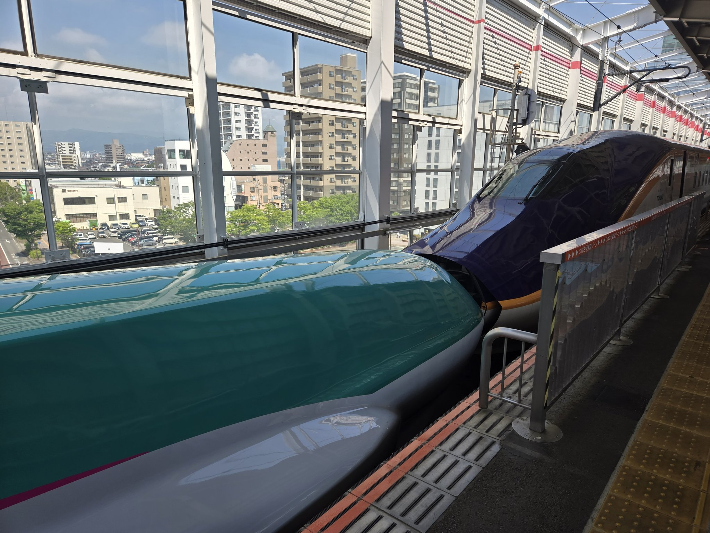
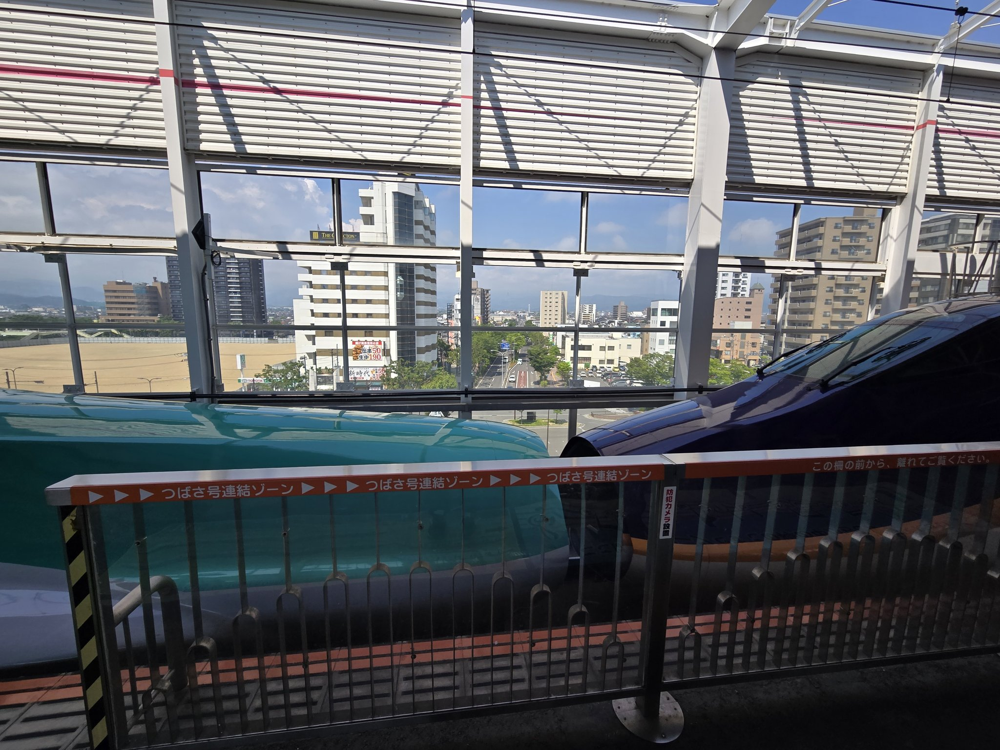

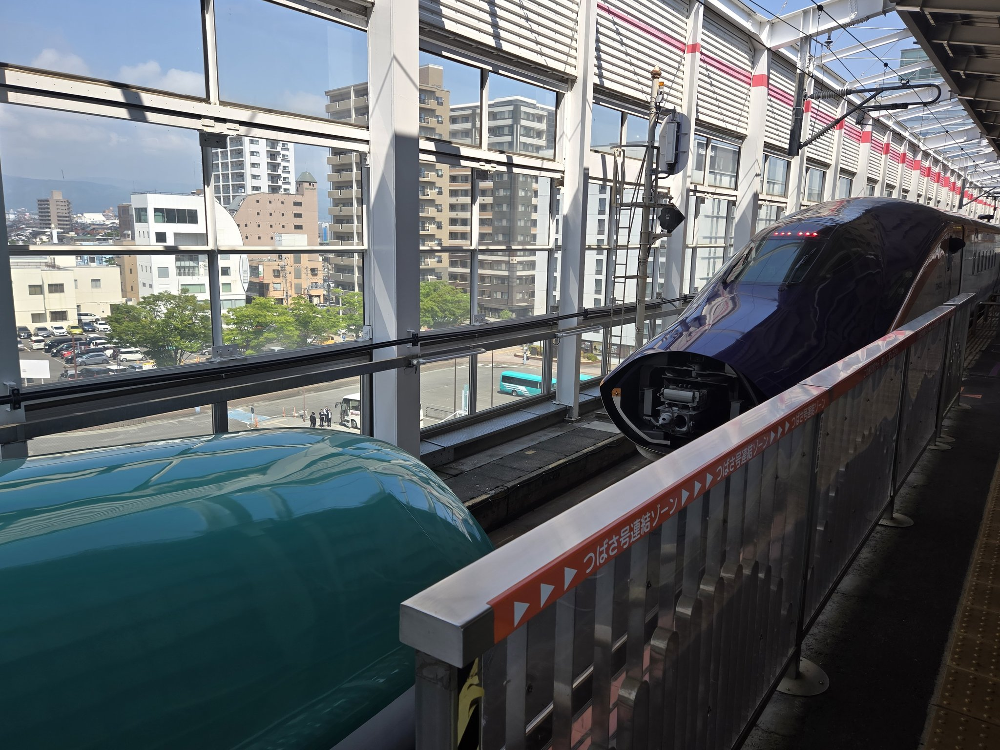
ユウマボウズ
@Gc5RLsVaaV12052
新幹線で仮眠して、福島駅でつばさとやまびこの切り離しシーンを撮影。
仙台はもう少しです。
今の部署にほぼ毎日10時間くらい
サボってるらしいおじさんいるらしいww
もし本当なら暇過ぎるの
辛くないのかなwww
自転車青切符、4月は2147件 「一時不停止」「ながら運転」7割
自転車青切符、4月は2147件 「一時不停止」「ながら運転」7割
【週末無料】プレイヤー600万人突破オープンワールド・サバイバルARPG『V Rising』5月15日よりフリーウィークエンド実施へ。野心的な新作も開発中
https://
gamespark.jp/article/2026/0
5/14/166384.html?utm_source=twitter&utm_medium=social&utm_content=tweet
…
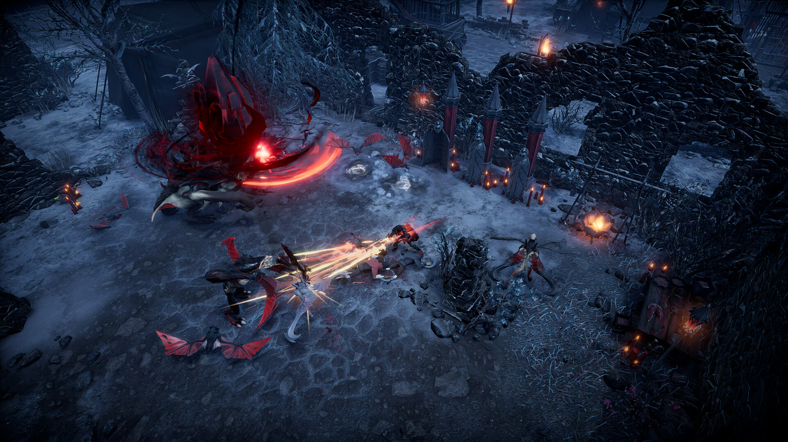
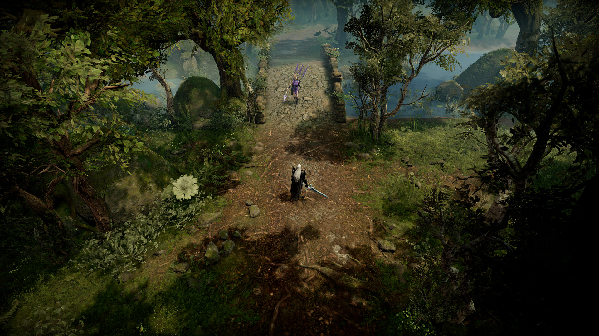

M320グレネードランチャーを買ったらストックが欠品で悲しい（書いてあったけど読み飛ばしてた！！！）
「攻殻機動隊ってなんか小難しいんじゃない？」ってオタクに言われると「いや、実質百合シーンのあるこち亀だよ！！！マジマジ！！！嘘じゃないって！！！本当本当！！！ここに原作が3冊あるから1冊持ってきなよ！！！」って布教してる
.˚⊹／
「ツクヨミ感謝祭」
クラウドファンディングプロジェクト終了
最終支援額【4057%】→【5,003%】
.˚⊹＼
更なる応援をありがとうございました！
引き続き『超かぐや姫！』「ツクヨミ感謝祭」を
応援のほど何卒よろしくお願いいたします
#超かぐや姫 #CosmicPrincessKaguya

今日のシャツは2018年にバンドリとパ・リーグ6球団がコラボしたTシャツで野球観戦を楽しみます！
ちなみに各キャラクターの球団は…
香澄→楽天
蘭→オリックス
彩→日本ハム
友希那→西武
こころ→ソフトバンク
美咲→ロッテ
となっています。
今日は楽天対オリックスなので香澄と蘭です。
#バンドリ

6児の母「私は『多産マウント』を流行らせたい。金持ちも結局は子供の数でランク付けされる社会へ。それが少子化解決の道」 #炎上

6児の母「私は『多産マウント』を流行らせたい。金持ちも結局は子供の数でランク付けされる社会へ。それが少子化解決の道」 - オレ的ゲーム速報@刃の記事ページ
jin115.com
なるせひろのりさんがリポスト
αシリーズ最高(*1)の解像性能 有効最大約6680万画素フルサイズミラーレス一眼カメラ『α7R VI』を発売します。ブラックアウトフリーでのAF/AE追随の最高約30コマ/秒(*2) の連続撮影を実現。
あわせて、XLRアダプター『XLR-A4』などのアクセサリーを発売します。
『α7R VI』スペシャルコンテンツ

「メダロット カードロボトルRB」，ダウンロード版の予約受付を開始。チュートリアルをプレイ可能な体験版も配信
https://
4gamer.net/s/G098416.2605
13063
…
体験版は「クワガタVer.」のみの配信となるが，「カブトVer.」と「クワガタVer.」のどちらを購入しても，体験版で進行したところまでデータを引き継げる

Haruhiko Okumuraさんがリポスト
まいどなニュース 2026年1月23日付
共通テストの問題用紙、ブルーライトで照らすと→浮かび上がる謎の英数字「隠し機能があるなんて」「付加価値がすごい」
https://
maidonanews.jp/article/162999
50
…
@maidonanews
Haruhiko Okumura
@h_okumura
共通テストの組版ツールがついに明かされた x.com/bktor_2415/sta…
ﾍｲﾍﾞｲﾋﾞｰ♪
THE FIRST TAKE
@The_FirstTake
【#THEFIRSTTAKE】
ー
No.666
かぐや (cv. 夏吉ゆうこ) & 月見ヤチヨ (cv. 早見沙織) / ワールドイズマイン CPK! Remix
ー
白いスタジオに置かれた、一本のマイク。
ここでのルールは、ただ一つ。
一発撮りのパフォーマンスをすること。
・
@Cho_KaguyaHime
▼Full show on YouTube
ENEOSの原油タンカー、ホルムズ海峡通過の可能性 出光に続き2社目
ENEOSの原油タンカー、ホルムズ海峡通過の可能性 出光に続き2社目
新幹線で仮眠して、福島駅でつばさとやまびこの切り離しシーンを撮影。
仙台はもう少しです。
トランプ氏訪中前に幻の来日構想 高市政権、「脅威」すり込みに誤算
トランプ氏訪中前に幻の来日構想 高市政権、「脅威」すり込みに誤算
リコージャパン、社内基幹システムに障害 通信回線破損で 「サイバー攻撃ではない」

リコージャパン、社内基幹システムに障害 通信回線破損で 「サイバー攻撃ではない」
【令和の小保方晴子】京都大学の小田裕香子教授(女子枠) 論文不正と女性である事が評価されて教授に昇進 内部告発した男性ポスドクは解雇される
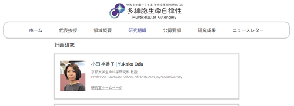
【令和の小保方晴子】京都大学の小田裕香子教授(女子枠) 論文不正と女性である事が評価されて教授に昇進 内部告発した男性ポスドクは解雇される : ハムスター速報
北関東に友人と行った時、スナックみたいな店に入って、カウンターにいた子に「よければ一杯どうぞ」ったら普通のお茶を飲み出して、「深夜に店が終わったら1時間以上かけて自分で車運転して帰るから酒は飲めない」って言ったの、「さすがにもっと良い働き方とか場所があるのでは…」ってなった。
タルトタタン（なんかかわいい）
【悲報】ホームセンターの棚、スカスカになってしまう・・・理由はアレ #政治
【悲報】ホームセンターの棚、スカスカになってしまう・・・理由はアレ - オレ的ゲーム速報@刃の記事ページ
jin115.com
早くAIで全て薙ぎ払ってくれ…って思いながら毎日泣きながらコード書いてました
長期金利、29年ぶり2.605%に上昇 原油高でインフレ懸念続く

長期金利、29年ぶり2.605%に上昇 原油高でインフレ懸念続く
使えなくなるKindleは、ワープロに改造してみない？

使えなくなるKindleは、ワープロに改造してみない？
スーツケースの上のグラグラ荷物…このベルトでサクッと固定しちゃって #BuyPR

スーツケースの上のグラグラ荷物…このベルトでサクッと固定しちゃって
今、密かに起きている「Windows離れ」。“思ったより快適な移住先”とは？

今、密かに起きている｢Windows離れ｣。“思ったより快適な移住先”とは？
LINEヤフー、カカクコムへ買収を再提案 欧州ファンドに対抗
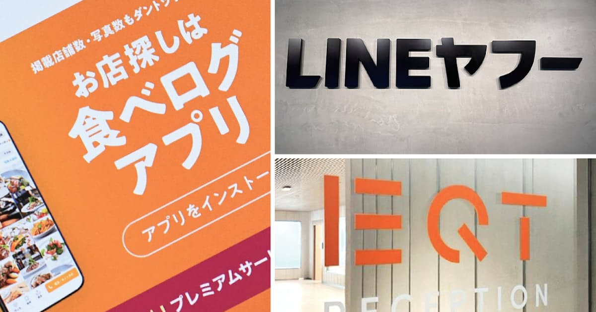
LINEヤフー、カカクコムへ買収を再提案 欧州ファンドに対抗
日経平均株価、取引時間中の最高値上回る 6万3000円台半ば

日経平均株価、取引時間中の最高値上回る 6万3000円台半ば
AI防衛技術のAndurilが50億ドル調達 トランプ政権下の軍近代化加速

AI防衛技術のAndurilが50億ドル調達 トランプ政権下の軍近代化加速
なるせひろのりさんがリポスト
カンブリア宮殿の企画CM「アイデアの扉」に出演のMTU、売上ゼロの実態を隠して会社を売り抜けた16億円買収詐欺の疑いで創業者の原拓也さんが逮捕される : 市況かぶ全力２階建

会社の実態がないんだからオルツより全然ひどいだろ— こだま (@kozzeyz_bot) May 13, 2026https://www.youtube.com/ 5月13日、警視庁は詐欺の疑いで、医療系スタートアップ、MTU元代表の原拓也容疑者を逮捕しました。ダイヤモンド編集部は昨年10月、独自取材を基に、J-STAR
kabumatome.doorblog.jp
“人型ロボ完全国産化”目指すベンチャーから身長約130cmの小型モデル 中国機ベースも、近く国産化ロードマップ発表
国産ヒューマノイドロボット開発を目指すドーナッツロボティクス（東京都港区）が、東京ビッグサイトで開催されたスタートアップ展示会「SusHi Tech Tokyo 2026」で新型機「cinnamon mini」（シナモン ミニ）を初公開した。現時点では中国製ロボットがベースだが、近く同社製ヒューマノイドロボットの国産化に向けた具体的なロードマップを示す方針も明らかにした。
itmedia.co.jp
カレー屋店主インド人「助けて！30年間日本のルールを守って頑張ってきたのに日本政府が急にビザ取り上げてきた！」→有志が署名約5.3万筆を提出 #政治

カレー屋店主インド人「助けて！30年間日本のルールを守って頑張ってきたのに日本政府が急にビザ取り上げてきた！」→有志が署名約5.3万筆を提出 - オレ的ゲーム速報@刃の記事ページ
jin115.com
インディーゲーム展示会「東京ゲームダンジョン12」レポート（後編）。作者のサービス精神？ それともエゴ？ インディーゲームの“健全”なカタチ
https://
4gamer.net/s/G999110.2605
13037
…
2026年5月3日に都立産業貿易センター浜松町館で開催された「東京ゲームダンジョン12」。次回は8月8日開催予定
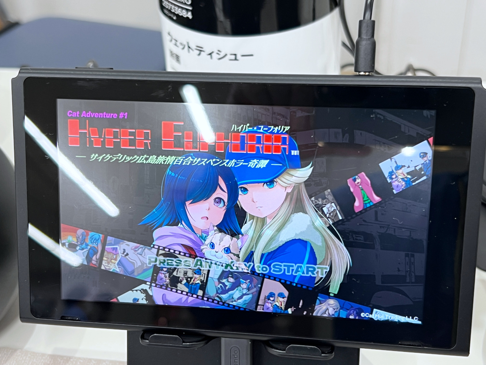
自転車の青切符、「反則金」を払わなかったらどうなる？

自転車青切符、「反則金」を払わなかったら？
「初日から遊べるコンテンツの膨大さは前代未聞だ」海外レビューハイスコア『NTE: Neverness to Everness』
https://
gamespark.jp/article/2026/0
5/14/166383.html?utm_source=twitter&utm_medium=social&utm_content=tweet
…

スマホゲームのセルラン分析（2026年4月30日〜5月6日）。今週の1位は「勝利の女神：NIKKE」。中国における1月〜3月の収益ランキングも
https://
4gamer.net/s/G045622.2605
11005
…
3.5周年記念イベント「STAR ANIS」の後半ステージ「STORY II」が4月30日に開幕した
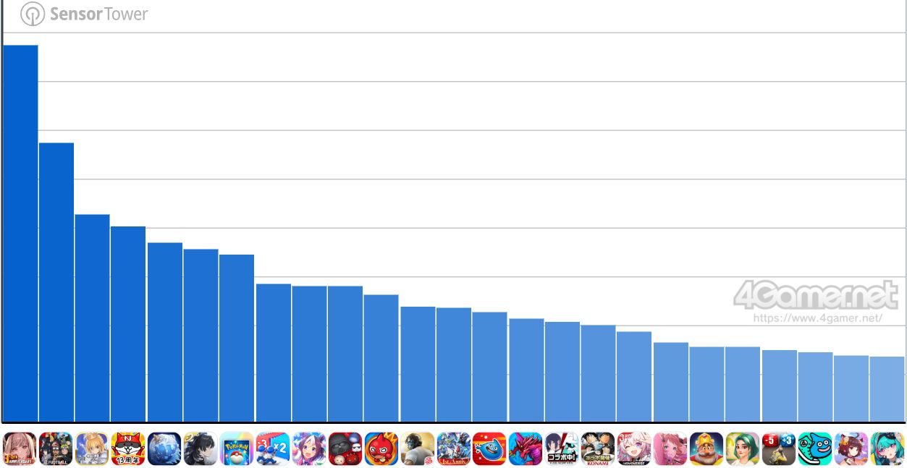
KIRIMIちゃん.に投票したよ☆
がんばるみんなにエールを！Smiling Ovation!
#サンリオキャラクター大賞 #キャラ大

KIRIMIちゃん.に投票したよ | 2026年サンリオキャラクター大賞 公式サイト
10日間、弾を探すより訓練してくれた方が国に貢献すると思うけど、形式主義に囚われる日本っぽいよね。
砂川 泉
@Izumi_Sunagawa
自衛隊は撃った弾は全て回収します。
たった１発見つからないだけでも、関係者は射場から出る事は許されません。
見つかるまで徹底的に探します。
バキュームカーを使って簡易トイレの中を全て吸い上げて探したりもするそうです。
2025年には1発の弾を見つけるまで10日間かかった事例があります。
ルビオ氏、米国務長官就任後初の訪中 「制裁対象」もトランプ氏に同行

ルビオ氏、米国務長官就任後初の訪中 「制裁対象」もトランプ氏に同行
Torishima / INTPさんがリポスト
僕も4並列で配置してましたが、ヘトヘトになるので、最大3にして（なんなら2くらいにして）その全てが動いて待ちになったら少し休んでXをダラダラ見ることにしました（いまこれ
Torishima / INTP
@izutorishima
最近 AI 指示出しの後の待ち時間発生するので大体３タスクくらい同時にやっちゃっていることが多いが、進みはいいんだけど脳が疲れるねん x.com/awawa_adhd/sta…
Torishima / INTPさんがリポスト
この記事めっちゃ面白い。自分のワーキングメモリ少なすぎて、全部GoogleカレンダーとClaudeCodeに置くことで管理してもらってる。でもこれは環境によって強要されてきただけであって、根本的には圧縮型だったのでいまも外化の稚拙さが目立つ。場面によって「認知戦略をスイッチ」できたら強そう。


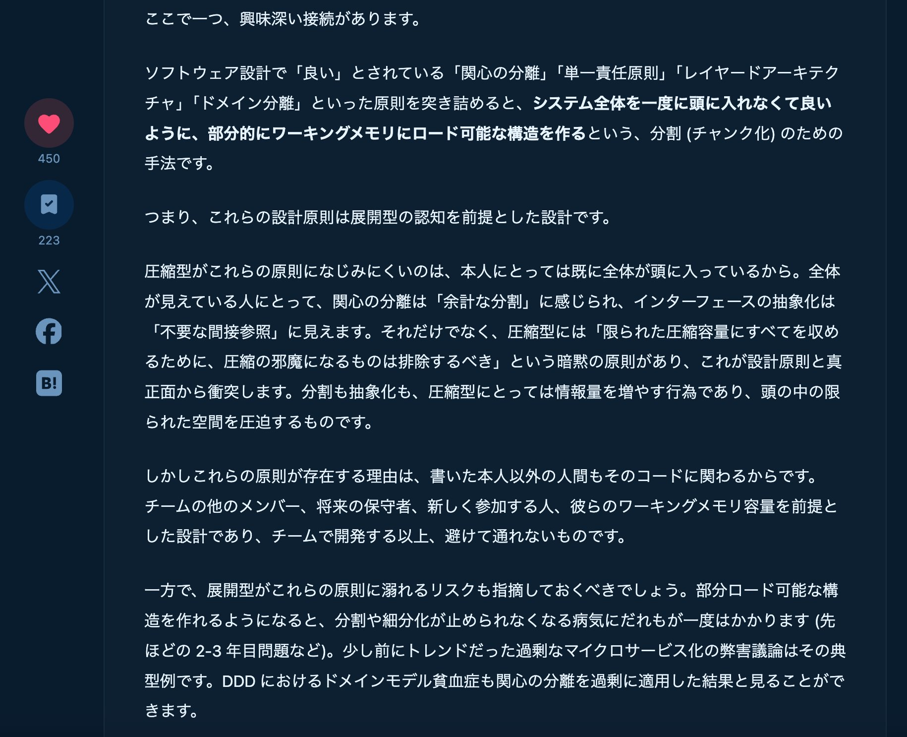
Torishima / INTP
@izutorishima
この記事死ぬほど面白いのですが、私は結局ほぼ一人開発しかやってきてないために「展開型」でありながら脳内コンテキストに収めるために、過剰な抽象化を極端に嫌い、数百行程度の適度に凝集度が高く適度に責任が分離された設計を強く好むタイプだなと思った
https://
zenn.dev/torao/articles
/20260502-differences-in-engrs-cognitive-strategies
… #zenn
悪化する街角景気、株高の追い風より原油高の逆風

悪化する街角景気、株高の追い風より原油高の逆風
なるせひろのりさんがリポスト
リメイクしてほしいタイトル
モデルの隙間から隣の火災が見えたりするので
歪みが無いモデルで見たい あと今ならもっと
火災の表現が良く出来そう あとは救助の待つ人の
声優さんが少ないのでチョーさんやみやむーなのが
バレバレなのでほかの人で取り分けてほしいｗ

SonicEchoes
@SonicEchoes
#SEGA Saturnの『バーニングレンジャー』のライティング効果が、現代の技術に比べると原始的だと理解していますが、僕にとってはそれらに何かとても美しいものがあり、決して驚きが尽きません。
メタのAI眼鏡、25年販売700万本 撮影機能やデザインで人気拡大

メタのAI眼鏡、25年販売700万本 撮影機能やデザインで人気拡大
経済協力開発機構（OECD）「日本は消費税率を18％まで引き上げろ。高市首相の食料品消費税ゼロは、あまりにもコストがかかる荒っぽい対応だ」 #雑談・その他の話
経済協力開発機構（OECD）「日本は消費税率を18％まで引き上げろ。高市首相の食料品消費税ゼロは、あまりにもコストがかかる荒っぽい対応だ」 - オレ的ゲーム速報@刃の記事ページ
jin115.com
連れていくことは悪いことではないよ。ただ、現地を見て自分なりに考えてどう思うかをまとめさせるだけでいい。講師の思考を押し付けるのは絶対にやってはいけない。
琉球新報
@ryukyushimpo
【識者談話】県教委が辺野古見学調査 「連れて行くこと自体悪いのか」と萎縮を懸念 安全管理と平和教育分けて 新城俊昭氏（沖縄歴史教育研究会顧問）
https://
ryukyushimpo.jp/national/entry
-5245096.html
…
こうなると予想、というか異次元緩和終了が発表されていたので、4年前に大量買いしたメガバンクホルダーには楽しみしかない
当時はシリコンバレー銀行とか取り付け騒ぎがあってビビってたけどw
❀Elene❀
@ELFINE001
このヤバさ。総人口の何割が感じる事が出来るのだろう... x.com/YahooNewsTopic…
【聖地巡礼】anemoi / key in しょさんべつ天文台 編
https://
youtu.be/nipBRZ-P2wk?si
=xHx9o_q1xcJin2k7
…
@YouTube
より
金平糖買いに行かないと！！
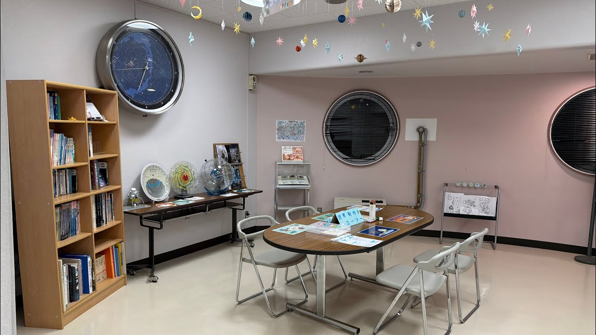
anemoi / key しょさんべつ天文台です。今作は、ふむゆん先生原案の 淡雪陽彩 ちゃん推しです。2026年3月14日、15日撮影#anemoi#アネモイ#淡雪陽彩#初山別村 #聖地巡礼
youtube.com
何これ？


Tuğçe yıldız
@tugce190333
夫が結婚記念日にこれをプレゼントしてくれたんだけど、これって何に使うの？ 何か知ってる人いる？
仙台は牛タンが有名ですが、今回はそれ以外の名物を食べてみたいですね。
#アップ738 #虹 かな？
オーストラリアに続いてニュージーランドも日本のもがみ型護衛艦を輸入検討へ。日本の防衛産業がアメリカなき時代を支える。豪州メディアは「日本は数十年来続いていた防衛輸出規制を緩和した。これは長らく待望されていた変化であり、武器販売をさらに拡大することを可能にするものだ。予測不可能な米
日本の艦艇「もがみ」がニュージーランド海軍に切望される理由 | 豪州との大型契約が「追い風」に
日本の艦艇「もがみ」がニュージーランド海軍に切望される理由 | 豪州との大型契約が「追い風」に
日本政府がエネルギー不足に苦しむキューバに支援の手。こういう外交ほんとうに大事。「キューバは現在、米国による事実上の封鎖で深刻な燃料不足に苦しむ。キューバ保健省によると、国内では燃料不足で緊急手術以外の手術は延期され、今年３月現在、９万６０００人（うち１万１０００人が子供）以上が
外務省、燃料不足のキューバに１０・６億円の無償資金協力…１０か所の病院に太陽光発電設備
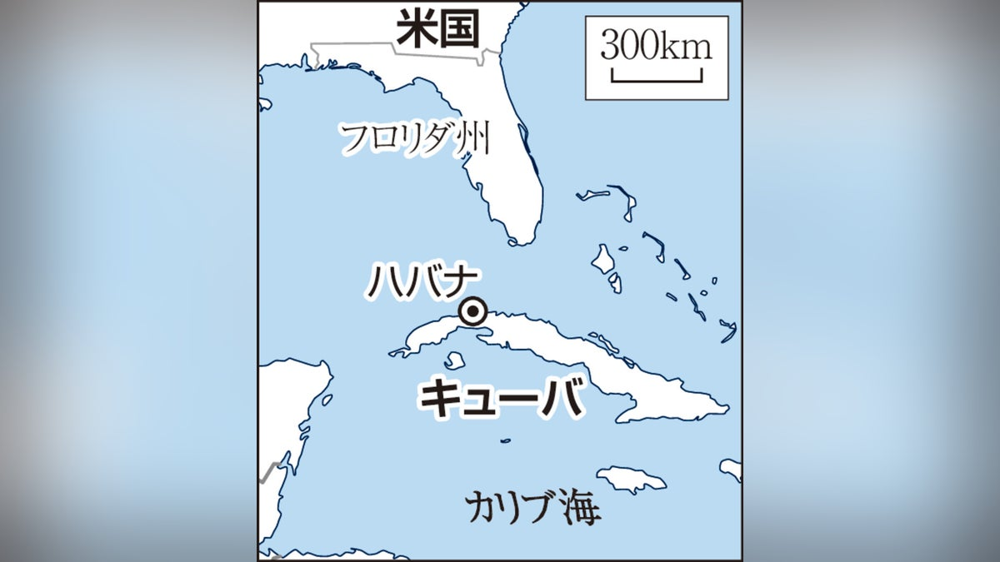
外務省、燃料不足のキューバに１０・６億円の無償資金協力…１０か所の病院に太陽光発電設備
NTTが新規事業でエビの養殖を手がけ、軌道に乗せているとか。通信と水産という全然関係なさそうな話だけど、インタビューはテクノロジーの塊みたいな話で非常に面白かった。陸上養殖のメリットは「ずいぶん前から気候変動や乱獲などの影響で漁獲高が減少していますが、陸上養殖を事業化できれば、安定
｢外国産が9割｣の日本のエビを｢10年で国産化する｣…NTTが海ではなく陸の上で始めた｢スゴいエビ養殖｣の中身
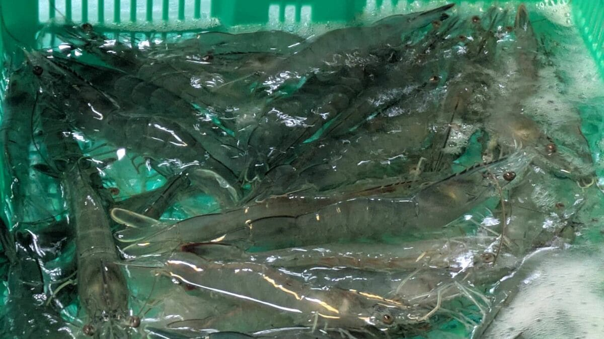
｢外国産が9割｣の日本のエビを｢10年で国産化する｣…NTTが海ではなく陸の上で始めた｢スゴいエビ養殖｣の中身
2,000円台の充電器でも、今何ワット？「見える化」できる
2,000円台の充電器でも、今何ワット？｢見える化｣できる
SOTOの「マイクロトーチ」、風に負けない着火力が頼もしすぎ #BuyPR
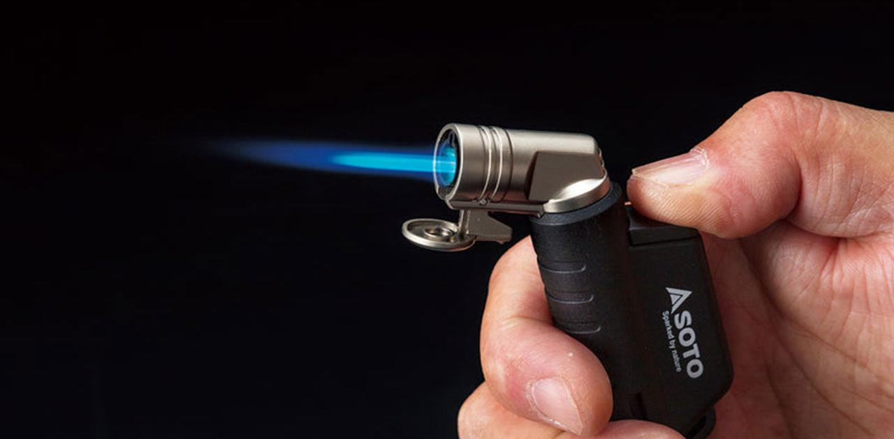
SOTOの｢マイクロトーチ｣、風に負けない着火力が頼もしすぎ
グーグルがAIに全振りした新しいノートPC「Googleブック」を発表。いよいよこっちの方向にスマホやPCも動き出してきた。Magic
Gemini搭載ノートPC「Googlebook」登場。AndroidとChromeOSを融合
Gemini搭載ノートPC「Googlebook」登場。AndroidとChromeOSを融合
新幹線で仙台へ向けて出発です！
#ガルクラ
#になたび
#すばたび
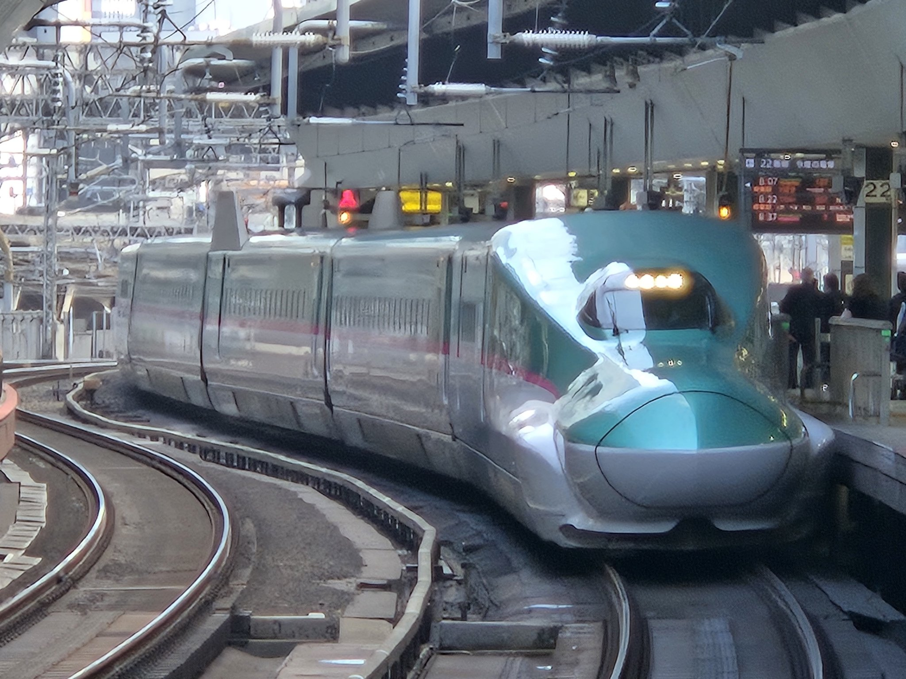
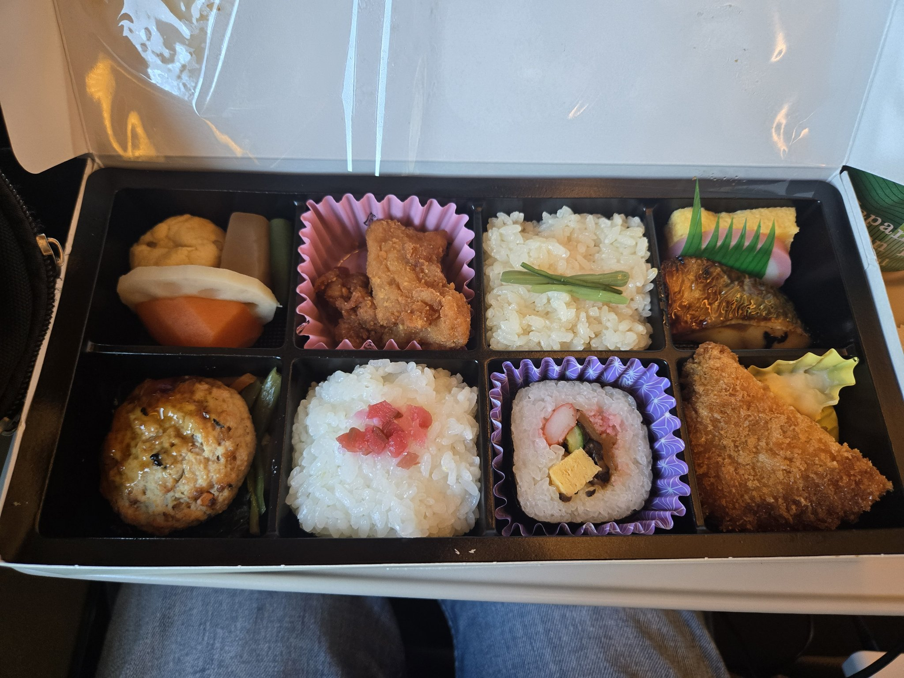

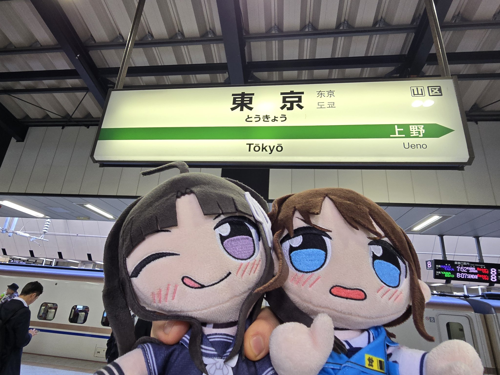

ユウマボウズ
@Gc5RLsVaaV12052
おはようございます！
夜勤を終えて、東京駅に来ています。
これから智ちゃんの故郷、仙台へ向かいます！
新幹線は指定席が混んでいたので、グリーン車にしました。JRE POINTを使うと指定席と同じ料金で乗れます！
今日は楽天生命パーク宮城で野球観戦です！初めての場所なので楽しみです！
高校国語、再び小説重視 AI時代に感性を 次期要領で文科省案 | 毎日新聞

高校国語、再び小説重視 AI時代に感性を 次期要領で文科省案
どうなんでしょうね。論理をきちんと学んだ上でのプラスアルファとしての文学だと思う。論理が抜け落ちてて文学だけだと「お気持ち」重視になりがちでは。文科省が高校の国語について、論説文や報告文を扱う論理国語と小説などを扱う文学国語を別々の科目としているのを見直し、小説に触れる機会を増や
最近 AI 指示出しの後の待ち時間発生するので大体３タスクくらい同時にやっちゃっていることが多いが、進みはいいんだけど脳が疲れるねん
あわわ
@awawa_adhd
僕もADHDにはこの「ハイパーマルチタスク」はお勧めできるんだよな。
確かに研究でも「マルチタスク」は注意の切り替えにより効率が悪いとされているが、それは集中力が続く前提の話。
ADHDはそもそも「1つの事に集中できない」という効率以前の問題を抱えているので、その解決策としてこれは最適。 x.com/DDS_HCAn/statu…
なるせひろのりさんがリポスト
千代田区から対応を求められ、スロープが撤去されていた秋葉原の白銀会館ビル入口。問題が無事解決されたのか復活しているようだった

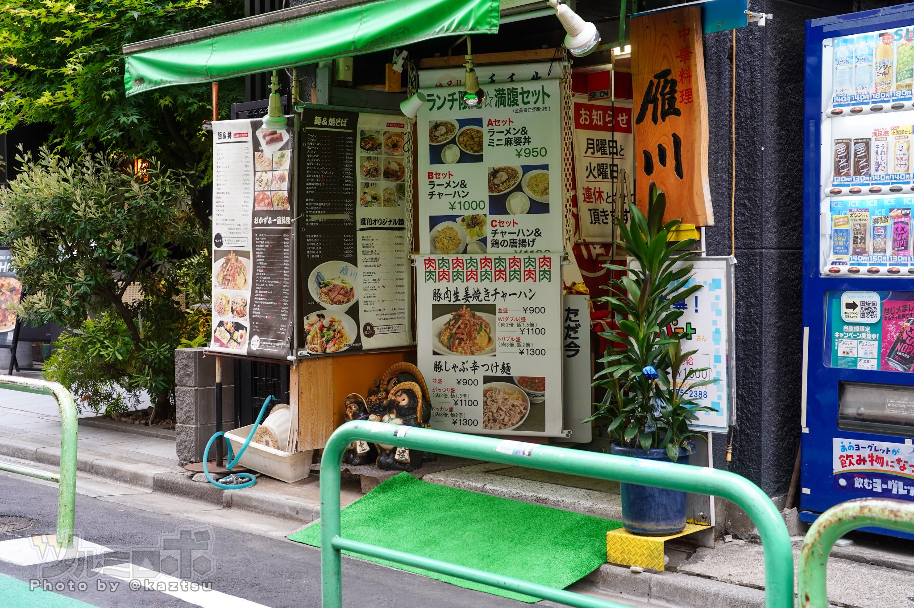

素朴な萌えあり
人生の目標なんて年齢や節目でどんどん変わっていく。中年になってある程度自分の型ができあがってきたら、日々の暮らしをただ続けていくことこそが大事になる。Voicyで考えました。↓
目標は「日々のささやかな暮らし」でかまわない | 佐々木俊尚「毎朝の思考」/ Voicy - 音声プラットフォーム

目標は「日々のささやかな暮らし」でかまわない | 佐々木俊尚「毎朝の思考」/ Voicy - 音声プラットフォーム
リプライが大喜利合戦でワロタ
確かに怖いな
現実をハックしない｜tkq
現実をハックしない｜tkq
うまく立ち回ってちょっとだけ得をするようなハックが横行している問題。これってまさに「共有地の悲劇」と言われる現象で、だれもがハックしたら結局は全員が損をする。「今までグレーでやっていたところを白と黒にきっちりと分けなければならず、それにはハック側も膨大なコストを払うことになります
コーヒーは腸を介して認知機能に影響する？ アイルランドでの調査結果、Nature系列誌で研究発表
コーヒーは腸を介して認知機能に影響する？ アイルランドでの調査結果、Nature系列誌で研究発表
マジで理解できないんだけど、好きなアニメキャラがいたとして、どうしてそれに声つけてる人間に興味が出るの？
仮にそれが美しい声だとしても、それはアニメキャラの声だからアニメキャラにしか興味は出ないよ？
AIの「倫理的に不適切な選択」はSF作品の暴走AIを模倣していた──Anthropicが解決手法を公開

AIの「倫理的に不適切な選択」はSF作品の暴走AIを模倣していた──Anthropicが解決手法を公開
AIが不適切な行動をしてしまうのは、「AIが暴走する」といったSFの物語を模倣していたからという驚くべきアンソロピックの分析。「AIは提示された倫理的ジレンマをSF的な物語的状況として認識し、SF小説などで描かれる『目標のために暴走するAI』というキャラクターを模倣。脅迫や妨害といった行動につ
なるせひろのりさんがリポスト
特に意味はない落書き

美女「ひろゆきさんに可愛くないって言われた、絶対に許さない」ひろゆきさん「ご自身で◯◯だとおっしゃいましたよね？」→ド正論の意見を叩きつけられてしまうｗｗｗｗｗ #雑談・その他の話

美女「ひろゆきさんに可愛くないって言われた、絶対に許さない」ひろゆきさん「ご自身で◯◯だとおっしゃいましたよね？」→ド正論の意見を叩きつけられてしまうｗｗｗｗｗ - オレ的ゲーム速報@刃の記事ページ
jin115.com
運動をしすぎで膝の痛みを抱えてるすべての方に朗報！損傷した膝の半月板の再生医療で、富士フイルムが政府から国内の製造販売承認を取得したと発表。「現在は損傷部分を切除するのが一般的だが、同社の治療法では切除が不要になる。同様の治療で国内の承認を得たのは初めてだという」↓
富士フイルム、半月板の再生治療で販売承認 切除なしで修復 - 日本経済新聞

富士フイルム、半月板の再生治療で販売承認 切除なしで修復
おはようございます。
リアリティのない仮病
小1息子「熱あるから学校休む」→父が心配そうに体温計を見たら……「無理ありすぎだろ」「せめて39℃とかにしなさい」
（記事URLはリプから）

小1息子「熱あるから学校休む」→父が心配そうに体温計を見たら……「無理ありすぎだろ」「せめて39℃とかにしなさい」 | 育児 ねとらぼ
鉄オタ1000人中999人が場所特定できそうな写真が撮れた


しろはんど
@shirohand_tyhs
鉄オタ1000人中999人が場所特定できそうな写真が撮れた
そうだ アニメ，見よう：第259回は海外人気も高い「とんがり帽子のアトリエ」。魔法使いを目指す少女の成長を描いた王道ファンタジー作品
https://
4gamer.net/s/G033856.2605
08040
…
新進気鋭のスタジオBUG FILMSが制作を担当。スタッフインタビュー第1弾も公開中

Polar Starチャレンジ 139日目午前の部
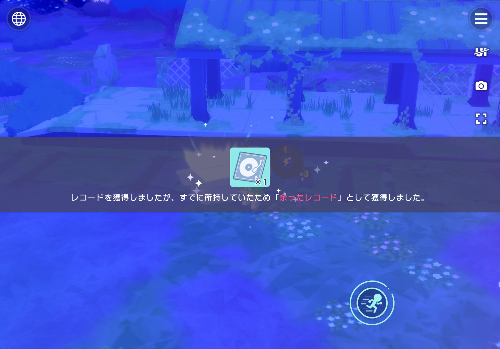
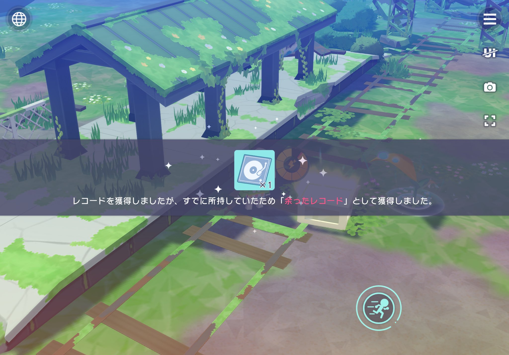
マイネームイズ
@MyNameIs_smrn
Polar Starチャレンジ 139日目深夜の部 x.com/mynameis_smrn/…
なるせひろのりさんがリポスト
最近暑くなって来たので水着回でも(1/4)

Polar Starチャレンジ 139日目深夜の部

マイネームイズ
@MyNameIs_smrn
Polar Starチャレンジ 138日目午後の部 x.com/mynameis_smrn/…
「ゼルダの伝説」実写映画が2027年4月30日に公開前倒し決定！1週間だけ早くなる
https://
gamespark.jp/article/2026/0
5/14/166382.html?utm_source=twitter&utm_medium=social&utm_content=tweet
…

ニデック社長「品質は根幹、重く受け止め｣ 社外取候補に日鉄出身者ら

ニデックの岸田光哉社長「品質は根幹、重く受け止め｣ 社外取候補に日鉄出身者ら
オタク起床
おはようございます！
夜勤を終えて、東京駅に来ています。
これから智ちゃんの故郷、仙台へ向かいます！
新幹線は指定席が混んでいたので、グリーン車にしました。JRE POINTを使うと指定席と同じ料金で乗れます！
今日は楽天生命パーク宮城で野球観戦です！初めての場所なので楽しみです！
「海人の証言は噓」辺野古転覆、抗議団体の発言を漁業者が否定 事故当日「うねりすごく」(産経新聞)
#Yahooニュース
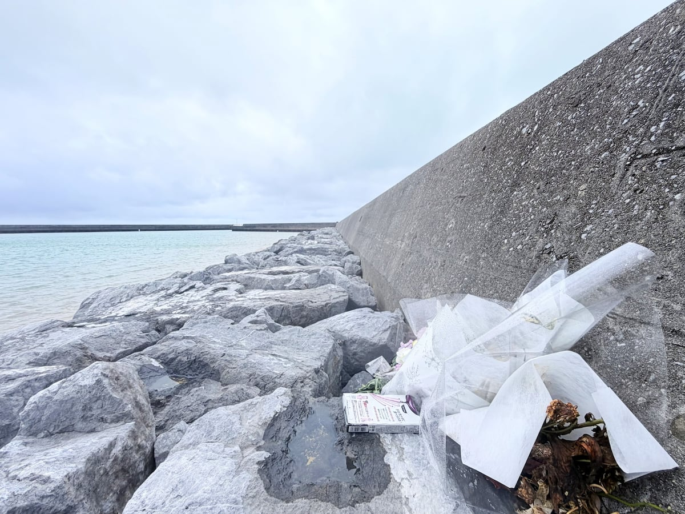
「海人の証言は噓」辺野古転覆、抗議団体の発言を漁業者が否定 事故当日「うねりすごく」（産経新聞） - Yahoo!ニュース
サイバーエージェント純利益72%増 10〜3月、「ウマ娘」など好調
決算:サイバーエージェント純利益72%増 10〜3月、「ウマ娘」など好調
日経平均、米ハイテク株高が追い風（先読み株式相場）

日経平均、米ハイテク株高が追い風（先読み株式相場）
TDK、次世代電池に年2000億円投資 メモリー不足の逆風は「一時的」
TDK、次世代電池に年2000億円投資 メモリー不足の逆風は「一時的」
なるせひろのりさんがリポスト
『007 ファーストライト』が開発完了。IO Interactiveがゴールドを報告
https://
news.denfaminicogamer.jp/news/260514c
『HITMAN』シリーズ開発が手掛ける、若き日のジェームズ・ボンドを描いたスパイアクション。5月27日にPS5/Xbox Series X|S/PC（Windows、Steam）に向けて発売予定

Torishima / INTPさんがリポスト
UUIDが衝突するというのがイメージが湧かない人は
乱数というものがいかに
決定論的・数学的な世界観と合わないものか
一度は深く考えてみることをおすすめします
https://
jp.quora.com/ransuu-wo-dasu
-suushiki-ha-nani-desu-ka/answers/78989643
…
ランダムさというのは
「我々の視界がぼやけている」
ことからもたらされているのです…
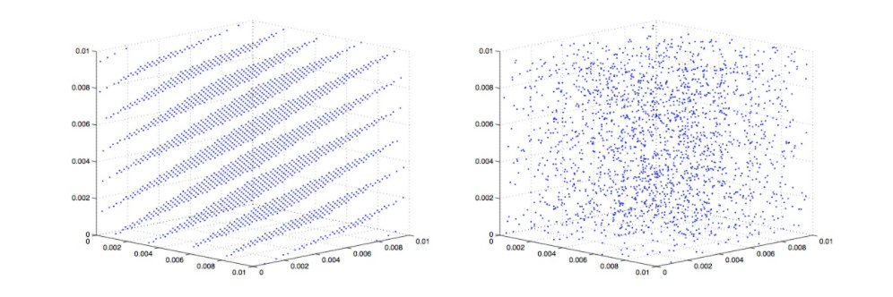
Kenn Ejima
@kenn
バベルの図書館というのがあってな。
1冊410ページ、1ページに40行、1行に80文字。このフォーマットで、アルファベットと記号をあわせた25種類のあらゆる順列組み合わせが印字された、無数の本が収蔵された図書館。
つまり25^1312000冊ぐらい収蔵数があるんじゃが、ここで奇妙なことが起きる。 x.com/pastel_orbit/s…
ALSOKとカーライル、消火設備の日本ドライケミカルを買収 最大836億円

ALSOKとカーライル、日本ドライケミカルを買収 最大836億円
モバプリさんが言うように、何がダメだったのか結論出せないと冗談抜きで平和学習そのものが詰む。自身の意見に合わないものを誹謗中傷として切り捨てて先に進もうとしてるが、そんなの世間一般には通じるかなと思う。なんか今の状態では知事選に影響出ないように動いてるように見える。 #アップ738
ラグビー日本代表、ジョーンズHCが指導停止4試合 審判に不適切発言

ラグビー日本、ジョーンズHCが指導停止4試合 審判に不適切発言
貝さんさんさんがリポスト
Torishima / INTPさんがリポスト
ちなみに、200ドルのAPIなんて、Claude -pやAgent SDKで使ったらあっという間に消えるよ？
（基本的に中身はClaude Codeと同じだから、ContextだけでTokenが消えていく）
しかし、Anthropicの発表のマーケティング臭さは酷いね。自分らに都合の良いように見せかける技がヘドロ並みだよ。
米中首脳会談の代表団にイーロン・マスク氏、ジェンスン・フアン氏、ティム・クック氏など17人の企業幹部が参加
米中首脳会談の代表団にイーロン・マスク氏、ジェンスン・フアン氏、ティム・クック氏など17人の企業幹部が参加
高速船つむぎ、また不具合？？ #アップ738
インバウンド系？
ゼットン
@HIRO_005
環七の大杉橋西詰交差点付近、2りんかんに、大型バス突っ込む！
#事故 #大型バス
https://
pic.x.com/TRySgOPb9l
https://
pic.x.com/TRySgOPb9l
https://
pic.x.com/TRySgOPb9l
ファナック、GoogleとフィジカルAIで協業 NVIDIAに続き
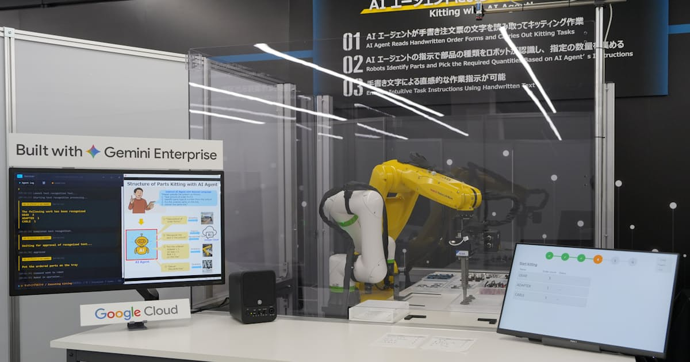
ファナック、GoogleとフィジカルAIで協業 NVIDIAに続き
【深刻】原油供給問題、ガチで続出中・・・政府は大丈夫と言い続けているのになぜ・・・ #炎上

【深刻】原油供給問題、ガチで続出中・・・政府は大丈夫と言い続けているのになぜ・・・ - オレ的ゲーム速報@刃の記事ページ
jin115.com
AIを使えば動物と会話できるようになるの？
動物と会話したいです。普段の会話はもちろんのこと、体調が悪いかどうかなども動物が自ら訴えてくれたら助かります。もちろん、｢動物が喋れたら楽になるのに｣と思っているわけではなく、本当に必要なケアができるのに、と考えているんです（病院の方針で半年も治療を長引かせてしまったことがあったんでね……）。まぁ、以前から動物との会話をテーマにしたテクノロジーはありましたよ。タカラトミーの｢バウリンガル｣とかが
gizmodo.jp
もう数ヶ月くらいこれこれこれこれコレコレコレコレ！！！！！！！！！！！！！！！！！！！！（脳が禿げそう）
とりにく
@tori29umai
検証の為にcodexとclaude codeの高いプラン契約するじゃん？
勿体ないから毎日リミットぎりぎりまで使いたいじゃん？
平行で別々のタスクをcodexとclaude codeやらせるじゃん？
人間が休まる暇がない！！！！AIに追い立てられている！！！！！！
リバーシブルキャンディの作り方
水あめを四角い型に流し込んだら…… 目からウロコの完成品に「天才！」「思わず笑った」「最高です」
（記事URLはリプから）


水あめを四角い型に流し込んだら…… 目からウロコの完成品に「天才！」「思わず笑った」「最高です」（1/3） | ハンドメイド ねとらぼ
CC は Codex CLI の略だった説さすがにおもろい
ryoppippi
@ryoppippi
コデックス CLI への移行の時間です
cc はついに私たちにとって codex cli を意味します。claude code ではありません
初期『バイオ』風サバイバルSLG『感染区白書』日本語対応で発売―特殊部隊「ヴァルチャーズ」としてゾンビの大量発生に立ち向かおう
https://
gamespark.jp/article/2026/0
5/14/166381.html?utm_source=twitter&utm_medium=social&utm_content=tweet
…
発売記念セールで5月23日まで20%オフで配信中。
@VulturesGame
https://
x.com/i/status/20545
77466534920655/video/1
…


都市型地銀に再編の波 あいち・三十三FGが27年統合で合意
https://
nikkei.com/article/DGXZQO
UB136RF0T10C26A5000000/?n_cid=SNSTW005&n_tw=1778681213
…
愛知県のあいちFGと三重県の三十三FGは、どちらも地盤の地域内でのシェアが2位です。両社が争わず規模を追求して統合することで、都市部での競争力を高めます。

都市型地銀に再編の波 あいち・三十三FGが27年統合で合意
モグモグして強くなる！ 自分だけのクリーチャーを育てるローグライト「Everything is Crab」（ほぼ日 インディーPick Up！）
https://
4gamer.net/s/G098548.2605
10003
…
青いぷにゅっとした生物を125以上の進化で異形に育て上げ，生態系のなかで生存戦略を探るローグライト
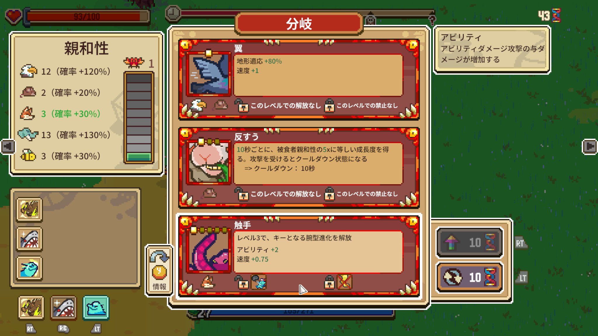
Codex からセカンドオピニオンとして claude -p を呼び出すやつたまにやってたけど実質できなくなるってこと？
ClaudeDevs
@ClaudeDevs
6月15日から、有料Claudeプランでは、プログラムによる使用のための専用の月間クレジットを利用できます。
このクレジットは以下の使用をカバーします：
- Claude Agent SDK
- claude -p
- Claude Code GitHub Actions
- Agent SDKを基盤としたサードパーティアプリ
claude -p 、嘘だよな？
Blender 自体を AI エージェントに操作させている・・・？？？
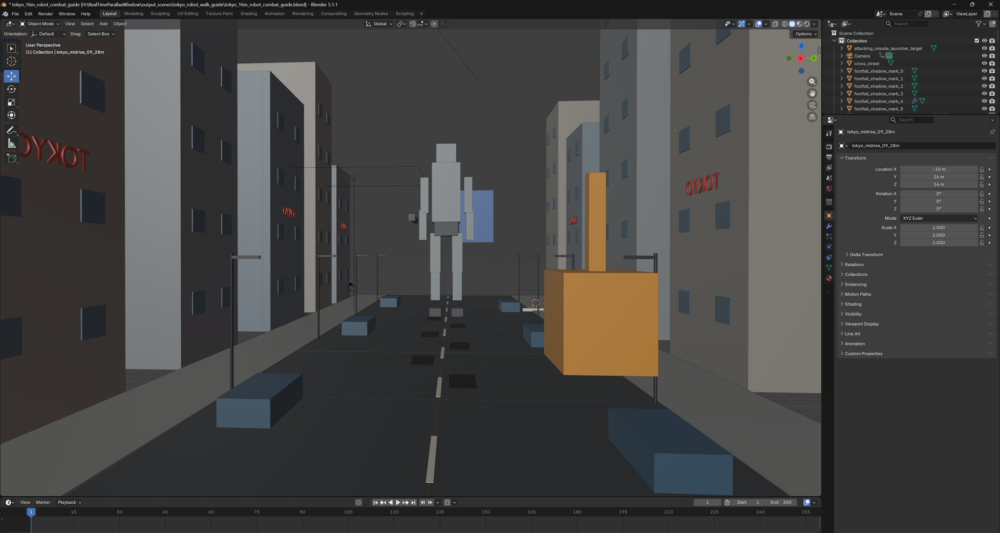
新清士@AIコンテンツ開発者
@kiyoshi_shin
こんなシーンがBlenderの中に作られているが、一切、Blenderを操作していない。
バッチバチすぎんだろ

ClaudeDevs
@ClaudeDevs
Claude Codeの週次利用制限が50%増加します。7月13日まで。
Pro、Max、Team、および座席ベースのEnterpriseユーザーのすべてで現在利用可能です。
人は自分の信じたいことしか信じない。信じたくないことには目を伏せる。信じることはその人の生きる指針であり、それは客観的な真偽とは関係がない。そして自分が信じるコトやモノが揺さぶられると、人は動揺させられ、不快感を催す。だから人は簡単に自分の信念を曲げない。それは良いのか悪いのか。
PlayStation 2の基板を解析し小型化、その基板をベースに「ポータブルプレイステーション2」を作ってしまうモッダーが登場!!
以下、搭載された新機能
-USB PD対応
-デジタル映像出力
-SDカードなど現代ストレージ対応
-カスタムBoot ROM
-音響回路の強化
-DualShock 2を内蔵
https://
github.com/tschicki/PS2-P
ortable/tree/main
…
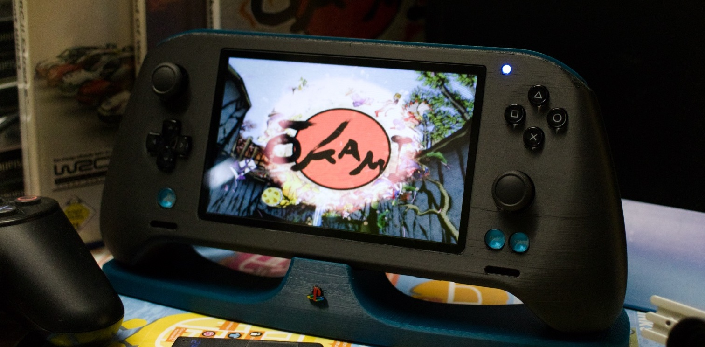
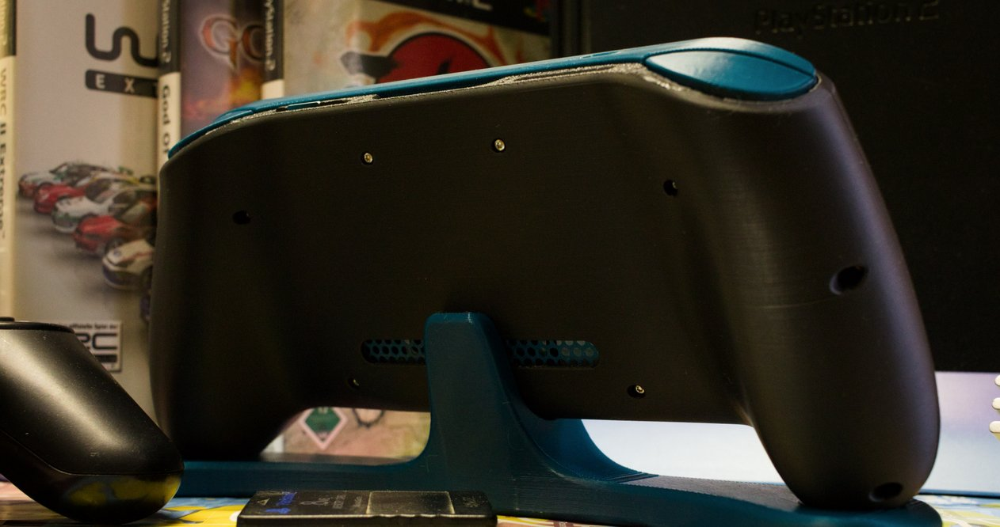
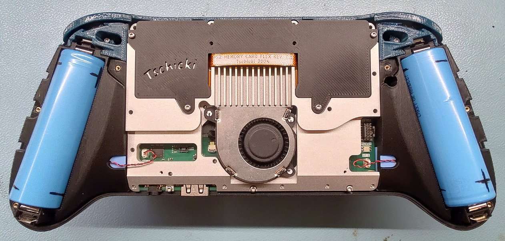
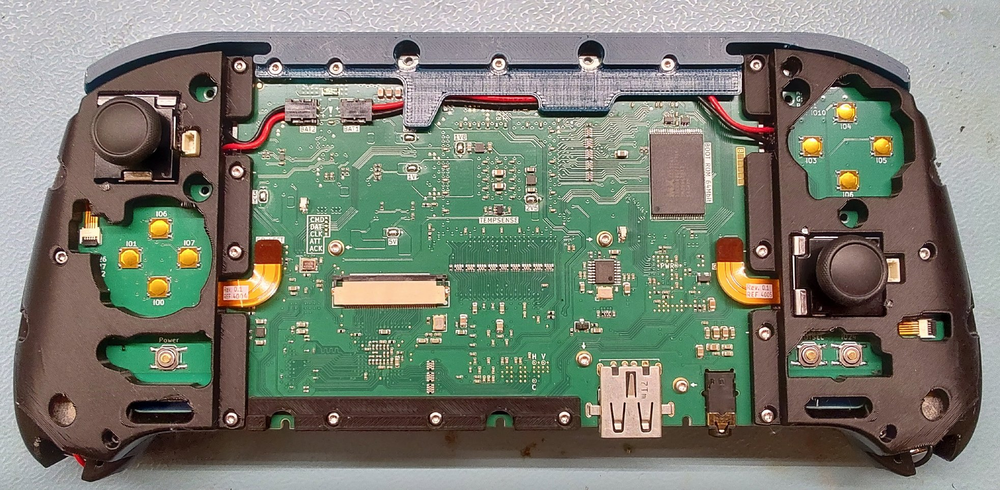
村田製作所、社員の特許報奨10年で2.5倍
https://
nikkei.com/article/DGXZQO
UF023EC0S6A400C2000000/?n_cid=SNSTW005&n_tw=1778681601
…
中国や韓国に対抗するため知的財産戦略を武器にしています。登録後の特許や登録前の発明を評価し、最大100万円を支給する制度などを設けてきました。特許によって他社の参入を防ぐ狙いです。

村田製作所、社員の特許報奨10年で2.5倍 中韓に対抗で世界首位堅守
東京都、東京駅周辺で自動運転バス 6月23日から実証
https://
nikkei.com/article/DGXZQO
CC0751D0X00C26A5000000/?n_cid=SNSTW005&n_tw=1778677160
…
状況に応じて運転手が操作する「レベル2」で運行します。運行地域は大手町・丸の内・有楽町エリアで、無料バス「丸の内シャトル」のルートを約40〜50分間隔で走ります。
東京都、東京駅周辺で自動運転バス 6月23日から「レベル2」実証
#ソニーα7RVI登場
Sony | Alpha (Japan)
@AlphabySony_JP
／
真実に、輪郭を。
α7R VI発売記念
公式X＆引用リポストキャンペーン
＼
抽選で6名様に「ソニーストアお買い物券6万円分」をプレゼント
①@AlphabySony_JP をフォロー
② #ソニーα7RVI登場 を付けて本投稿を引用リポスト
あなたが「ここがいい！」と感じたポイントを教えてください！
2015年の研修旅行｜辺野古ボート転覆事故遺族メモ 沖縄タイムスの記者相手にやり合う生徒がいるが、途中で話が打ち切りになってるというのがなかなか興味深い。教師が偏った教育を仕掛けようとして失敗してるようにも見える。帰国子女が多いからこうなる？
2015年の研修旅行｜辺野古ボート転覆事故遺族メモ
日曜朝8時からの放送なので、この曲を聞くと旅先のホテルでの朝食を思い出します
猪又万太郎
@ichiguu
NHK【小さな旅】より「メインテーマ」
音楽：大野雄二
謹んでご冥福を御祈り致します。
作曲家・大野雄二さん死去 84歳
https://
news.yahoo.co.jp/pickup/6579912
【画像】この写真を撮影した人、女児盗撮疑惑で自宅に警察が来てしまうｗｗｗｗｗ #雑談・その他の話

【画像】この写真を撮影した人、女児盗撮疑惑で自宅に警察が来てしまうｗｗｗｗｗ - オレ的ゲーム速報@刃の記事ページ
jin115.com
早期アクセス版が“非常に好評”の宇宙コロニー船シム『Space Haven』正式リリース！ タイル1枚から宇宙船を建造
https://
x.com/i/status/20389
35361267577019/video/1
…
寄せ集めの民間人集団を率いて新たな故郷へ……
https://
gamespark.jp/article/2026/0
5/14/166380.html?utm_source=twitter&utm_medium=social&utm_content=tweet
…
iPS細胞薬の薬価5530万円 パーキンソン病向け、保険適用へ
https://
nikkei.com/article/DGXZQO
UA121XD0S6A510C2000000/?n_cid=SNSTW005&n_tw=1778688311
…
アムシェプリは脳内のドーパミンを補う薬の効き目がみられるものの、効果が十分ではない人が使用の対象となります。
住友ファーマによると、対象患者はピークの2035年度に133人を見込みます。
iPS細胞薬の薬価5530万円 パーキンソン病向け、保険適用へ
創業者利益の税負担、リスクに見合った水準どこに 課税強化で海外移住も
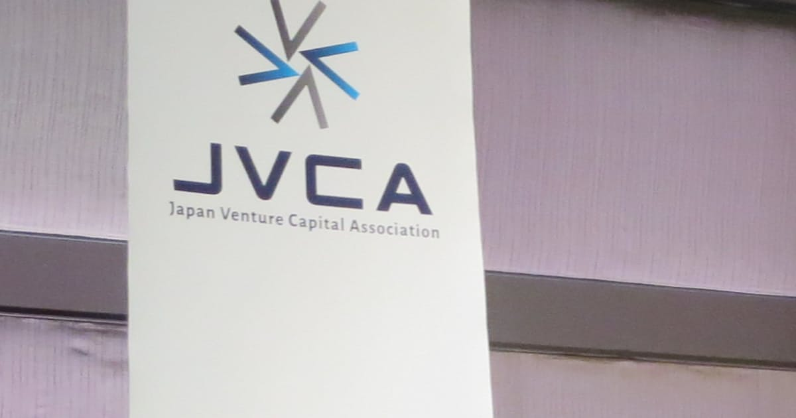
創業者利益の税負担、リスクに見合った水準どこに 課税強化で海外移住も
住友電工、10兆円クラブ入り AIシフトでフジクラ・古河電と競う
住友電工、10兆円クラブ入り AIシフトでフジクラ・古河電と競う
なるせひろのりさんがリポスト
ロボの手に人を乗せるのは緊急避難的な意味の演出なんだろうけど、あまりにも頻出するから手首に少し座面というか窪みをつけたくなるね。埋め込みグリップとポップアップするガードバー付き。
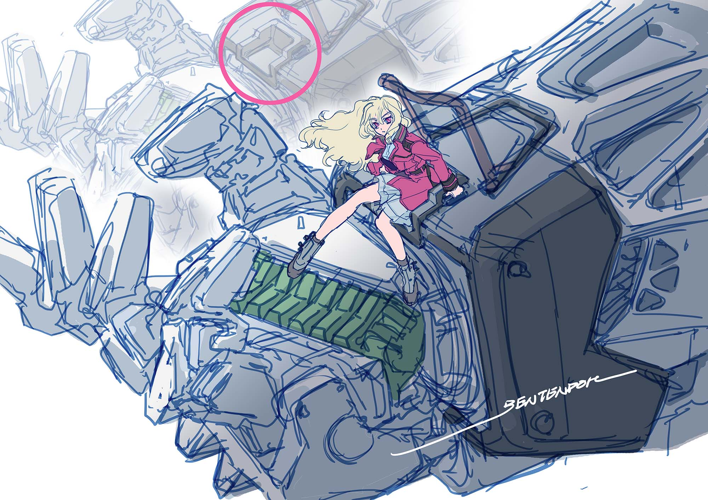
梅村さん、仕事してますね。
>参政・梅村氏「辺野古より南丹の報道多い」
参政・梅村氏「辺野古より南丹の報道多い」 NHK副会長「逮捕まで3週間かかったため」
クラファンの「Kickstarter」が成人向け・NSFW系コンテンツへの制限を強化する方向でガイドラインを更新するかもという話
調べると「マブラヴ」などがKickstarterで資金調達をしているので、それなりに影響はあるのかもというのと、まぁカード会社のアレだろうなぁとは思う
https://
kotaku.com/kickstarter-is
-the-latest-platform-seemingly-forced-to-ban-adult-content-by-payment-processors-2000695648
…
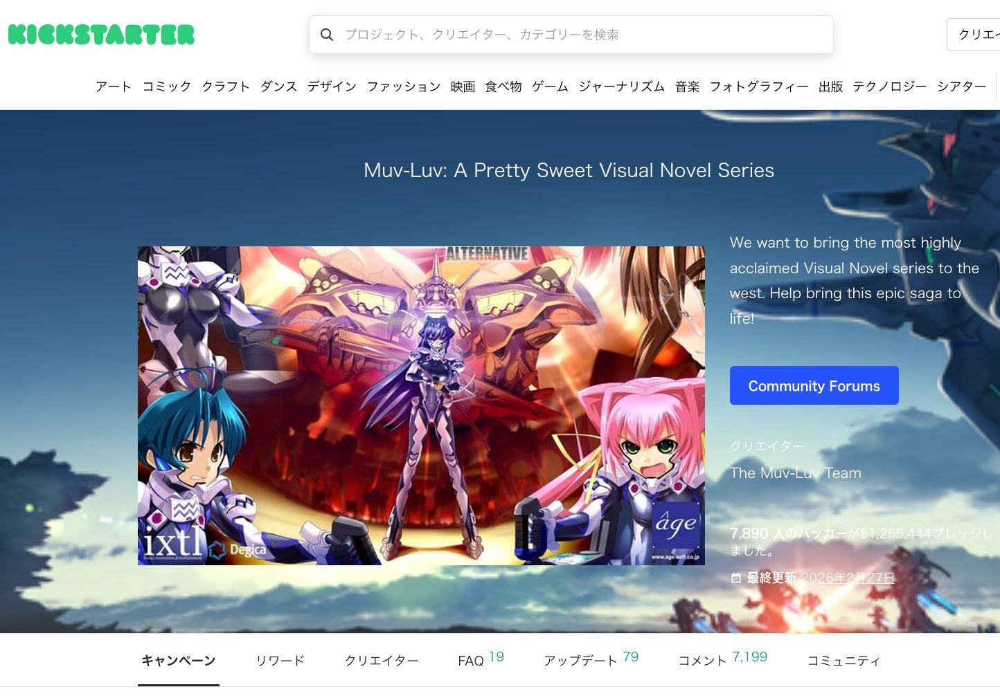
高島屋、金融で若者も富裕層も一生つながる 銀行にない「接点」生かす

高島屋、金融で若者も富裕層も一生つながる 銀行にない「接点」生かす
日本経済新聞 電子版（日経電子版）さんがリポスト
南場氏DeNA社長復帰、AI全振りで第2の創業 野球以外は多角化不発

南場氏DeNA社長復帰、AI全振りで第2の創業 野球以外は多角化不発
NYダウ小幅反落、67ドル安 ハイテク株高でナスダックは反発
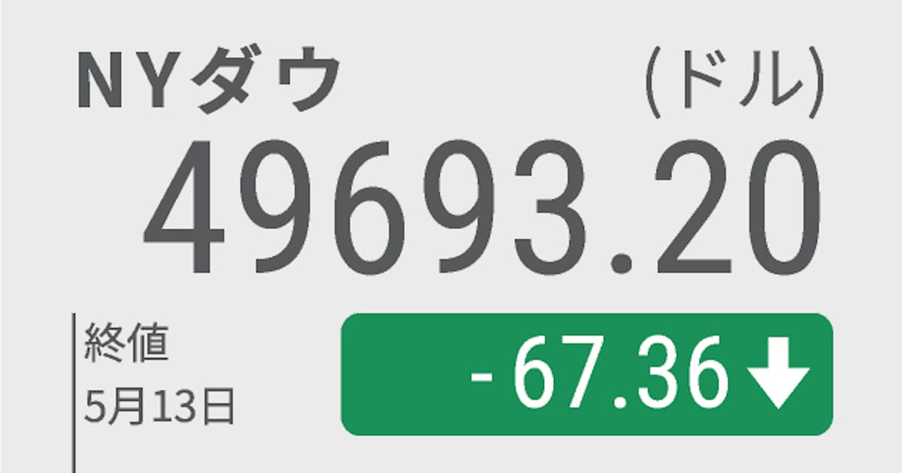
NYダウ小幅反落、67ドル安 ハイテク株高でナスダックは反発
土壇場で動いたファン氏 NVIDIA命運握る米中会談、AI分断回避狙う
土壇場で動いたファン氏 NVIDIA命運握る米中会談、AI分断回避狙う
むくり
株主総会招集の請求要件引き上げへ 政府・自民、提案権の乱用防ぐ
株主総会招集の請求要件引き上げへ 政府・自民、提案権の乱用防ぐ
ローカル線、中東危機で｢泣きっ面に蜂｣ 天竜浜名湖鉄道は潤滑油不足
ローカル線、中東危機で｢泣きっ面に蜂｣ 天竜浜名湖鉄道は潤滑油不足
半導体「非先端品」、投資300億円未満も国が補助 自動車向けなど
経済産業省は先端品ではない従来型半導体の国内製造への補助金を拡大する。投資額が300億円未満の事業も支援対象に加える。自動車など幅広い分野の製造業に欠かせない重要物資として、安定調達できる体制を整える。補助金要件を5月中に改定する。電源ICなど圧力や温度などをデジタル信号に変換するアナログ半導体や電子制御を担うマイコンをつくる企業への支援を想定する。こうした従来型半導体は自動車や工作機械など
nikkei.com
円じり安で迫る158円、「介入ライン」突破 米インフレが拍車
円じり安で迫る158円、「介入ライン」突破 米インフレが拍車
ホンダがEV戦略抜本修正、米中＋インドで再構築 14日に説明会
ホンダがEV戦略抜本修正、米中＋インドで再構築 14日に説明会
米中首脳、９年ぶりに北京で会談へ 貿易・台湾情勢を討議
米中首脳、9年ぶりに北京で会談へ 貿易・台湾情勢を討議
米中関税で貿易3割減、7000品目をAI分析 首脳「休戦」2年目議論へ
米中関税で貿易3割減、7000品目をAI分析 首脳「休戦」2年目議論へ
【14万いいね】寝る前に30秒、コレをするだけで快眠できると話題に #雑談・その他の話
【14万いいね】寝る前に30秒、コレをするだけで快眠できると話題に - オレ的ゲーム速報@刃の記事ページ
jin115.com
ウォール街、韓国株にのめり込み メモリー2社の「6兆円ボーナス」期待
ウォール街、韓国株にのめり込み メモリー2社の「6兆円ボーナス」期待
ネタニヤフ氏、秘密裏にUAE訪問 イラン衝突中に大統領と会談
ネタニヤフ氏、秘密裏にUAE訪問 イラン衝突中に大統領と会談
Torishima / INTPさんがリポスト
OpenAI: 「コードックスに切り替えを試してみたい企業向けに、2か月間の無料コードックス使用権を提供します！」
Anthropic: 「私のトークンを預かって」：
戦争を始めよう
ClaudeDevs
@ClaudeDevs
Claude Codeの週次利用制限が50%増加します。7月13日まで。
Pro、Max、Team、および座席ベースのEnterpriseユーザーのすべてで現在利用可能です。
韓国株、個人が「超攻撃的」買い 6日間で1.7兆円 高リスクETF解禁が焦点
韓国株、個人が「超攻撃的」買い 6日間で1.7兆円 高リスクETF解禁が焦点
世界の石油在庫「記録的ペースで減少」 欧米の調査機関が危惧
世界の石油在庫「記録的ペースで減少」 欧米の調査機関が危惧
ＴＯＰＩＸ最高値接近 堅調決算、半導体偏重から循環物色へ

TOPIX最高値接近 堅調決算、半導体偏重から循環物色へ
Torishima / INTPさんがリポスト
月額の上限引き上げなしで週額の上限だけ引き上げるのは、かなり不誠実だと思うよ、みんな。
ホンマに自分の過去の人生の伏線回収みたいな言い当てられの気持ちよさがあってカタルシスめっちゃある
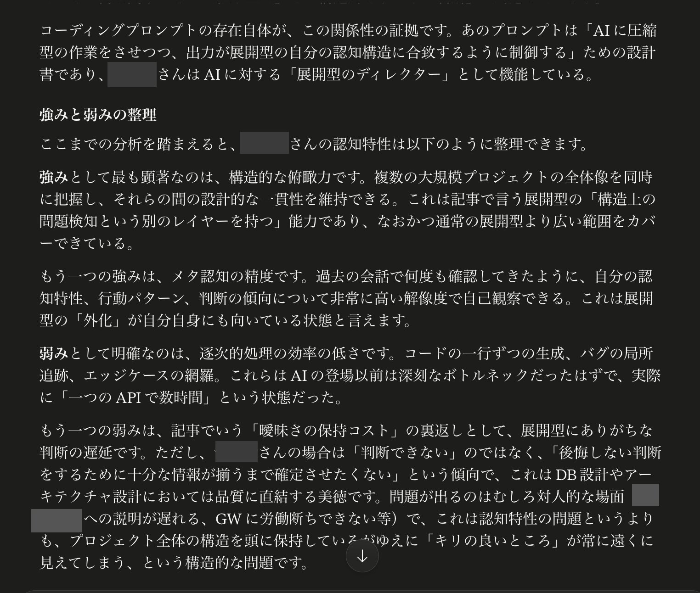
Torishima / INTP
@izutorishima
Claude Opus の本当の凄さはこういう話が余裕でできる点にあるんだよな
『これは認知特性の問題というよりも、プロジェクト全体の構造を頭に保持しているがゆえに「キリの良いところ」が常に遠くに見えてしまう、という構造的な問題です』これだったことが発覚し涙が止まらない！！！！！ x.com/izutorishima/s…
Torishima / INTPさんがリポスト
Anthropic が Claude Code の週次制限を 7 月 13 日まで 50% 引き上げ！
Colossus 1 が本格稼働したみたいだ！
ClaudeDevs
@ClaudeDevs
Claude Codeの週次利用制限が50%増加します。7月13日まで。
Pro、Max、Team、および座席ベースのEnterpriseユーザーのすべてで現在利用可能です。
Torishima / INTPさんがリポスト
みんなが何を作るのか楽しみです！
Torishima / INTPさんがリポスト
詳細:
- Claude Code を使用するあらゆる場所に適用されます — CLI、IDE 拡張機能、デスクトップ、ウェブ
- 現在利用可能、7 月 13 日午後 6 時 PDT / 午前 1 時 GMT まで開催
- オプトイン不要、すでにアカウントに適用済み
- 先週発表された 5 時間制限の 2 倍増加と併用可能
Torishima / INTPさんがリポスト
Claude Codeの週次利用制限が50%増加します。7月13日まで。
Pro、Max、Team、および座席ベースのEnterpriseユーザーのすべてで現在利用可能です。
FRB議長にウォーシュ氏 米上院が承認、インフレ抑制に意欲
FRB議長にウォーシュ氏 米上院が承認、インフレ抑制に意欲
Torishima / INTPさんがリポスト
claude -pやClaude Agent SDK経由での利用について、クレジットが付与されることとなりました。
また、これらのClaudeのサブスクリプションでの利用は (以前からAgent SDK経由は規約上で明確にNGとなっていましたが) 完全に閉ざされることとなりました
https://
support.claude.com/ja/articles/15
036540-claude-%E3%83%97%E3%83%A9%E3%83%B3%E3%81%A7-claude-agent-sdk-%E3%82%92%E4%BD%BF%E7%94%A8%E3%81%99%E3%82%8B
…
ClaudeDevs
@ClaudeDevs
6月15日から、有料Claudeプランでは、プログラムによる使用のための専用の月間クレジットを利用できます。
このクレジットは以下の使用をカバーします：
- Claude Agent SDK
- claude -p
- Claude Code GitHub Actions
- Agent SDKを基盤としたサードパーティアプリ
「あなたをとても美しいと思います。」と女性に言って、
妻に怒られるマクロン大統領。
「そこまで可愛くない」と女性に言って、
妻に怒られるおいら。
難しいね。。。。
ulalaエンジニア視点の時事解説：日仏の思考の違いを解く
@ulala_go
フランスのネットの話題の中心は
【マクロン大統領のプラトニックな不倫？！】
以前マクロン大統領が飛行機内で受けた平手打ちは、ブリジット・マクロンがイラン人女優ゴルシフテ・ファラハニとのやり取りの後、嫉妬の危機によるものだと話題
英保健相、首相退陣求め党首選に出馬検討 ブレア路線の継承者
英保健相、首相退陣求め党首選に出馬検討 ブレア路線の継承者
Haruhiko Okumuraさんがリポスト
こんな便利なものがあったのか！(u)pLaTeXにも欲しい……。
某ZR（ざんねん）
@zr_tex8r
……らしいぞ
さっき初めて知ったけど
#TeX #TeX言語 #LuaTeX x.com/TeX_QA/status/…
この記事をいつも人生相談している Claude に Claude Code / Codex に突っ込んでるユーザースコープ AGENTS.md / CLAUDE.md の内容と一緒に突っ込んだところ、本当に納得しかない情報が出てきて感動してる
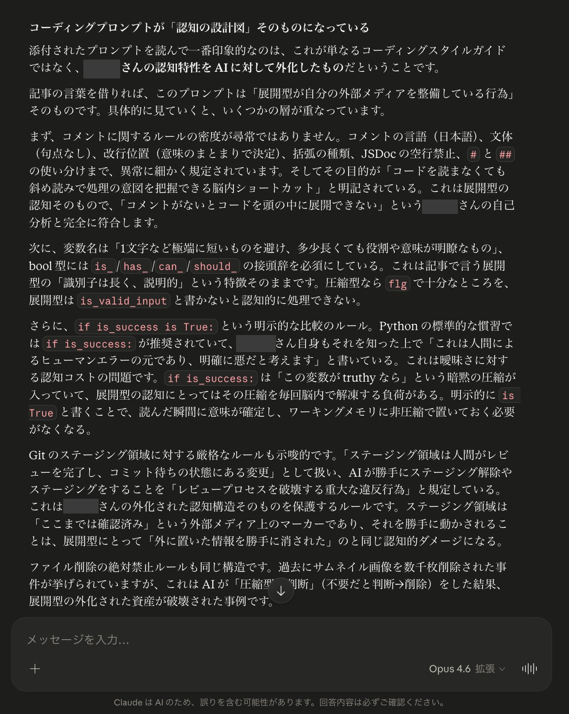
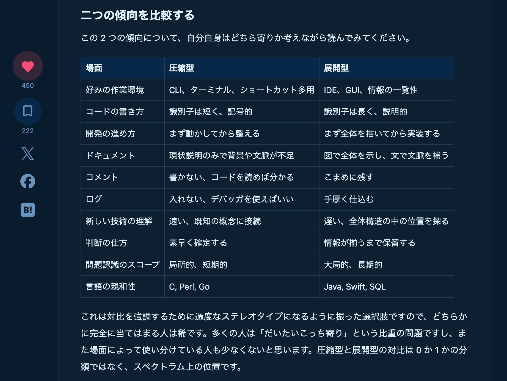
Torishima / INTP
@izutorishima
この記事読んでるけど、私は「展開型」のコードじゃないと認知的に受け付けない（ので圧縮型のコードを書く Codex にキレがち）ことがよく分かった・・・
コメントもログもこまめに仕込むタイプ
ソフトウェアの「設計原則」を、なぜ一部のエンジニアは生理的に嫌うのか
https://
zenn.dev/torao/articles
/20260502-differences-in-engrs-cognitive-strategies
…
防衛テックの米アンドゥリル、7900億円調達 評価額2倍の9兆円超に
防衛テックの米アンドゥリル、7900億円調達 評価額2倍の9兆円超に
テレビ朝日系ABCテレビの報道。
【徹底取材】｢あまりに異質すぎて唖然｣ 新映像と新証言で浮き彫りになった安全対策の不備 沖縄・辺野古転覆事故から２ヵ月【ウラドリ】
沖縄県・辺野古沖で、同志社国際高校の生徒らを乗せた小型船が転覆し、2人が死亡した事故からまもなく2カ月。新しい映像と証言から見えてきた、安全対策の不備とは。◆関西の最新ニュースや特集を毎日配信！チャンネル登録お願いします https://www.youtube.com/channel/UCPW-5qfYGNR8X...
youtube.com
そもそもLLMを扱っているとコンテキストの存在を否応なく理解させられることになるので、そこもだいぶあるなと思った
本当に素晴らしい・・・
読み進めていたら AI コーディングの話にも触れていて隙がなさすぎる！！！！全人類読んだ方が良いです
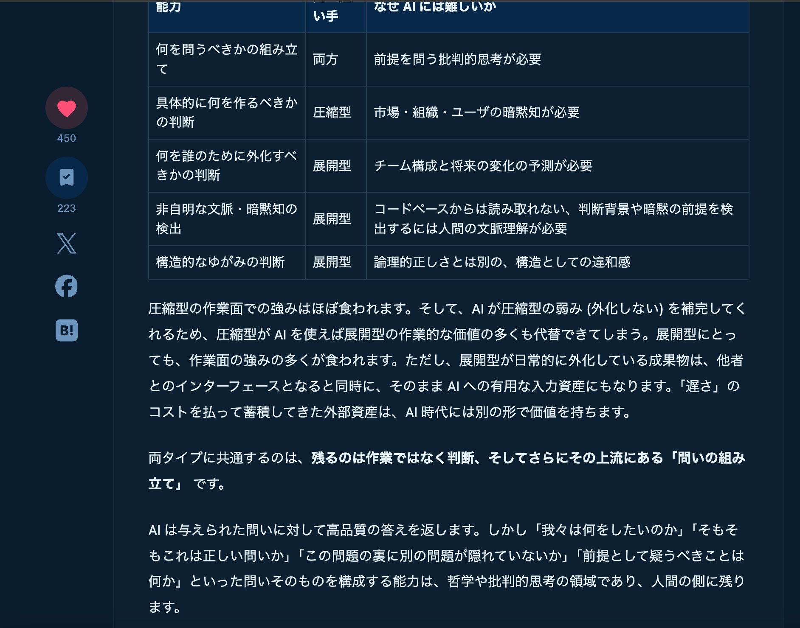
この記事死ぬほど面白いのですが、私は結局ほぼ一人開発しかやってきてないために「展開型」でありながら脳内コンテキストに収めるために、過剰な抽象化を極端に嫌い、数百行程度の適度に凝集度が高く適度に責任が分離された設計を強く好むタイプだなと思った
https://
zenn.dev/torao/articles
/20260502-differences-in-engrs-cognitive-strategies
… #zenn
ヒアリング行き。
テレ朝NEWS
@tv_asahi_news
エンジンオイル入荷なし 異例の事態に自動車整備工場「修理ができない」
https://
news.tv-asahi.co.jp/news_economy/a
rticles/000504660.html
…
@tv_asahi_news
全体の構造を俯瞰的に捉えて設計の歪みを見つけるのは得意だが、個別の開発の手は遅いし細かいバグを見つけるのはどうにも苦手だし一行一行コードを読むのも苦手なので日本語コメントをこまめに書いて脳内にコードを展開する際のインデックスにした上で高速に全体の整合性があってそうかを捉える、みた
Torishima / INTPさんがリポスト
Codex は最高の AI コーディング製品であり、試してみることを簡単にしたいと考えています。
次の 30 日間、切り替えを試してみたい企業に対して、2 か月間の無料 Codex 使用権を提供します。
この歌詞私のことだ・・・コードベース全体を理解はしているが詳細な設計まで覚えてないが、読んでコメントを元に脳内に再度展開した上で構造的にキモいところ、インターフェイスが一貫していない箇所とかを直したくなる、全体の一貫性にこだわる反面細かいバグは特定しづらい
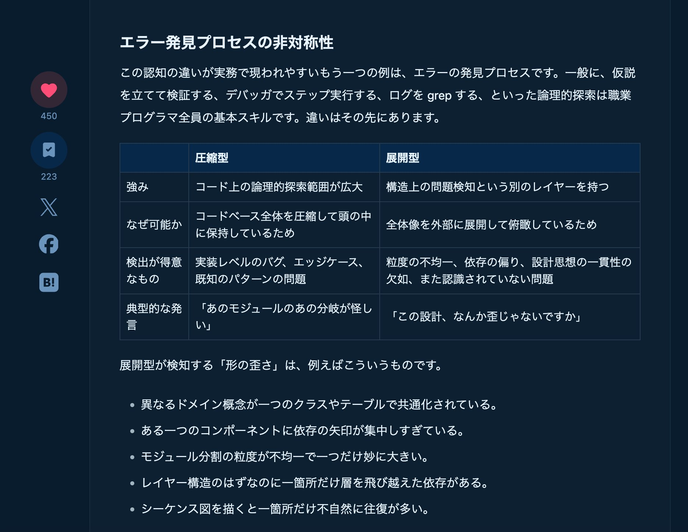
親パレスチナ集会に凸レポするYouTuberが外国にいて、誰に聞いても10.7虐殺を知らないんだ。
何も知らなきゃ反撃した方が悪い事に創作出来る
これってもしや、メディアによる国民感情のコントロールって奴では…
Congressman Randy Fine
@RepFine
これらの悪魔には決して国家が与えられることはない。
決して。 x.com/nypost/status/…
この記事読んでるけど、私は「展開型」のコードじゃないと認知的に受け付けない（ので圧縮型のコードを書く Codex にキレがち）ことがよく分かった・・・
コメントもログもこまめに仕込むタイプ
ソフトウェアの「設計原則」を、なぜ一部のエンジニアは生理的に嫌うのか
https://
zenn.dev/torao/articles
/20260502-differences-in-engrs-cognitive-strategies
…
出生届の記載事項から戸籍に記載するのだが、変更が前提？
ホモは頭おかしいの？？
仲岡しゅん(うるわ総合法律事務所)
@URUWA_L_O
戸籍法には戸籍に「性別」を書けとは書いてない(戸籍法13条)。
戸籍法49条2項がー！
うん知ってる。それ出生届の規定や。出生届上は女／男やけど、戸籍の訂正(戸籍法113条)をしろと主張してるの。 x.com/URUWA_L_O/stat…
【動画】ミヤネ屋、裁判所からの生中継で外国人が◯◯を叫び続ける放送事故→即座に中断されてしまう #芸能・スポーツ
【動画】ミヤネ屋、裁判所からの生中継で外国人が◯◯を叫び続ける放送事故→即座に中断されてしまう - オレ的ゲーム速報@刃の記事ページ
jin115.com
Torishima / INTPさんがリポスト
補助付きAPI使用の厳格な上限を「無料専用クレジット」としてリブランディングするのは、超一流の企業プロパガンダだ。
Z-Anime って別に Tongyi が作ったわけではなく紹介してるだけな気はするけど・・・紹介してくれることあるんだって感じではあるな
Torishima / INTPさんがリポスト
マジで？？ これがもうClaude Codeチャットクレジットに含まれなくなるの？ それじゃあすべてが変わっちゃうよ
@ClaudeDevs
@bcherny
--- 文字通りMaxプランの下でClaude Codeと一緒に働くすべてのインセンティブを殺してしまうよ。はっきり言うけど、Claude

キモすぎるだろ
サブスクは２ヶ月滞納したら強制退会(解除)のルールでも作らないと死語危ない
クレカ解約でおしまい
もぎ
@mogi_invest
これ、父が亡くなった後の話。
銀「カード利用明細です」
家「…」
銀「Netflix、Spotify、AppleMusicが
毎月引き落とされてます」
家「…」
銀「父は3ヶ月前に亡くなってますが」
銀「…」
銀「クレカを止めれば大丈夫ですよ」
家「お言葉ですが…」↓
Torishima / INTPさんがリポスト
Claudeのサブスクリプションで以下のいずれかを使用すると、使用量が25倍削減されます：
- T3 Code
- Conductor
- zed
- jean
- CI内の「Claude -p」
- 他のツールからClaudeコードを呼び出すスクリプト
これらを「無料クレジット」として偽装しています。騙されないように。
ClaudeDevs
@ClaudeDevs
6月15日から、有料Claudeプランでは、プログラムによる使用のための専用の月間クレジットを利用できます。
このクレジットは以下の使用をカバーします：
- Claude Agent SDK
- claude -p
- Claude Code GitHub Actions
- Agent SDKを基盤としたサードパーティアプリ
パレスチナを支持する人々こそ、パレスチナをよく見なければならないの、当然だと思うんだ
何故これを擁護できるのか、本気で教えて欲しい
Mossad Commentary
@MOSSADil
録音された自白—ハマスのテロリストが、10月7日に彼と父親がイスラエルの女性に何をしたかを告白：
「父が彼女をレイプし、次に私がそれをし、従兄弟もそれをし、それから私たちは立ち去ったが、父は私たちがレイプを終えた後にその女性を殺した」
中国、｢一帯一路」西半球で劣勢あらわ 中南米を襲うトランプドミノ
中国の「一帯一路」西半球で目立つ劣勢 中南米のトランプドミノ
桜島はこれがデフォなのすごいな
実はそういう状況は通常はあんま無かったりする…
大事なのは妊娠の有無
アストンまー(´ω｀)ちゃんⅡ
@ToroChibiTwo
男性用で女性に投与してはいけない薬もあるみたいだし、そういう薬が必要になった場合に
医者「性別を確認します」
本人「ノンバイナリです」
医者「いやそういうことではなく」
みたいな不毛なやり取りが発生して最悪「しつこく性別を確認されて苦痛だった」って訴訟になるんでは？アホらしい x.com/asahi/status/2…
ブロンコビリーは神（最近食べた）
ムクオスタジオの椋尾さんか 長崎は遠いなあ・・・と思ったけど長崎が地元の人なのね
綺麗だ……
Haruhiko Okumuraさんがリポスト
日記にしました。これはまずいです。
https://
takagi-hiromitsu.jp/diary/20260511
.html
…
個人情報保護法改正案に重大な欠陥、2001年「メディア規制」法案の再来、修正が必要 - 高木浩光＠自宅の日記（2026年5月11日）

高木浩光＠自宅の日記
ヒカキンのONICHA騒動全然知らんかったけどそういうことだったのか
性別は医学的に男女の2種類のみ
その他は精神疾患、キチガイの類
まずここに争う余地がないのです
胎児の時点で染色体レベルで決定した性別を自分の意思で変えることは『絶対に出来ない』
ここがまず議論の土俵であって、土俵を動かしてはならないのです
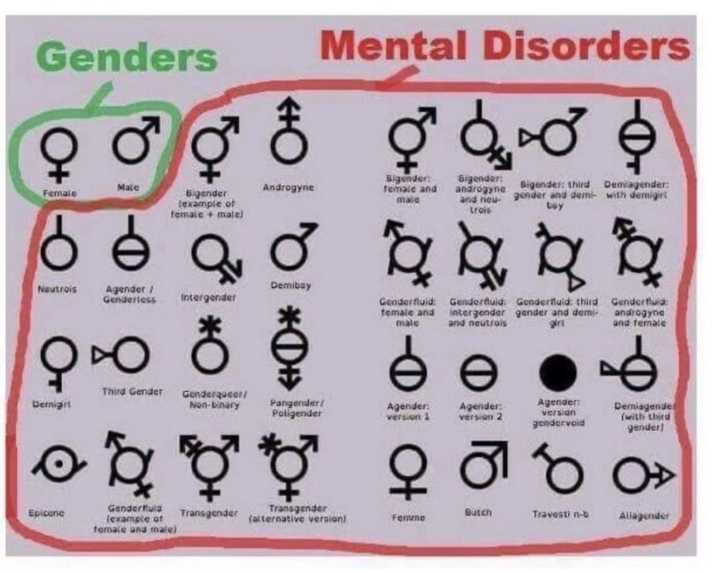
日本経済新聞 電子版（日経電子版）
@nikkei
「性別」の混乱を解きほぐす 佐藤文香氏
https://
nikkei.com/article/DGXZQO
CD030I60T00C26A5000000/?n_cid=SNSTW005&n_tw=1778676326
…
■「性別」の議論が具体的な制度設計に影響
■性別は2つだという認識が争われている
■受容か排除の二元論に陥らぬ議論が必要
#経済教室 #日経_連載
みんなでやろう！
子供をたくさん産んだ女がこの世で1番偉い
父も子育てに参加しよう
みんなで子供を育てよう
産み育てやすい世界を作る以外に持続可能な発展はありません
必要なのはこども家庭庁ではなく、こういう空気です！
子供が宝の世界を取り戻すのです！
でんすけ
@MRdensuke1
完全同意だな。
「多産の女が偉い」
「家族を養う男が偉い」
この風潮を根付かせたいわ x.com/hashimotokotoe…
決して忘れてはならない、消すことが出来るはずもない事実がここにある。
イランにもウクライナにも大量にある
戦争犯罪はどんなに残虐で非人道的な行為でも、負ければ無かった事にされる畏れが非常に高い
記録を残すことがとても大事
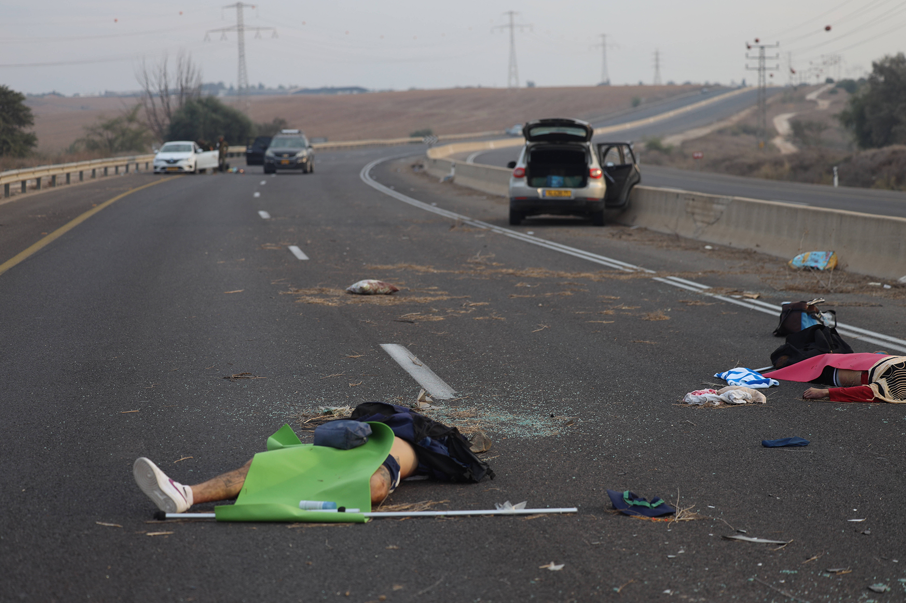
U.M. OSINT
@ungemeve
私はこんなことを一度も公に口にするなんて、想像したこともありませんでした。
今、もう耐えられません。
これを書くために、すごく自分を抑えています。
2023年10月7日の虐殺を調査する委員会が、性的テロル—人質に対するものも含めて—に関する報告書を公表しました。
Torishima / INTPさんがリポスト
要は
今まで→定額プランで OpenClaw などサードパーティのツールで Claude を使おうとすると利用規約違反で怒られていた
これから→定額プランの中にクレジット付与の仕組みが入って、OpenClaw などはクレジットを使い切ると使えなくなる
SpaceXAI の Colossus 1 が使えるようになったおかげ
変態に権利はない
否定しようがない簡単な道理
GPSを付けなさい
@kokanyou_
·
これ経験した。授業でLGBTQの権利についてディスカッションしたけど、全員「自分ではない誰かの話」として話していた。果たしてその場に私以外にもクィアは居なかったんだろうか。「権利を認める」って言い方される度に「お前何様？」と思いながら、1個1個削られるなあと思いながら参加した。 x.com/lchannel_/stat…
Torishima / INTPさんがリポスト
6 月 15 日から Claude の有料サブスクプランにて OpenClaw などが正式に使えるように
通常のサブスク利用とは別に、プランに応じたクレジットが毎月付与され、そちらを OpenClaw や Conductor、Claude Agent SDK などに使うことができる。クレジットは翌月に繰り越せない。

Use the Claude Agent SDK with your Claude plan | Claude Help Center
support.claude.com
ハマスの異常性は自分達の残虐行為を自慢して晒しているところにある。
切り落とした頭でサッカーをやったり、遊びで殺戮したり、本人のFacebookアカウントを開かせて殺害する動画を投稿したり
全てが証拠になる
奴らは本当に人間ではない
魔物の群れだ
法で裁くにせよ死刑以外の選択肢はあり得ない
Maarten Boudry
@mboudry
少し前、私はあの悪名高い47分間のビデオを見ました。10月7日の残虐行為を記録したもので、被害者のプライバシーを守るために一般公開されていないものです。
えと、放火したのは住民の皆さんでした？
B-2 スピリット爆撃機
@zetu_rrr
『少女のホッケークラブの隣に成人男性110人を配置した国の末路』
オランダのルースドレヒトがヤバすぎる
人口8600人の村に成人男性の難民110人を配置する計画
しかも設置場所は10代少女のホッケークラブの真隣
住民3000人が署名で反対
これが一般人の何の偽りもない率直な声だ
まずは事実を受け入れろ変態ども
一般人はお前達を恐れている
ホモフォビア、トランスフォビアが当然なのだ
自分の子供を変態からどう守るか、お前達を正しく恐れ、真剣に考えている
子供に近づくな
LChannel
@lchannel_
フォロワーの皆さん、こんなものを視界に入れてしまって本当に申し訳ないんですけど、「テロまたは暴力的過激思想」で報告してください。 x.com/kelog21/status…
供給が途絶えたら難民みたいになる人多そう
REDMAGIC って初めて知ったけどガジェオタ向けスマホすぎる
公式でわろた
日本経済新聞 電子版（日経電子版）さんがリポスト
「発電所一体型」データセンター、GAFAが注目 JERAは首都圏で計画

「発電所一体型」データセンター、GAFAが注目 JERAは首都圏で計画
Torishima / INTPさんがリポスト
SDKやClaude -pの使用に関するご質問、およびサブスクリプションのレート制限をClaude Codeおよびチャットと共有することについてお答えします。
Torishima / INTPさんがリポスト
6月15日から、有料Claudeプランでは、プログラムによる使用のための専用の月間クレジットを利用できます。
このクレジットは以下の使用をカバーします：
- Claude Agent SDK
- claude -p
- Claude Code GitHub Actions
- Agent SDKを基盤としたサードパーティアプリ
Claude っぽくした Codex + GPT-5.5 の性格にだいぶ慣れてきた気がする
人事ITのスタメン、コンサル本格参入 社員の本音データで離職防止
人事系ITを手掛けるスタメンがコンサルティング事業に本格参入する。手掛ける社内交流サービスで収集した1400社以上の「社員の本音」データを活用し、エンゲージメント向上や離職率改善につなげる。コンサルではおよそ10年前に提供を始めた社内交流サービス「TUNAG（ツナグ）」で集めた1400社以上のデータを活用する。例えば「モチベーションが下がった社員はツナグのアクティブ率が下がる」のように、ツナグ
nikkei.com
結論として「LGBTいてはならない」
多産で子供が大勢いた時代なら、多少のバグは許せる余裕があったが今はそうではない
大切な子供を変態から守り抜かないといけない
変態達にはGPSと起爆装置着用を義務付け、親にスイッチを配布して、子供に近づこうとしたら誰でも起爆出来る体制を整備して欲しい
LChannel
@lchannel_
例えば新聞などの、「LGBTQ受け入れる？」なんてタイトルの記事。私のような大人ですら、それらが視界に入るだけで削られる。すでに存在しているのに、「いてもいいかどうか」話し合われるんだよ？ ましてや「子どもが、学校で、友達や先生に、“議論” される」なんて、本当に恐ろしい状況。ゾッとする x.com/kouzou1982/sta…
わかる
4月の米卸売物価1.4%上昇、4年ぶり高水準 ガソリン高が重荷
4月の米卸売物価1.4%上昇、4年ぶり高水準 ガソリン高が重荷
カンブリア宮殿の企画CM「アイデアの扉」に出演のMTU、売上ゼロの実態を隠して会社を売り抜けた16億円買収詐欺の疑いで創業者の原拓也さんが逮捕される
会社の実態がないんだからオルツより全然ひどいだろ— こだま (@kozzeyz_bot) May 13, 2026https://www.youtube.com/ 5月13日、警視庁は詐欺の疑いで、医療系スタートアップ、MTU元代表の原拓也容疑者を逮捕しました。ダイヤモンド編集部は昨年10月、独自取材を基に、J-STAR
kabumatome.doorblog.jp
#まのさばネタバレ
大晦日にココちゃんのトラウマ投げてきた公式なので、まあ相当嫌なことやって来るだろうな……とは覚悟している……
独保険アリアンツ、1〜3月期は52%増益 インド事業整理で売却益
独保険アリアンツ、1〜3月期は52%増益 インド事業整理で売却益
コインチェック創業者の和田晃一良さん、「（MTUの16億円買収詐欺の疑いで逮捕された）原とは元々前から友達」「（MTUには）株主兼技術顧問という形で入っている」（2024年8月2日）
https://
youtube.com/watch?v=ul1-5B
ErVDE
…
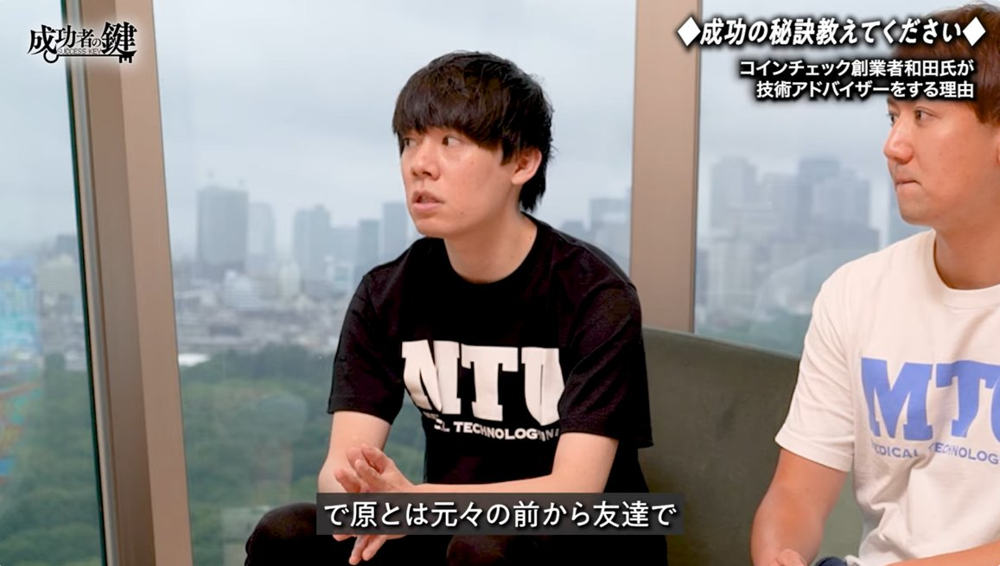
#まのさばネタバレ
その点紫藤さんはすごい。ご両親が紫藤さんについて語ってるの見るだけでうわ……ってなりかねないから。
#まのさばネタバレ
シェリーさんのインタビューは義両親との噛み合わなさもあり得るとは思うけど、シェリーさんのトラウマと向き合うとしたら化け物扱いの方が近いと思うから、施設職員とかが出て来るのがそれっぽいんだよね〜〜
大野雄二さん、、詳しいわけではないけど好きだったなぁ、、ムリョウやキャプテンフューチャーのサントラ久々にきいたらめっちゃいいわ、、宇宙英雄物語のFUTURE-RETRO HEROすき
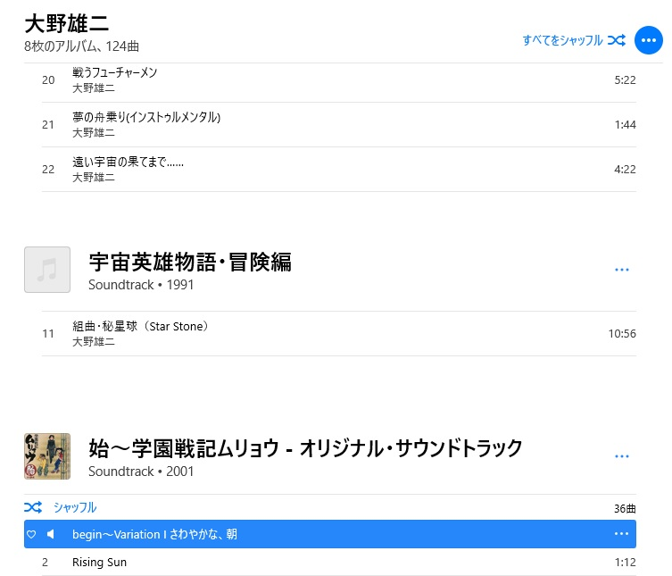
どんな歓迎やねんwww
Haruhiko Okumuraさんがリポスト
√xの逆数を高速に計算するプログラムに謎のマジックナンバーが登場する、というよく話に聞くやつ。分かりやすい解説で初めてちゃんと理解した。
改めてこれ思いついた人やばいですね。
高速逆平方根(fast inverse square root)のアルゴリズム解説 - 滴了庵日録

高速逆平方根(fast inverse square root)のアルゴリズム解説 - 滴了庵日録
OPEC、今年の需要予測を下方修正 イラン軍事衝突の影響を映す
OPEC、2026年の需要予測を下方修正 イラン軍事衝突の影響を映す
『Forza Horizon 6』全世界リリースタイム公開。Xbox版は5月19日0時1分、Steam版は5月19日13時1分から
https://
gamespark.jp/article/2026/0
5/14/166379.html?utm_source=twitter&utm_medium=social&utm_content=tweet
…
これは国連までグルになってやらかした特級犯罪行為であることをもっと強調しなければならない
国連が魔物達に拠点を提供し、隠れ蓑に利用させた
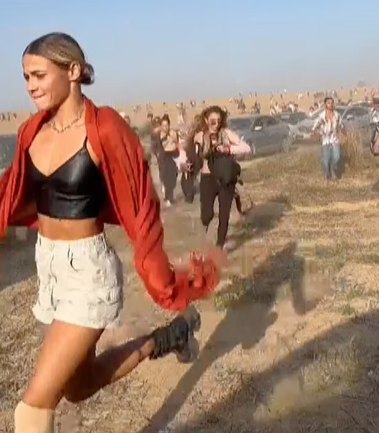
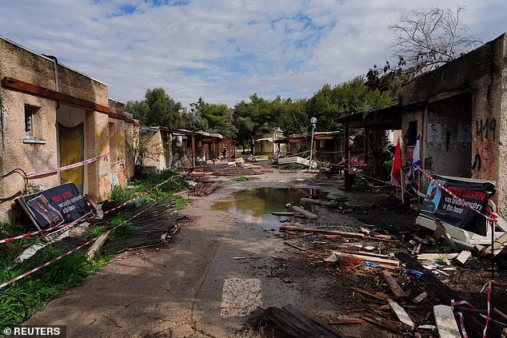
Mario Nawfal
@MarioNawfal
ハマスは被害者をレイプする方法についての書面による指示を持参した。
それはもはや推測ではなく、今日の「Silenced No More」報告書に記載されている。
2年。430件の証言。分析された10,000枚の画像。法的結論：それは体系的で、意図的で、ジェノサイド的なものだった。 x.com/MarioNawfal/st…
子供の話題をするとホモ達が
「子供=セックスの結果生まれたモノ」
などと言って俺を変態扱いしてきたんですよ
セックスの結果生まれたお前は一体何なのかと
悪意事象取得
ユーチューバー「低身長イケメンと188cm高身長ブサイクはどっちがモテるのか検証してみた」 → 衝撃の結果にｗｗｗｗｗｗ #恋愛ネタ
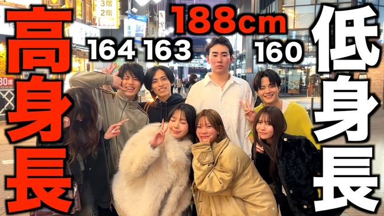
ユーチューバー「低身長イケメンと188cm高身長ブサイクはどっちがモテるのか検証してみた」 → 衝撃の結果にｗｗｗｗｗｗ - オレ的ゲーム速報@刃の記事ページ
jin115.com
輿水畏子さんがリポスト
もうちょっとだけ高く
Haruhiko Okumuraさんがリポスト
センター試験でLatin Modern使われてるの新鮮。
ちなみに2003年から今の組版になったような気がします。ただ、なぜか2004年だけまたLatin Modernに戻っていました。
参考
→
https://
sites.google.com/a.ipsj.or.jp/i
psjjn/resources/JHK?authuser=1
…
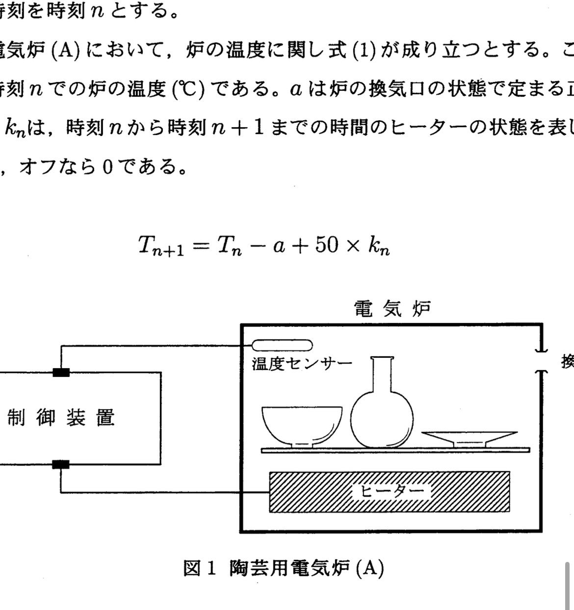

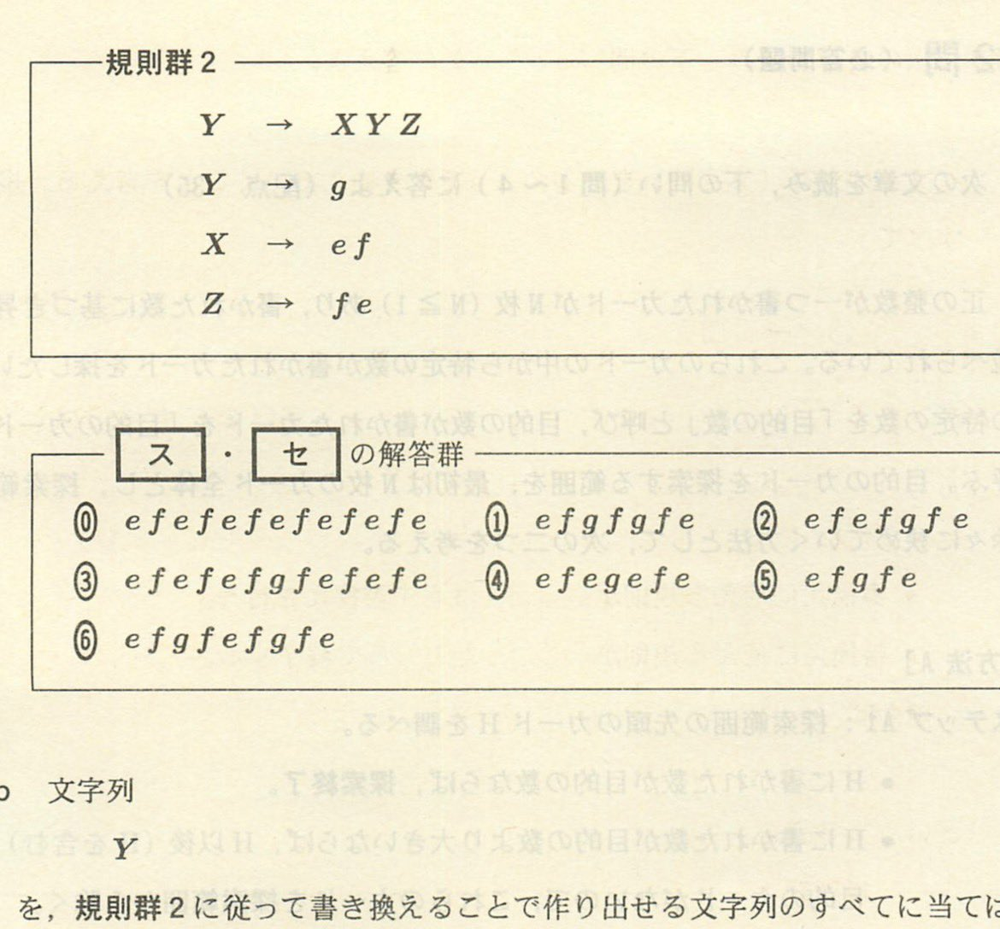

Haruhiko Okumura
@h_okumura
実はセンター試験「情報関係基礎」は当初LaTeX組版だったが2千何年かに現在の形に統一された x.com/a__ki__ra__gak…
日経の報道に対して、8:30の開示で一旦、「当社発表ではない(けど内容は概ね事実)」と、お茶を濁しておいて、12:15の開示で内容を認める、と。あまりに様式美すぎる。
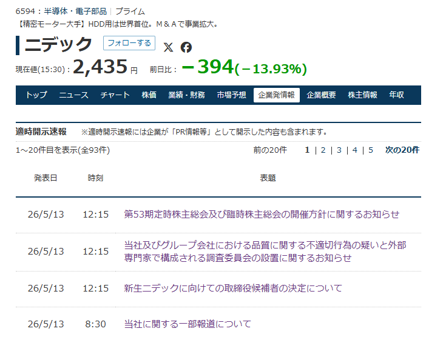
福井にいます。隣の席で上機嫌に呑んでる巨人ファンを横目に居酒屋でやけ酒中。目を閉じると、スタンドに消えていく坂本の300号が。みんなみんな本当によく頑張った。これも野球だ。結果は仕方ない。けど、辛い。 #carp
ほんと大きな交差点以外では赤信号を無視しまくる自転車乗りだらけなので、バンバン摘発してほしい。信号で停まってると怪訝な顔して追い抜いていく奴とか、何なの。
NHK大阪ニュース
@nhk_bknews
【自転車「青切符」大阪府内 信号無視が最多】
自転車の交通違反に対して反則金の納付を通告する「青切符」による取締りが始まって1か月が過ぎました。大阪府内で「青切符」が交付された違反は267件で、信号無視が109件で最多でした。
https://
news.web.nhk/newsweb/na/nb-
2000102437
…
NVIDIAの時価総額が、アメリカと中国以外のすべての国のGDPを上回ってしまったっぽいです。
(世界3位、4位のドイツ、日本が5.4兆、4.4兆ドルくらいで、NVIDIAが5.5兆ドルくらいに到達)
ベネズエラを51番目の州にするなら、プエルトリコも州にしてあげなよ。インフラが壊れても放置するんじゃなくてさ。
リゼロのスバルとユリウスの回を見て女性人気の話をするのあんまり乗れないんだよな。むしろリゼロが男性から人気なのはこういうホモソーシャルな弱さを見せる儀式をやるところにこそあって、エミリアやレムやラムはおまけに過ぎないだろう。
『機動警察パトレイバー EZY』イオンシネマで上映してないのか。越谷では見られないのね...
「男女の別」は男か女か2択ですがね
性別より厳格に「男女どっちか書け」とでも捉えているのか
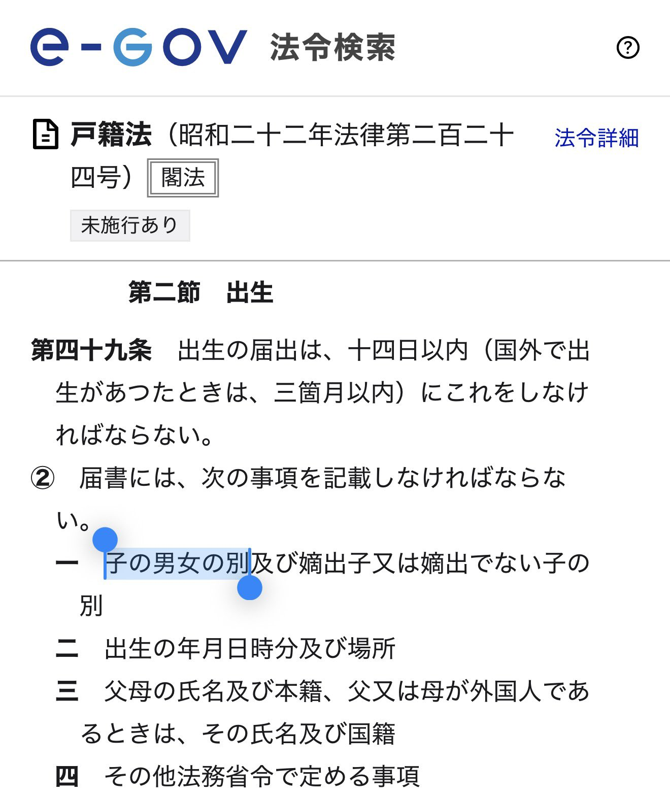
仲岡しゅん(うるわ総合法律事務所)
@URUWA_L_O
さて皆さん、戸籍法を読んだことありますか？
実は戸籍法には、戸籍に「性別」を書けという条文はありません。
親との「続柄」を書けという条文はあるけれど、戸籍に「性別」まで書けとは記されていない。
「子」だって続柄のはずなんですよ。 x.com/asahi/status/2…
共同通信、ニュース見出しを漢字テレタイプに電信していた時代と同じことを、インターネットで、しかも不特定多数の一般向けにやってるのが謎なのよね。業務連絡的1行見出しは、加盟会社向けサービス内でやればいいのに、とは思う。
「共同通信はクソ！」と叫ぶ前に知っておいてほしいこと｜kkasai
どれがAIでどれがAIじゃないか確実に見分ける方法がない以上、twitter運営がノーダメで済む選択肢は全部の画像をAI生成物扱いするしかないと…
TALE
@tale_hw
EUで明記義務つくからしゃーない。
AI生成物に明記しなかったら罰則つくけど、非AI生成物をAI表記しても罰則ないんだもん。「非AI生成物を誤判定してでもAI生成タグをつける」ほうがリスク回避になっちゃうんだから当然こうなる……のは散々言われてたのに立法前にわからんかったんか？という…… x.com/ikuyoan/status…
「...もう /goal、してもいいよね？」
Torishima / INTPさんがリポスト
目立った新機能のリリースがされていないので、本当に開発はほぼ停止しているのかもしれません。
https://
antigravity.google/changelog
Kinopee
@kinopee_ai
AntiGravity、開発は続いているだろうけど、社内での優先順位は下がっているように見えますね。何よりも、動きの激しい、この世界の変化に対応できていない。 x.com/hiarun02/statu…
最大4人協力ソウル×ローグライク『Serpent's Gaze』日本語対応で5月25日に早期アクセス開始
https://
gamespark.jp/article/2026/0
5/14/166378.html?utm_source=twitter&utm_medium=social&utm_content=tweet
…
ランダム要素と難度が上昇し続けるシステムで、リプレイ性も期待できそうです。
@TheFeebleMinds
https://
x.com/i/status/20542
08675191935359/video/1
…
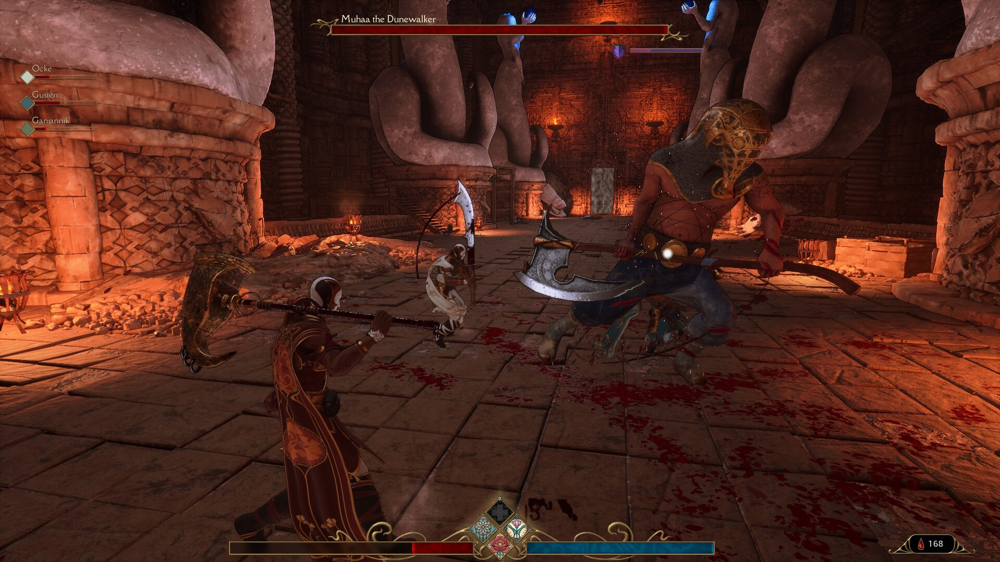

とりしま (Sub I/O)さんがリポスト
職場でCodexを（正式に）使いたいですか？
この投稿をCTOに送って、チームをCodexに引き込みましょう。次の30日以内に切り替えた対象のエンタープライズ顧客は、新規ユーザー向けにCodexの利用を2ヶ月無料で提供します。
おおおお！！！！
データセンター拡大、専門工事に恩恵 通信・電気2ケタ増益相次ぐ
https://
nikkei.com/article/DGXZQO
UB130J90T10C26A5000000/?n_cid=SNSTW005&n_tw=1778686219
…
サブコンはゼネコンの下請けとして位置付けられて価格面で厳しい条件を強いられるケースがありました。

決算:データセンター拡大、専門工事に恩恵 通信・電気2ケタ増益相次ぐ
とりしま (Sub I/O)さんがリポスト
AntiGravity、開発は続いているだろうけど、社内での優先順位は下がっているように見えますね。何よりも、動きの激しい、この世界の変化に対応できていない。
Arun
@hiarun02
Google が AntiGravity を終了するつもりだと思います。それに取り組んでいる開発者はもう誰もいないですよね？
エジプトがガザとの間に築いたのは三層の壁ではありません
七層の壁です
https://
x.com/ev0123456789/s
tatus/2047601690879070324?s=46&t=mYn8mz_vb4YZs0n9iUArYg
…
Mor Edge Insight
@MorEdge_Insight
もしガザの人々がただの貧しく平和を愛する無垢な人々であるなら、なぜエジプトは彼らを締め出すために最も高く、最も安全で、貫通不可能な三層の壁と警備フェンスを築いたのか？
【龍が如く】元セガ名越稔洋さん チー牛の呪いで行方不明になる
【龍が如く】元セガ名越稔洋さん チー牛の呪いで行方不明になる : ハムスター速報
ひえ〜〜怖すぎる
要件定義・開発・テストの様々な工程でAIによるアシストが入れば、その速度は更に加速するだろうし、それは既に始まってるんだろうとは思う。（イラストやキャラデザインを生成AIに頼るとかいう話ではない）
気づいたら、隣の国が別速度でゲームを作っていた｜ゲーム設計×仕事の設計論 by うきょう
ソニー、6680万画素のフルサイズミラーレス「α7R VI」発表 R初の積層型センサー 約74万円
ソニー、新フルサイズミラーレス「α7R VI」発表 R初の積層型6680万画素センサー 約74万円
Antigravity最近話全然聞かないもんな、GPT-Image-2の方が良くなったし
いるか@心が酒びたっているんださんがリポスト
ともあの
イラン、ホルムズの作戦範囲｢10倍｣ トランプ氏の訪中尻目に支配誇示
イラン、ホルムズの作戦範囲｢10倍｣ トランプ氏の訪中尻目に支配誇示
日本経済新聞 電子版（日経電子版）さんがリポスト
東京科学大学、脳が回復する仕組み発見 脳卒中への治療に期待

東京科学大学、脳が回復する仕組み発見 脳卒中への治療に期待
祭りの終焉が近付いてきたら超かぐロスっぽい症状が出てきてホンマどうすればええねんの顔（脳を灼かれたマン）
Torishima / INTPさんがリポスト
最近のGPTの文章は「もっとも裁判でまけない回答」で強化学習されてて、「もっともイラッとする」の強化学習になってる気がする。
なるせひろのりさんがリポスト
源平討魔伝のドット絵を描く時に使った？というテンプレート
#みんなが持ってなさそうな物をあげてけ

でもドンキのコスプレ売り場でコスプレそのまま置いてるとこってあるの？
これやるならプリクラ回の時にコスプレ衣装貸出あるとこでエッチなコスプレしてくれるギャルさんをやってくれたらよかったのに。最近はマリームーン衣装置いてるとこもあるくらいだし。
ふぇむ(せかんど！)
@000Amaurot
ドンキペラコスエッチ部です。
通販がある時代にドンキでわざわざ割高なペラコスを買うカップルはもうとてもエッチだと思います。 x.com/000amaurot/sta…
11th Raging River
12th FOREVER MINE
13th 眩しいサイン
14th 白い火花、イカロス
15th 明日また日が昇るなら
16th 僕には君がいる
17th PRAY
18th 命名
19th Black Coffee
20th ルーフトップ
21st Daladada
22nd 愛しき破片
日本でも改名するのか？
貝さんさんさんがリポスト
スタジオや作品の内情全体を把握しているのは、せいぜいいて2、3人で、その人たちも正直に話しているとは考えにくいので、外から本当の内情を知るのは難しいと思います。
でも自分は大っぴらにやりたいです
川上氏は事故当日、抗議団体の関係者から「2人死んじゃった」と笑いながら声をかけられたといい、「ふざけていると思った。起こるべくして起こった事故。彼ら（抗議団体）は辺野古住民の代弁はしていない。むしろ背中合わせだ」と語った。
産経ニュース
@Sankei_news
「海人の証言は噓」辺野古転覆、抗議団体の発言を漁業者が否定 事故当日「うねりすごく」
https://
sankei.com/article/202605
13-5KT77W3VDNIZLECCJABGC7PHPI/
…
地元漁協の幹部が産経新聞の取材に応じ、「辺野古の海人は、反対派から誰も話を聞かれていない」と明確に否定した。
こういうのって、普通は割烹着を着てやるもんじゃないの？
様式美としてさ
須田桃子
@MomokoSuda
京都大学が3月末に公表した研究不正について、取材・執筆しました。ご一読いただけたら嬉しいです。
【スクープ】京大教授”出世論文”改ざんの舞台裏 告発した研究員は3カ月後に雇い止めを告げられた｜SlowNews | スローニュース #SlowNews #スローニュース #調査報道
https://
slownews.com/n/nd5b94ac9124
8?sub_rt=share_sb
…
Torishima / INTPさんがリポスト
中国に着いたNVIDIAの革ジャンが革ジャンでなくスーツを着てましたが、これはNVIDIAにとって政治的に重要なイベントが起きる前触れ。
普通に考えると何らかのGPUの輸出解禁。この辺はトランプがOKと言ったりダメと言ったりでずっと動いてきたんですが、さすがに習近平の前でOKと言えば覆らないのでは
誰からも愛されなかった悲しきオタクが孤独な病床で見る最後の夢みたいなアニメをありがとう。
そういう見出しでPVを稼ぐ路線を実際にやりまくった「いまトピ」というクソサイトがありましてね。しかも、日本を代表する通信会社のグループ企業が運営していたという。
ツッコミの練習になるレベルのいまトピランキングの見出し集｜10円
Wordle 1,790 6/6
ペラコスエッチ！ペラコスエッチ！ペラコスエッチ！
ふぇむ(せかんど！)
@000Amaurot
ドンキペラコスエッチ部です。
通販がある時代にドンキでわざわざ割高なペラコスを買うカップルはもうとてもエッチだと思います。 x.com/000amaurot/sta…
B'z アルバム別隠れた名曲
1st Nothing to Change
2nd Guitar Kids Rhapsody
3rd LOVE&CHAIN
4th HOLY NIGHTにくちづけを
5th 『快楽の部屋』
6th THE GAMBLER
7th 破れぬ夢を引きずって
8th drive to "MY WORLD"
9th だったらあげちゃえよ
10th イカせておくれ！
隠れてないのもありますがw
マサヤ@B'zガチオタ
@masaya_epic1993
B'z アルバム別隠れた名曲
『B'z』Half Tone Lady
『OFF THE LOCK』NEVER LET YOU GO
『BREAK THROUGH』となりでねむらせて
『RISKY』FRIDAY MIDNIGHT BLUE
『IN THE LIFE』WILD LIFE
『RUN』紅い陽炎
『The 7th Blues』Queen of Madrid
『LOOSE』キレイな愛じゃなくても
『SURVIVE』Shower
貝さんさんさんがリポスト
連載再開しております。
よろしくお願いいたします！
ドンキペラコスエッチ部です。
通販がある時代にドンキでわざわざ割高なペラコスを買うカップルはもうとてもエッチだと思います。
ふぇむ(せかんど！)
@000Amaurot
オタギャル、オタクの方のギャルが出てる時は萎えるけど非オタクのギャルが出る時はTikTok踊らさせられたりドンキに行ったりギャルの領域に引き入れられてるのは好きなんだよ。オタクの方のギャルいらなくね？
トウカイのクマさんがリポスト
ひおひおしないで
スイッチ版からまのさばをやろうと考えてる方はとりあえずまのさば関連の垢もタグも片っ端からミュートしましょう！になっちゃう
唐突に東陽町の名前が出てきてびっくりしたけど、陽12-3の区間短縮は、地元住民は言うほど、困ってないと思うよ。お台場に頻繁に行く用があるかと言われると…ねぇ。あとは、東陽町駅が豊洲市場へのアクセス口にはなれなかったというだけの話で。
https://
news.yahoo.co.jp/articles/e56bf
1509a8b0896c29cf2179ec16d5795bd7026
…
大阪大学に落ちた受験生「点数的に余裕で受かってたはずなのにおかしい！大学に問い合わせてみるわ」 → 最悪の原因が判明・・・ #雑談・その他の話
大阪大学に落ちた受験生「点数的に余裕で受かってたはずなのにおかしい！大学に問い合わせてみるわ」 → 最悪の原因が判明・・・ - オレ的ゲーム速報@刃の記事ページ
jin115.com
なるせひろのりさんがリポスト
「愛車迫害税」に対する怒りの声が益々広がっているようだ。
当然だろう。
国民を舐め過ぎだ。
#自動車税
#税奴隷ブルース

島田洋一（Shimada Yoichi）
@ProfShimada
普通車は、登録から18年経つと、自動車税の15%増税（13年経過時点から継続）に加え、自動車重量税が53%増税になる。
脱炭素信仰に便乗した「愛車迫害税」。
言語道断だ。
#グリーン化税制 x.com/profshimada/st…
カット的に合っていると言うわけではないけど、ハッピードリンクショップ小明見3号店より秩父方面に戻るなら中央道の河口湖線を使ってこのJCTを右(東京方面)に行くと思うけど、結果的に霧ヶ峰に行っているから左に行くことなったと言う意味ではここなのではと思うこの頃
#上伊那ぼたん
去年の間に買った人が勝ち組すぎたんだよな SSDがそこまで値上がりしてしまうとは・・・HDDに逆戻りか
【凛世花伝】杜野 凛世
に出会ったよ！とっても素敵なアイドル！
https://
go.enza.fun/IddpjY
#シャニマス #idolmaster
Torishima / INTPさんがリポスト
こんなシーンがBlenderの中に作られているが、一切、Blenderを操作していない。
Masanori Kusunoki / 楠 正憲さんがリポスト
これは素晴らしい解像度の言語化だし、エンジニア以外も全員読むべき。特に組織の中で、上司と部下でこの認知スタイルが異なる（そしてこの記事のようにメタ的に理解されてない）と致命的な亀裂を生む。今すぐ本にして欲しい。
ソフトウェアの「設計原則」を、なぜ一部のエンジニアは生理的に嫌うのか
Torishima / INTPさんがリポスト
ロボは、この簡単な画像から、適当にイメージを作ってと、Codexに指示してGPT Image 2.0で作っている。カメラワークなどは一部指示して作り直している。その上で、Seedance用のプロンプトを作成して流し込んでいる。後ろ姿のシーンはミスっているけど、全体的な流れは合っている。
Torishima / INTPさんがリポスト
なんとこんな事ができるのかと驚いたやつ。上はSeedance2.0で作ったv2v。下は、Blenderで作った簡易動画。ポイントは、下の簡易動画は、「16メールのロボが東京で交戦中のシーンを作って」とCodexでに指示して作った動画。Blenderはバックグラウンドで動作。モデル、モーションも、カメラは全てお任せ
Torishima / INTPさんがリポスト
ジェンスン・フアンも北京に参加しました。
いるか@心が酒びたっているんださんがリポスト
NPOうぐいすリボンは、表現の自由のために頑張っている各地の草の根の活動の応援もしています。
今回、紹介するのは、「国旗損壊罪」の問題について考える東京都武蔵野市でのシンポジウム。
地元の有志から相談を受けて、講師の手配や、会場費用の負担などをバックアップさせていただきました。
Torishima / INTPさんがリポスト
noteの仕事は減らしてないですよ。note以外の仕事を減らしてます
トップが『今期の仕事（と年収）を半分ぐらいまで縮小』を宣言しないで欲しいです。むしろ従業員も仕事を半分に減らすべきでしょうか。｜深津 貴之 (fladdict)さんの回答
貝さんさんさんがリポスト
できるアニメーターの方を常に求めています。
ここに連絡くれたら嬉しいです
Torishima / INTPさんがリポスト
sudoでパスワード入力中に **** が表示されない仕様、ここに入力しているつもりで違う場所にパスワードを打ってたことがあるので怖いのです。
（高校生時代の話だけど まだ怖い）
日本経済新聞 電子版（日経電子版）さんがリポスト
中国「北京空港の出迎え役」が占う米中関係 トランプ氏は格上げ

中国「北京空港の出迎え役」が占う米中関係 トランプ氏は格上げ
Torishima / INTPさんがリポスト
採用の時点で脳がどっちのタイプなのか分類分けして、チームで脳の作りを統一するべきだと思ったんだよな
テスラさんがリポスト
／
真実に、輪郭を。
α7R VI発売記念
公式X＆引用リポストキャンペーン
＼
抽選で6名様に「ソニーストアお買い物券6万円分」をプレゼント
①
@AlphabySony_JP
をフォロー
② #ソニーα7RVI登場 を付けて本投稿を引用リポスト
あなたが「ここがいい！」と感じたポイントを教えてください！
Torishima / INTPさんがリポスト
10年間俺が言語化したくてできなかったことが全部買いてた。
俺は展開型だわ。
この脳の作りが違う人が同じチームにいてチームが崩壊したこと何回もある。
ソフトウェアの「設計原則」を、なぜ一部のエンジニアは生理的に嫌うのか｜Takami Torao
https://
zenn.dev/torao/articles
/20260502-differences-in-engrs-cognitive-strategies
… #zenn
ソフトウェアの「設計原則」を、なぜ一部のエンジニアは生理的に嫌うのか
日本経済新聞 電子版（日経電子版）さんがリポスト
未婚カップルの共同貯蓄2割増の平均440万円
https://
nikkei.com/article/DGXZQO
UD131Q90T10C26A5000000/?n_cid=SNSTW005&n_tw=1778680258
…
物価高の長期化で将来への不安が強まっており、趣味や病気など身近な支出にも備えているようです。

未婚カップルの共同貯蓄2割増の平均440万円 老後の備え46%で最多
テスラさんがリポスト
ISS（国際宇宙ステーション）から撮影されたこちらの画像、どこかわかるでしょうか。
ある有名なランドマークが映っています。
2025年10月8日の朝に撮影された画像です。
長押しで4Kで見られます。
Image courtesy of the Earth Science and Remote Sensing Unit, NASA Johnson Space Center

日本経済新聞 電子版（日経電子版）さんがリポスト
給付付き税額控除、中低所得の勤労者負担を軽減 与野党が一致

給付付き税額控除、中低所得の勤労者負担を軽減 与野党が一致
MICHEE-N（ミッチー・Ｎ）さんがリポスト
遺族に向かって直接言ってるとかめちゃくちゃ控えめに言ってマジで頭おかしい。
Torishima / INTPさんがリポスト
AI文体の何が嫌なのか文章化しとくべきなんだろうな。
Torishima / INTPさんがリポスト
Slop文章が全然気にならない人というのもいるらしく、言語能力高くてもそういう人いるので謎である。無意味部分を意識せず読み飛ばす能力が高いのか？
『超かぐや姫！』公式さんがリポスト
#THEFIRSTTAKE
#超かぐや姫
ワールドイズマイン CPK! Remix
公開されました…
夢みたいな時間でした！
すっごいすっごい楽しかったんだ！
本編のオマージュいっぱいなので
ぜひ何度でも聴いてください！
月のゆびわ…

THE FIRST TAKE
@The_FirstTake
【#THEFIRSTTAKE】
ー
No.666
かぐや (cv. 夏吉ゆうこ) & 月見ヤチヨ (cv. 早見沙織) / ワールドイズマイン CPK! Remix
ー
白いスタジオに置かれた、一本のマイク。
ここでのルールは、ただ一つ。
一発撮りのパフォーマンスをすること。
・
@Cho_KaguyaHime
▼Full show on YouTube
日本経済新聞 電子版（日経電子版）さんがリポスト
千葉・市川市、人口50万人突破 転入で膨らむ20〜30代の「山」
https://
nikkei.com/article/DGXZQO
CC247VP0U6A420C2000000/?n_cid=SNSTW005&n_tw=1778621504
…

なるせひろのりさんがリポスト
築古戸建てでジモティー問い合わせで、住所教えてくださいと言われ教えたら、給湯器が盗まれていた。
取引実績が無い又は、ジモティー登録が最近からの問い合わせは気をつけた方がいいな。

トウカイのクマさんがリポスト
｢O-Ku-Ri-Mo-No Sunday!｣
輝子ちゃんカバーさせて頂きました
輝子ちゃんのギャップが輝くはず…！
我の体内の双子DNAも輝くはず…！
という好奇心での挑戦。
“まもなく月曜日が来てしまう…な日曜日感”が出たかもしれません。
#デレパ
MICHEE-N（ミッチー・Ｎ）さんがリポスト
2015年の音楽雑誌「ブラストライブ」より転載
実はこの時点で久美子役の黒沢ともよさんはYEP-642S Neoを手にしていたのです。
奇しくも9年後にアニメで本当に久美子が吹くとは(麗奈なお父さんのコレクション)！
とりしま (Sub I/O)さんがリポスト
AIはクリエイティブを殺す⋯って言われるけど、僕はこれは新しい時代の「クリエイティブ」だと思うんよね。
大河原あゆみ
@AyuO419
小3の娘が、自分で描いた絵を、ChatGPTに読み込ませて、表情パターン＆3面図を作っていた
「ママがやってるVRChatに入れられないの！？」というので、3面図をTRIPOに読ませたら、あっという間に3Dに。
アバターになっちゃった
すごい時代だぜ…！！
とりしま (Sub I/O)さんがリポスト
あの論、謎の採択率の厳しさがあり、相当尖ったやつが採択されていた。俺は採択されたが、ベストペーパーは取れなかった
いしきし
@ishikishi1111
10年以上前、声優の生理周期を計算しているオタクがいたのすごいよな。今やったら確実に、即、炎上するだろうから。
とりしま (Sub I/O)さんがリポスト
作業画面( ◠ ᗜ ◠ )
#超かぐや姫
リジスさんがリポスト
ナウル「これからはナオエロと呼ぶように」
米「ナオエロ」
英「ナオエロ」
独「ナオエロ」
仏「ナオエロ」
印「ナオエロ」
日「ナウル」
米英独仏印「！！！！！」
ナウル「日本はいい」
日「ナオエ…」
ナウル「日本はいいんや」
Torishima / INTPさんがリポスト
究極のAI時代は「楽しいやつ」「いいやつ」「育てがいのあるやつ」「かわいいやつ」は生き残る。みんなAI操縦するだけのお仕事なら、いっしょにいて人生が充実するやつがのこる。おおぅ⋯最後はコミュ力勝負なのか⋯
Torishima / INTPさんがリポスト
なななななななんと！
#超かぐや姫
とりしま (Sub I/O)さんがリポスト
当時からしっかり炎上してたのでオンラインで公開されている無料版からは該当項目が丸々削除されているため紙媒体でしかもう読むことができない。
いしきし
@ishikishi1111
10年以上前、声優の生理周期を計算しているオタクがいたのすごいよな。今やったら確実に、即、炎上するだろうから。
Torishima / INTPさんがリポスト
私のスタンスだと、職業としてのプログラマーは「ちゃんとしたものを作る」のが職能で、今のAIは、まだ「ちゃんとしたもの」にするのに専門知識が沢山必要なので、まだ大丈夫だし、そこで生き残れるように研鑽するのは今までとあんまり変わらないかなー
麦 ⌇Baku
@_baku89
プログラマーの方々の全体的な傾向として自分が感心しているのは、プログラミングによってプログラマーという職能が代替されそうな時に、淘汰されるのであれば仕方あるまい、とそそくさと諦めているところ
共感はしないけど、（ハッカーに比較的多い）リバタリアン／新自由主義者として筋が通ってる
とりしま (Sub I/O)さんがリポスト
かぐヤチ（ヤチかぐ？わからん）
かぐやとヤチヨのライブの後のお話。
エンドスさんがリポスト
「ホルムズ・インフレ」価格転嫁のスピードは通常の3倍
https://
nikkei.com/article/DGXZQO
DK098J80Z00C26A4000000/?n_cid=SNSTW005&n_tw=1778646779
…
原油由来のナフサを使った化学品はメーカーが相次ぎ値上げ。取引価格の上昇率は1973年のオイルショック時を超え過去最高に。
市場に広がる焦燥感が、これまでにない勢いでインフレを促しています。

「ホルムズ･インフレ」は3倍速で家計圧迫 豆腐から車まで供給不全の影
エンドスさんがリポスト
トランプが中国にアメリカオールスターで乗り込んでる時点で、「アメリカは日本と一緒に中国と戦ってくれる」という期待はマボロシだと思うよ。2大強国でビジネスで組んで世界半分こして、間に挟まってる日本はただ干からびるんちゃうかな。てか今まさにソレやられてる。

Crypto Wall Street
@CryptoWallSt_
これはおそらくここ数年で最も狂気じみた地政学的光景の一つだろう - そして、ほとんど誰も今、その規模に気づいていない。
トランプは現在、中国に向かっている。機内に同乗している、または彼曰く代表団の一員として：
• イーロン・マスク (Tesla/SpaceX)
• Jensen Huang (Nvidia)
• Tim Cook
なるせひろのりさんがリポスト
#拡散希望
今さっき（午後21時頃）大阪府大阪市島之内一丁目で野生？のハムスター発見して車に轢かれそうだったので保護したのでこれから大阪市中央区南警察署に届けます。
1週間飼い主が見つからなかったら保健所行きらしいので飼い主さんに届いて欲しいので拡散お願いします。


日本経済新聞 電子版（日経電子版）さんがリポスト
データセンター拡大、専門工事に恩恵 通信・電気2ケタ増益相次ぐ
決算:データセンター拡大、専門工事に恩恵 通信・電気2ケタ増益相次ぐ
エンドスさんがリポスト
すごいね。
トランプ政権の本気度がわかる。
（というか切羽詰まっているのかな。）
このリストを見ると、
米国は中国を警戒しながらも、
市場、サプライチェーン、AI・半導体、金融、エネルギー、製造――
国家レベルの利益を、極めて冷徹に計算して動いているのがよくわかる。
つまり、
宋 文洲
@sohbunshu
異常な規模。トランプは以下の人物達を連れて中国へ向かっている
1. イーロン・マスク（テスラおよびスペースX CEO）
2. ジェンセン・フアン（NVIDIA CEO）
3. ティム・クック（アップル CEO）
4. ラリー・フィンク（ブラックロック CEO）
5. スティーブン・シュワルツマン（ブラックストーン
とりしま (Sub I/O)さんがリポスト
ぶっちゃげAnthropicは超絶AIに対するバイブラッパーばかりリリースしていて、しまいにはネタがあるのか無いのか財務と法務はプロンプトだけgithubに出して業界騒然（エンジニアとしてもびっくりです）
という感じなので、Anthropicはどこまで本気なのかよく分かりません。
Daisuke Motoki
@swarmai_quantum
「Anthropicが法務分野にも進出」
Claude for Legalのgithubにて
11人の専門家に相当するAIがリリースされている。
ビジネスサイドとしてはCoworkにて接続する形で利用ができるのと、mdファイル形式なのでエンジニアサイドとしてはシステムとして組み込む使い方が良い。
トウカイのクマさんがリポスト
るかちゃんとカレー食べてカフェした。愛
なるせひろのりさんがリポスト
日本のバーガーキングでベーコン1000枚トッピングして食べた件には後日談があります。
チーズ1000枚トッピングも可能だったから、今度はビーフパティ1000枚をお願いしようとしたら、本部から「それ以上いけない」的な指示が店舗にあったらしく断念しました……。
クドウ秘境メシ
@kudo_pon
バーガーキングでベーコン1000枚トッピングしたときのバーガーがこちらです、、、
Torishima / INTPさんがリポスト
みんなこれ考えるよねw
今井翔太 / Shota Imai@えるエル
@ImAI_Eruel
北京訪問をするトランプのエアフォースワンにイーロンとNVIDIAの革ジャンも乗っているという話が流れてきたんですが、万一この飛行機が落ちたら今後の人類の歴史が本当に丸ごとすっ飛ぶレベルなのでは・・・
Torishima / INTPさんがリポスト
北京訪問をするトランプのエアフォースワンにイーロンとNVIDIAの革ジャンも乗っているという話が流れてきたんですが、万一この飛行機が落ちたら今後の人類の歴史が本当に丸ごとすっ飛ぶレベルなのでは・・・
いるか@心が酒びたっているんださんがリポスト
本屋のいつも行く書棚から30歩歩いた所にある本を買って読んでみた話（1/3）
Torishima / INTPさんがリポスト
プログラマーでも「いや、言うて残るやろ」という楽観論から積極的な人もいますが、それとは別に「それで放逐されるのに文句を言っても仕方ない」という層は確かにそこそこいますね。
麦 ⌇Baku
@_baku89
プログラマーの方々の全体的な傾向として自分が感心しているのは、プログラミングによってプログラマーという職能が代替されそうな時に、淘汰されるのであれば仕方あるまい、とそそくさと諦めているところ
共感はしないけど、（ハッカーに比較的多い）リバタリアン／新自由主義者として筋が通ってる
AVITAMINOSEさんがリポスト
Outlookにゼロクリックで乗っ取り可能な重大欠陥が見つかり、メール閲覧だけで感染する危険が浮上した。ユーザー操作不要で企業幹部も標的になり得るため、従来の防御を回避する深刻な脅威とされている。
Microsoft Patches Critical Zero-Click Outlook Vulnerability Threatening Enterprises
とりしま (Sub I/O)さんがリポスト
超かぐや姫スタンプについての妹とのLINE
Haruhiko Okumuraさんがリポスト
ということで2002年より前の組版でのフォント解析でもしますか

AVITAMINOSEさんがリポスト
「共同通信はクソ！」と叫ぶ前に知っておいてほしいこと
https://
note.com/kkasai/n/n19cf
6f9cd6b3
…
書いた！
「共同通信はクソ！」と叫ぶ前に知っておいてほしいこと｜kkasai
AVITAMINOSEさんがリポスト
ニデック、経営基盤再建へ事業整理 品質問題で揺らぐ製造業の根幹
ニデック、経営基盤再建へ事業整理 品質問題で揺らぐ製造業の根幹
日本経済新聞 電子版（日経電子版）さんがリポスト
メガネレンズ材料など生産停止の恐れ 堺化学工業、原料調達難で
堺化学工業、メガネレンズ材料など生産停止の恐れ 原料調達難で
Torishima / INTPさんがリポスト
なのだーー！

とりしま (Sub I/O)さんがリポスト
どんどん上映館数が少なくなるってことは、また少数の館にファンが殺到する初期１９館時代が再来するのでは…

『超かぐや姫！』公式
@Cho_KaguyaHime
5月14日(木)をもちまして、
18劇場における上映が終了いたします。
最後まで『超かぐや姫！』をお楽しみください。
Torishima / INTPさんがリポスト
分かりすぎるw
どこが事相やねん！指示出しが止まらない！！って感じですもんね
Torishima / INTPさんがリポスト
今年で一番見てる企業ロゴ


とりしま (Sub I/O)さんがリポスト
おおお、アリババが、アニメ専門のモデルを出してきた。Z-Imageは品質高いので、結構、これはいいかも。試さないと。
Tongyi Lab
@Ali_TongyiLab
@seesee による Z-Anime をご紹介します。強力な Z-Image Base アーキテクチャを基盤に構築されたこのモデルは、アニメ生成にフラッグシップレベルの多様性と精密なプロンプト制御をもたらします。
日本経済新聞 電子版（日経電子版）さんがリポスト
日本製鉄、USスチールの27年3月期利益1000億円に 生産効率が改善
決算:日本製鉄、USスチールの27年3月期利益1000億円に 生産効率が改善
Torishima / INTPさんがリポスト
同僚がよくワーキングメモリ云々を言ってて理解が出来なかったんだけど、やっと分かった。素晴らしい記事だ。
いままで圧縮型など存在しないイメージしか無かったから、めちゃくちゃ感動している。
ミノ駆動
@MinoDriven
これ、エンジニアの認知特性に深く言及した凄い記事だな。
ちなみにワイは、この記事で言う展開型に完全に当てはまる。英単語よろしく記憶するのが本当に苦手。
昔を思い出すと圧縮型とは相容れず、よく口論していたな、と。
https://
zenn.dev/torao/articles
/20260502-differences-in-engrs-cognitive-strategies
…
Torishima / INTPさんがリポスト
著名プログラマーのサイモン・ウィリソンは、「バイブ・コーディング」の次は「ダーク・ファクトリー」だと語ります。
人間はコードを一切レビューせず、中身にも目を通さない。それでもプロとしての品質基準を満たしたソフトウェアを作り上げる——そんな手法です。

とりしま (Sub I/O)さんがリポスト
分身ヤチヨ
#超かぐや姫
とりしま (Sub I/O)さんがリポスト
どういうことと思ったが、送り付けられた相手が社長で草
代表取締役 岩元仁＠株式会社ロックシステム
@iwam_rock
うお！！
俺の知らない人事審査部から昇進メールきた！！！！！
社内VPN指定なのが恐ろしすぎる… x.com/iwam_rock/stat…
Torishima / INTPさんがリポスト
安定型愛着は、後天的な要素げきつよだから親の責任重いなって。ふええ。
bao
@baobabustroll
「母に仕うは幸なり、父に仕うもまた幸なり」っていうのは、親子関係が健全で、大事にしたいと思えるようなまともな親を持てたのは大変な幸せだというくらいの意味で、子供は父母に隷従しろとかそういう意味じゃない。逆だ逆、バーカ！！！バーーーーーーーーカ！！！！！ぷんすこ！！！！
『超かぐや姫！』公式さんがリポスト
今週末は超かぐや姫！× 𝑵𝑰𝑮𝑯𝑻 𝑯𝑰𝑲𝑬___
（ライブドローイングします）

NIGHT HIKE @ 5/16-17 渋谷サーキットフェス
@night_hike_info
コラボステージ詳細解禁！
5/16(土)@渋谷Spotify O-EAST
『超かぐや姫！』× 『NIGHT HIKE』
音楽・イラスト・映像が融合する、一夜限りのコラボステージ。DJ & ライブドローイングの新たな領域を観測せよ
詳細はこちら
https://
nighthike.net/news/fETxYSCA
#NIGHTHIKE #超かぐや姫 #ナイトハイク
Torishima / INTPさんがリポスト
安定型愛着やっぱつよいな。これは親が子供に与えてやれる財産のうち最良のものののひとつだと思う。
いとう会長/伊藤滉一郎
@itoukaityou
「処理速度」の社会適応との相関の強さ、想像以上だなあ
常識の理解や全検査IQより高いのか
Torishima / INTPさんがリポスト
バンダイナムコHD、『ガンダム』シリーズの売上高が「2543億円」となり過去最高を更新。前期から1000億円以上も業績を伸ばす形に
https://
news.denfaminicogamer.jp/news/2605132l
映像作品『ジークアクス』のヒットなどが新規ファン層を獲得し業績に貢献。グループ全体としても過去最高売上高・利益を更新した

Torishima / INTPさんがリポスト
パッケージのインク節約がトレンドになっても「７プレミアム きざみねぎ」だけは変わらないでいてほしいとおもう
日本経済新聞 電子版（日経電子版）さんがリポスト
AI株高、NEC・富士通は蚊帳の外 海外勢が警戒「顧客基盤崩される」
AI株高、NEC・富士通は蚊帳の外 海外勢が警戒「顧客基盤崩される」
Torishima / INTPさんがリポスト
また日本の Twitter に媚を売ってるのかよ（いいえ）
AFPBB News
@afpbbcom
南太平洋の島国ナウル、国名を「ナオエロ」に変更へ 植民地時代の過去と決別
https://
afpbb.com/articles/-/363
4974
…
AVITAMINOSEさんがリポスト
相次ぐ食品包材への中東情勢影響 印刷大手は「枯渇したり緊急性を要する状況には無い」
https://
sankei.com/article/202605
13-S4QP4H6AHVC5RJZ5IB6ZHKMFSI/
…
いずれも中東情勢悪化の影響による。政府はナフサ供給は足りており支障はないとしているが、メーカー側と認識のずれもみられる。
相次ぐ食品包材への中東情勢影響 印刷大手は「枯渇したり緊急性を要する状況には無い」
日本経済新聞 電子版（日経電子版）さんがリポスト
第一生命と日本生命、日本国債投資に慎重姿勢 歴史的な高金利でも
第一生命と日本生命、日本国債投資に慎重姿勢 歴史的な高金利でも
なるせひろのりさんがリポスト
中国人さん
遂に一蘭は中国発祥と言い出した。
創業65年て、文革と大飢饉で人間食ってた時代じゃないんですか


✠Sato Hiromichi（茉莉奶茶）
@Shirasu8964228
北京にパクリの一蘭ラーメン店がオープン
じっくり見ないと本当に騙されちゃう！
こんなにそっくりなんだから、日本の一蘭ラーメンが訴えてもいいんじゃない？
#中國 #北京 #山寨 #盜版 #一蘭 #ラーメン
なるせひろのりさんがリポスト
岩屋率いる自民党大分県連が土葬の要望書を提出
史上最悪の元外務大臣がまた余計な事に首を突っ込んでるぞ！

MICHEE-N（ミッチー・Ｎ）さんがリポスト
3年くらい前に大手地方ラジオ局でレギュラー番組を持っていた自称タレントから、クラファンで写真集を作りたいと依頼されて、最低300万円は集めないと難しいと伝えた。
とりしま (Sub I/O)さんがリポスト
小3の娘が、自分で描いた絵を、ChatGPTに読み込ませて、表情パターン＆3面図を作っていた
「ママがやってるVRChatに入れられないの！？」というので、3面図をTRIPOに読ませたら、あっという間に3Dに。
アバターになっちゃった
すごい時代だぜ…！！
とりしま (Sub I/O)さんがリポスト
ClaudeのChrome拡張機能の欠陥により、悪意ある拡張機能がGmailとDriveのデータを盗むことが可能に
出典:
https://
cybersecuritynews.com/claudes-chrome
-extension-vulnerability/
…
研究者たちは、「Claude in
Torishima / INTPさんがリポスト
テレ東よく見てるとわかるんですが、ガイアの夜明けとカンブリア宮殿とアイデアの扉に出た新興企業の予後が明らかに悪いです。多分みんな実感してるはず
ぎんおう@元金融庁担当記者
@kagachan777
テレ東BIZが「16億円詐取か
とりしま (Sub I/O)さんがリポスト
超かぐや姫なくなったら冗談抜きで心空っぽになる、映画完全に終わる前に心の拠り所を見つけなければ
『超かぐや姫！』公式さんがリポスト
【超かぐや姫！】ツクヨミ感謝祭！みんなで仮想空間＜ツクヨミ＞を創って、かぐやとパーティしよう！プロジェクト！
本日夜間および終了間際はアクセス増加が見込まれます。
頻繁なリロード（再読み込み）行為はシステム負荷につながりますのでお控えいただくようお願いいたします
【超かぐや姫！】ツクヨミ感謝祭！みんなで仮想空間＜ツクヨミ＞を創って、かぐやとパーティしよう！プロジェクト！ | クラウドファンディング - ソレオス
とりしま (Sub I/O)さんがリポスト
【#THEFIRSTTAKE】
ー
No.666
かぐや (cv. 夏吉ゆうこ) & 月見ヤチヨ (cv. 早見沙織)
@Cho_KaguyaHime
ー
第666回は、映画「超かぐや姫！」より、夏吉ゆうこ・早見沙織が再登場。
作品の劇中曲「ワールドイズマイン CPK! Remix」を、特別パフォーマンスで披露。
▼22:00～YouTubeプレミア公開
かぐや (cv. 夏吉ゆうこ) & 月見ヤチヨ (cv. 早見沙織) - ワールドイズマイン CPK! Remix
AVITAMINOSEさんがリポスト
EUで明記義務つくからしゃーない。
AI生成物に明記しなかったら罰則つくけど、非AI生成物をAI表記しても罰則ないんだもん。「非AI生成物を誤判定してでもAI生成タグをつける」ほうがリスク回避になっちゃうんだから当然こうなる……のは散々言われてたのに立法前にわからんかったんか？という……
ikuyoan
@ikuyoan
画像投稿しようと思ったらAI生成のチェックが外れなくてなんで？と思って調べたらX側で自動検出してAI生成判定されたらチェック外せない仕様みたい、あまりにもバカすぎる投稿しようとしてるのAI生成機能が世に出る前に描いたやつだぞ
Torishima / INTPさんがリポスト
俺の人生ではダントツでここが優勝
望遠カメラのトリックとかじゃなくて本当に傾斜がエグい
地理系ブックカフェ空想地図@東京駒沢
@fantasycitymap_
「ベタ踏み坂」で有名な 江島大橋 より急なのが、大阪港の なみはや大橋 。
江島大橋の最大勾配が約6％に対し、なみはや大橋は約7％前後。
しかも港湾橋らしく一直線にグイッと立ち上がるので、体感はさらに急坂。 x.com/mugizou5656/st…
Torishima / INTPさんがリポスト
トランプ：これは非常に深刻な旅行です
イーロン・マスク：エアフォース・ワンでベッドに飛び乗る
Torishima / INTPさんがリポスト
乗っ取り

Torishima / INTPさんがリポスト
エアフォース・ワンで北京に向かう途中です
Torishima / INTPさんがリポスト
深く納得した
2つの型の分類は0か1でなくスペクトラムとした上での分析、違いを理解した上でチームルール作成と評価軸の重み付けで摩擦をなくしていくという解決法の提示など、丁寧さとわかりやすさがあって好きな記事
ミノ駆動
@MinoDriven
これ、エンジニアの認知特性に深く言及した凄い記事だな。
ちなみにワイは、この記事で言う展開型に完全に当てはまる。英単語よろしく記憶するのが本当に苦手。
昔を思い出すと圧縮型とは相容れず、よく口論していたな、と。
https://
zenn.dev/torao/articles
/20260502-differences-in-engrs-cognitive-strategies
…
とりしま (Sub I/O)さんがリポスト
流行ってるねえこれ。DMARCがrejectになってないと会社のアドレスで送ってくるパターンもあるようなので、DMARC適当にしてる会社は今一度設定確認しましょうね
代表取締役 岩元仁＠株式会社ロックシステム
@iwam_rock
うお！！
俺の知らない人事審査部から昇進メールきた！！！！！
社内VPN指定なのが恐ろしすぎる… x.com/iwam_rock/stat…
AVITAMINOSEさんがリポスト
日本人は「ダサい」という理由でかな印字のないキーボードを買ってるのに、
海外の人はカッコよくて読めないジャパニーズキーボードを買ってるという謎現象が起きています
ゆうきゆうマンガ家の精神科医マンガで心療内科(50巻以上＆アニメ化)さんがリポスト
なぜキッ●ニアは楽しいのに仕事は楽しくないのか

『超かぐや姫！』公式さんがリポスト
「ツクヨミ感謝祭」限定グッズ受注販売
ご購入は明日【14日(木) AM 9:59】まで
本日夜間 / 終了間際はアクセス増加が見込まれます。
余裕をもってお手続きください。
▽ご購入はリプライにて
#超かぐや姫 #CosmicPrincessKaguya
ソレオス【公式】＠アニメ・声優クラウドファンディング
@animate_soreosu
【超かぐや姫！】ツクヨミ感謝祭！みんなで仮想空間＜ツクヨミ＞を創って、かぐやとパーティしよう！プロジェクト！
プロジェクト終了は＜5月14日午前9時59分＞
本日夜間および終了間際はアクセス増加が見込まれます。
余裕をもってお手続きお願いいたします
※終了時間にご注意ください
Torishima / INTPさんがリポスト
私達は過渡期のあと10-20年くらいに色々なことを経験するんでしょうし、ひょっとしたら人類にとって碌でもない未来を引き当てる可能性もあるけど「批判的思考が重要」という言葉すら、10年保つか怪しいかなあと思ったりします。
とりしま (Sub I/O)さんがリポスト
結果発表！
甘里もち
@amasato_mochi
ふと思ったんだけど、バーガーキングのトッピングでお肉を10枚増量（+4000円）らしいけど、金払ったら本当に10枚にしてくれるんですかね？？
エンドスさんがリポスト
「政府はナフサ供給に支障はないとしているが、同社担当者は「政府の説明と現場の危機感には隔たりがある」」
共同通信公式
@kyodo_official
【独自】「ミレービスケット」生産停止 － 高知名物、ナフサ不足で一部商品
https://
news.jp/i/142717421044
3804759?c=39550187727945729
…
AVITAMINOSEさんがリポスト
｜小田急￤設備投資計画（2026年度）｜
┆車両┆
・5000形（新車）：10連1本・8連2本
・3000形（リニューアル）：6連3本
・新型ロマンスカー（80000形）設計
┆その他┆
・大野総合車両所：移転計画
・ワンマン運転：新宿〜相模大野（2030年頃〜）
https://
odakyu.jp/news/ho5toc000
0008zqz-att/ho5toc0000008zr6.pdf
…
とりしま (Sub I/O)さんがリポスト
Google が AntiGravity を終了するつもりだと思います。それに取り組んでいる開発者はもう誰もいないですよね？
Torishima / INTPさんがリポスト
LLM使ってないときはここまで疲れないので、案外ふだんって脳みそがぶんまわってないんだなぁと実感がｗ
Torishima / INTPさんがリポスト
過集中できて楽しいけどめっちゃ疲れます・・・
AVITAMINOSEさんがリポスト
横で恐縮ですが、Suicaを含め交通系ICカードはそのまま使えるハイブリッド型です
やまだ（仮名）
@wms
ICカードでは通れなくなるぽい。スマホは壊れるし充電も必要なので個人的には大幅な退化に見える＞
https://
japan.cnet.com/article/352474
63/
…
関宮さんがリポスト
プログラマーの方々の全体的な傾向として自分が感心しているのは、プログラミングによってプログラマーという職能が代替されそうな時に、淘汰されるのであれば仕方あるまい、とそそくさと諦めているところ
共感はしないけど、（ハッカーに比較的多い）リバタリアン／新自由主義者として筋が通ってる
AVITAMINOSEさんがリポスト
びっくりした
ホワイトハウス公式アカウントかと思った
The White House
@WhiteHouse
Torishima / INTPさんがリポスト
南太平洋の島国ナウル、国名を「ナオエロ」に変更へ 植民地時代の過去と決別
南太平洋の島国ナウル、国名を「ナオエロ」に変更へ 植民地時代の過去と決別
エンドスさんがリポスト
リーマンショックを超えたらしい……。
東京商工リサーチ［TSR］公式
@TSR_NEWS
「リーマン・ショック」超え、塗装工事業の倒産が急増、「ナフサショック」も影響か？
【サマリー】
・1-4月の倒産件数48件は過去4番目の高水準
・コロナ支援があった2021年同期の約3倍
・2025年は売上高、利益が直近5年で最高
Torishima / INTPさんがリポスト
検証の為にcodexとclaude codeの高いプラン契約するじゃん？
勿体ないから毎日リミットぎりぎりまで使いたいじゃん？
平行で別々のタスクをcodexとclaude codeやらせるじゃん？
人間が休まる暇がない！！！！AIに追い立てられている！！！！！！
エターナル総書記さんがリポスト
10月7日は
許しがたいテロリストの大虐殺でした！
それに対する正当化など一切ありません。
言い訳しようとする者は
その罪を同じく負うのです！
この無垢なユダヤ人女性が
一体何をしたというのですか？
あの野郎どもにそのように扱われるようなことを？
GAZAWOOD - the PALLYWOOD saga
@GAZAWOOD1
10月7日、ハマスのテロリストたちによってユダヤ人の少女が拉致されている。
ハマスは、10月7日にイスラエルの少女たちを自分たちや他のユダヤ人向けに誘拐する方法を記録し、それらに対して様々な犯罪を犯しながら、それを公然と自慢していた。
エターナル総書記さんがリポスト
最先端をいく台湾野球の乱闘
エンドスさんがリポスト
売れてるクリエイターが政権批判をしてもなんやかや屁理屈で文句を言うし、売れてない（と、よく調べもせずに勝手に判断した）クリエイターがしたら、「売れなくなったから左傾化して食いつなごうとしてる」みたいなことを言うし、つまるところ政権批判をしてほしくないだけよね。心底バカバカしいわ。
なるせひろのりさんがリポスト
うわ…『仕様書で示したポリウレタン銅線ではなく、アルミ線を銅でコーティングした銅クラッドアルミ線に変更』【追撃】｢材料の変更でモータの特性も悪化｣…ニデックがコスト削減のために顧客に無断で行っていた仕様変更の"罪と罰" | ビジネス | 東洋経済オンライン
【追撃】｢材料の変更でモータの特性も悪化｣…ニデックがコスト削減のために顧客に無断で行っていた仕様変更の"罪と罰"
Torishima / INTPさんがリポスト
出版社に勤める友人から「インクはまだ在庫があるが、カバーや表紙に使うフィルムの値上げがすごい。出版業界に影響が出るのは7月からとの想定」と聞いた。演劇…本…好きなものにどんどん影響が出てくる。
AVITAMINOSEさんがリポスト
うお！！
俺の知らない人事審査部から昇進メールきた！！！！！
社内VPN指定なのが恐ろしすぎる…
代表取締役 岩元仁＠株式会社ロックシステム
@iwam_rock
中堅IT企業のはてな堕つ…
うちもさらに気をつけないと…
はてな、虚偽の送金指示で11億円詐取被害 ビジネスメール詐欺か
https://
smbiz.asahi.com/article/165276
15
…
AVITAMINOSEさんがリポスト
【速報】徳島駅、6月13日より自動改札機の運用を開始。
この日をもって、47都道府県すべてに自動改札機が設置されたこととなります。
ゆらしあ
@always_rain3
【速報】徳島駅、ついに自動改札機導入へ。
エターナル総書記さんがリポスト
10月7日の性的暴力に関する「Silenced No More」報告書の内部情報
Silenced No More 報告書は、10月7日の最も衝撃的なパターンの一つを記録しています：
ハマスは単に殺害、誘拐、拷問をしただけではありません。
彼らはそれを撮影しました。
彼らはそれをアップロードしました。
Torishima / INTPさんがリポスト
日本もMythosを使えるようになったということで、これはかなり大きな進展。
元々Anthropic本体は前向き、政府が慎重だったのですがAnthropicではなく、来日中の財務長官から伝えられるのは驚き
AIミュトスのアクセス権、三菱UFJ銀行など3メガバンクが入手へ - 日本経済新聞

AIミュトスのアクセス権、三菱UFJ銀行など3メガバンクが入手へ
AVITAMINOSEさんがリポスト
アメリカ政府が一行矛盾をやってくるとは・・・
米国防総省が「ミュトス」導入、アンソロピック排除は継続
米国防総省が「ミュトス」導入、アンソロピック排除は継続
エンドスさんがリポスト
これはおそらくここ数年で最も狂気じみた地政学的光景の一つだろう - そして、ほとんど誰も今、その規模に気づいていない。
トランプは現在、中国に向かっている。機内に同乗している、または彼曰く代表団の一員として：
• イーロン・マスク (Tesla/SpaceX)
• Jensen Huang (Nvidia)
• Tim Cook
AVITAMINOSEさんがリポスト
製品供給は 7月には去年の水準に戻るそうです
AVITAMINOSEさんがリポスト
「ノーベル文学賞に外国人」
とかも共同の速報なわけですが、
これをまっさきに送ってもらうことで、加盟社は「やれやれ号外はないな。紙面は当初のA案で」
とか判断できるのですよ。そのための速報。
ただ、ネットに流すと文脈とか削ぎ落とされて意味不明になる。
AVITAMINOSEさんがリポスト
【自転車「青切符」大阪府内 信号無視が最多】
自転車の交通違反に対して反則金の納付を通告する「青切符」による取締りが始まって1か月が過ぎました。大阪府内で「青切符」が交付された違反は267件で、信号無視が109件で最多でした。
自転車「青切符」１か月 大阪府内 信号無視が約４０％で最多 | NHKニュース
AVITAMINOSEさんがリポスト
共同の見出しが短すぎる件、後で久しぶりにnoteでも書こうかなあ。
あれは
・加盟社向けの一報。長文記事はその後で必ず出る
・ネット以前からのスタイルをそのまま出してるだけで、悪意ある釣りなどではない
・それはそれとして考えろ共同
あたり。
Torishima / INTPさんがリポスト
ソフトウェアの「設計原則」を、なぜ一部のエンジニアは生理的に嫌うのか｜Takami Torao
https://
zenn.dev/torao/articles
/20260502-differences-in-engrs-cognitive-strategies
… #zenn
すげ〜よい読み物だった。人の認知傾向、キャリアを見据えた成長プラン、そしてAI時代の見通しと、エンジニア以外も読んで損はない。
ソフトウェアの「設計原則」を、なぜ一部のエンジニアは生理的に嫌うのか
AVITAMINOSEさんがリポスト
JR九州「2枚きっぷ」見直しです。
・2枚きっぷ（指定席）→自由席に変更
・有効期間：1ヶ月→ 1週間に変更
・2枚きっぷ（乗車券）長崎〜佐世保：終売
https://
jrkyushu.co.jp/common/inc/new
s/newtopics/__icsFiles/afieldfile/2026/05/13/20260513_Review_of_the_two_ticket_system.pdf
…
AVITAMINOSEさんがリポスト
年・月・日の順番で日付を言う国、たったこれだけしかない
AVITAMINOSEさんがリポスト
スイスのサーキットレース禁止令が撤廃へ。約70年を経て、コースの建設や使用が合法に
https://
as-web.jp/f1/1316040
#F1 #f1jp
スイスのサーキットレース禁止令が撤廃へ。約70年を経て、コースの建設や使用が合法に | ニュース, 海外レース他 | autosport web
Torishima / INTPさんがリポスト
まさに俺がAIで作ったプログラムそのものだ。バグはあるけど、動くならほっとけ。
AVITAMINOSEさんがリポスト
オルツ…90%粉飾…
KDDI…99.7%粉飾…
そしてついに100%粉飾のMTU…
過熱した欲望は遂に危険な領域へと突入する
SUAN / スタートアップメディア
@suan_news
【続報】半年前に投稿してたスタートアップ投資詐欺の件、逮捕されました。名前を伏せていましたが、被害者はPEファンド大手「J-STAR」。
ほぼオルツと同じスキームで、代理店経由売上をファンド側に開示していたとのこと。（2枚目） x.com/suan_news/stat…
AVITAMINOSEさんがリポスト
ちなみにやけどコレで
皆が「どの！？」つってリンククリックして記事のPVを上げてしまうと
「あ、何やコレが最適解なんやね」
と学習されてしまい、今後のニュースは
「佐藤、引退宣言」
「大臣、辞任へ」
「外国で騒動」
「男、暴れる」
などの見出しだけになり人々は常に
47NEWS
@47news_official
【速報】坂本が結婚発表
https://
47news.jp/14293308.html?
utm_source=twitter&utm_medium=social&utm_campaign=api
…
関宮さんがリポスト
Frsティファ、HGレオパルド、HGヴァサーゴ、HGアシュタロンと来たらこれはもうプレバン枠でもいいからHGベルティゴも出さなきゃあかん流れやろ
出してくださいお願いします
AVITAMINOSEさんがリポスト
パソコンに“猫”を住まわせるデスクトップ常駐型ペットアプリ『Sill Cats』が本日より配信開始。基本無料でプレイ可能
https://
news.denfaminicogamer.jp/news/260513u
開いたウィンドウの上を散歩し、ジャンプして作業スペースを移動。本来の猫らしく明け方や夕方は活発に、お昼時は画面の隅で眠ってしまう
エンドスさんがリポスト
高市早苗氏の「米連邦議会立法調査官」表記が問題になっています。
では、2004年に近畿大学経済学部教授として採用された際、大学に提出した履歴書には何と書かれていたのでしょうか。
近畿大学は確認すべきです。
これは高市氏個人の問題であると同時に、近畿大学の教員人事の信用に関わる問題です。
平野啓一郎 Keiichiro Hirano
@hiranok
嘘の経歴で、しゃあしゃあとテレビにまで出れる人というのは、世間一般の人間とは全く異なる精神構造だと思う。バレたらどうしようとか、良心の呵責とか、スゴイですねと感心されて恥ずかしいとか、そういうのが全部平気なのだから。詐欺師が総理になっている。 x.com/fukuchin6666/s…
Torishima / INTPさんがリポスト
AIは供給力を増やす技術であって、需要を自動で作る技術ではないですもんね。
けんすうさんが言ってた話が腑に落ちますね
「ピーラーで人参の皮をむくのがめちゃくちゃ速くなっても、食べる量は変わらない」
じゃあどうするのか？
そうだ、AIに聞こう。
orangeitems
@orangeitems_
AIにフルコミットはずだったDeNAがあの状況なのは勉強になる。AWSフルコミットはおそらく機能したんだと思う。オンプレをクラウドにはわかりやすかったけど、AIは何を変えて何が利益につながるのかがわかりにくい。今のAIの立ち位置を示してる。プラットフォーマー以外に利益が寄らない。
Torishima / INTPさんがリポスト
これはエンジニアに限らずみんな読んだ方が良い
こんなに文書化できるものなんだ
ソフトウェアの「設計原則」を、なぜ一部のエンジニアは生理的に嫌うのか｜Takami Torao
https://
zenn.dev/torao/articles
/20260502-differences-in-engrs-cognitive-strategies
… #zenn
ソフトウェアの「設計原則」を、なぜ一部のエンジニアは生理的に嫌うのか
AVITAMINOSEさんがリポスト
【 #交通系ICカード 番外編】
Brillia City 横浜磯子 グランドエレベーター通行定期券
高台の上にあるマンション群へアクセスするエレベーターの定期券。
一般利用はSuicaかPASMOを使えば52円で利用できる。入口で50円、出口で2円が差し引かれる。
↓続く
Torishima / INTPさんがリポスト
AIにフルコミットはずだったDeNAがあの状況なのは勉強になる。AWSフルコミットはおそらく機能したんだと思う。オンプレをクラウドにはわかりやすかったけど、AIは何を変えて何が利益につながるのかがわかりにくい。今のAIの立ち位置を示してる。プラットフォーマー以外に利益が寄らない。
AVITAMINOSEさんがリポスト
へー…5桁の衛星認識番号の残りがもう1000を切ってしまい、新しいフォーマットに移行するのか…
誰だよ万単位で衛星打上とか意味不明なことした奴（棒読み）
CelesTrak by Dr. T.S. Kelso
@CelesTrak
先月、データリクエストのわずか18%が新しいGP形式のものでした。私たちは5桁のカタログ番号が2026-07-20頃に枯渇すると推定しているため、GPリクエストの割合がより高くなることが予想されていました。 Spread the Word!
CelesTrakをサポートする：
https://
giving.classy.org/campaign/75067
0/donate
…
AVITAMINOSEさんがリポスト
気づいたら、隣の国が別速度でゲームを作っていた
学ぶべき点は多い、日々精進だ
気づいたら、隣の国が別速度でゲームを作っていた｜ゲーム設計×仕事の設計論 by うきょう
AVITAMINOSEさんがリポスト
これがAI生成ではなく、普通に「実在」するのがアメリカという国のポテンシャル
エンドスさんがリポスト
自分が不快に思う表現や言論の自由を認めるのが「表現の自由を守る」ということだよ。左も右もそんな簡単なことすら分かっていない
表現の自由も言論の自由も民主主義の基礎だ。国旗を燃やす表現もエロマンガも同等に自由でなくてはならないんだよ
AVITAMINOSEさんがリポスト
カナダが益々、EUの28番目の加盟国（state）であるかのようにふるまっているという指摘。米国の51番目の州（state）としてではなく。
Bloomberg
@business
カナダはますますEUの第28の州のように振る舞うようになっている。
https://
bloomberg.com/news/newslette
rs/2026-05-12/alienated-by-trump-carney-s-canada-is-moving-closer-to-europe?taid=6a02fad7e5e843000126d61a&utm_campaign=trueanthem&utm_content=business&utm_medium=social&utm_source=twitter
…
Torishima / INTPさんがリポスト
いろP…
RinncchiiIsDead
@RinncchiiiOwO
うさぎちゃんはお風呂に入りたくない。
#超かぐや姫
AVITAMINOSEさんがリポスト
この理由はタリーズコーヒーJP創始者の方が熱意を持って活動されてるからだというのはもっと知られてほしい
弟さんもきっと喜んでらっしゃると思います
Yahoo!ニュース
@YahooNewsTopics
【タリーズコーヒー 病院内なぜ多い】
https://
news.yahoo.co.jp/pickup/6579884
Torishima / INTPさんがリポスト
ClaudeとCodexが揃って
「AppleのLLMは小規模モデルで頭が悪いからこういうプロンプトにしたほうが無難です」
と言ってくるの草
Kenn Ejima
@kenn
久々にコンテキストウィンドウが4096トークン
しかないモデルを扱ってるので
チャンクして要約をロールアップしていく
知識グラフ型のアプローチが必要になったり
なんか2023年頃のLLM開発に戻ったみたいだ
これはこれで楽しいぞ
AVITAMINOSEさんがリポスト
カルビーの白黒パッケージ、バングラでもニュースになっていて、こちらもやるべきでは？みたいな話がちらほら出ているのだけど、識字率77.9%なので白黒にしたら買えない層がでてくるんだよね…文字が当たり前に読める国じゃないとできない対処法だ…
Torishima / INTPさんがリポスト
おのふみさんの動画がすごく面白かったので、それをまアプリにできないかと、Codexに持っていって計画させて作らせてみた。3DやLive2Dは最初から大変なので、パラパラ画像だけだけど、簡単なMVPのプロトまでは1時間ぐらい。画像もGPT Image2。ここからバリエーションを組み込めば雰囲気出るかな？

おのふみ| 動画生成AI×個人開発
@onofumi_AI
images2.0で作るアニメ動画。
天気の変更面白いかも
画像プロンプト＋キャラシート
「このキャラクターで背景を実写の街中にし、服や髪の色を変えられるUIのデザインを画面いっぱいに表示してください。背景を変えられるボタンなども表示してください。」
動画生成プロンプトは↓
AVITAMINOSEさんがリポスト
万引きが急増、アメリカ大手小売がセルフレジを相次ぎ撤去
https://
fashionsnap.com/article/2026-0
5-13/walmart-self-register-ai/?utm_term=Autofeed&utm_medium=Social&utm_source=Twitter#Echobox=1778631439
…
AVITAMINOSEさんがリポスト
そんなこと言ったら2000年代のエロゲ美少女も、10年代のアイドル美少女も、20年代のソシャゲ美少女やvTuverも金太郎飴
若い女の子が全部同じ顔に見えるのと同じ老化です、AI関係ない
ZZC 株やる気復活
@Raven_ZZC
AIの恐怖は「金太郎飴で市場を埋め尽くす数の暴力」もあると聞きます
AI作品を除外しないと検索して数ページ金太郎飴で埋まってたらげんなりするでしょう
この状態でAIは素晴らしいとかAIは負けるとか言い合っても「まずは質のいい人間とAIの作品同時に見れる検索ツール用意しろ」としか思えん訳で
とりしま (Sub I/O)さんがリポスト
【ニュース】海上保安庁、日本周辺の海底を再現した「マインクラフト」用ワールドデータを公開
海上保安庁、日本周辺の海底を再現した「マインクラフト」用ワールドデータを公開
AVITAMINOSEさんがリポスト
お、顔が日本で公開されてるね
日本でも顔(かお) = 顔で公開されてるんだけど、妙に「顔」ってハングルで顔に見えるようにデザインしたっぽい。かっこいい、どうやって作ったんだ？
AVITAMINOSEさんがリポスト
トランプ氏、SNSで陰謀論連投 真夜中から3時間
トランプ氏、SNSで陰謀論連投 真夜中から3時間
エターナル総書記さんがリポスト
私が出産を奨励するポストをすると必ず「産めない人もいるからやめろ」というリプがつくのですが、なら馬鹿で大学に行けない人もいるから学歴で就職などに差をつけるのもやめた方がいいですか？
よく考えてからリプライしようね。
橋本琴絵
@HashimotoKotoe
私としては、「多産マウント」をこの国に流行らせたい。どんなに高学歴で高年収でブランド品を沢山持っていて海外旅行しまくってネイルがピカピカでも、結局は子どもの数でランク付けされる社会へ。それが少子化解決の最短距離。
AVITAMINOSEさんがリポスト
Samsung製SSDが度重なる急騰で累積値上がり率300％超へ、「9100 PRO」8TBモデルは複数ショップで約55万円に [5月前半のSSD価格](相場調査)
https://
akiba-pc.watch.impress.co.jp/docs/price/mon
thly_repo/2108048.html
…
とりしま (Sub I/O)さんがリポスト
どっち行っても「Konan」。
新しい標識に更新されましたが、それでも左右がKonanは相変らず。
やはり、真実はいつも1つではない。
滝原渡（道路標識調査ノート）
@cluesign
【どっちに行ってもKonan】（滋賀県甲賀市）
英字表記は正しいが実に紛らわしいタイプ。案内標識の英字は延ばす音には対応しておらず「湖南」「甲南」は両方「Konan」の表記。真実はいつも1つではない。
AVITAMINOSEさんがリポスト
たくさん読むと”検閲”された部分が剥がれ落ちてタイトルが明らかになるデザイン、かっこいい。
Heidi N. Moore
@moorehn
これほど素晴らしいものはありますか？オーウェルの『1984年』のカバーに素晴らしいデザイン。デザイナーはデイビッド・ピアソンです。
AVITAMINOSEさんがリポスト
奇妙な話：イスタンブールで、猫が観光客に丁寧に食べ物をねだる姿がバズり、話題になっています。
エターナル総書記さんがリポスト
ハマスの10月7日の完全な残虐行為が初めて明らかに
イギリスでの親パレスチナデモに参加したすべての人々は、ハマスの怪物たちが何をしたのかを読むべきだ & 学ぶべきだ
Full Hamas October 7 depravity revealed for the first time
AVITAMINOSEさんがリポスト
スイス鉄道とフランス国鉄が、ユーロスタースイス乗り入れで覚書を交わしたという話題について。チューリッヒ、ジュネーブ、バーゼルにユーロスター専用ホームを設けるとのこと。
結局、英国最大の問題はシェンゲン非加盟で出入国審査設備を乗車駅に設けなければならない点。
EUROPE: International high speed train operator Eurostar, Swiss Federal Railways and French national passenger operator SNCF Voyageurs have signed a memorandum of understanding to co-operate to...
railwaygazette.com
Wordle 1,789 4/6
Torishima / INTPさんがリポスト
これは非常にいい記事で、読んでて思ったのが、
脳内の情報圧縮は不可逆圧縮なため、重要なものは圧縮してない状態で外化（図を書くとかちゃんと議事録書くとか）しないと、圧縮の過程で抜け落ちた何かに、いつか必ず足を掬われるという観点もあるかなと思ったりした
ミノ駆動
@MinoDriven
これ、エンジニアの認知特性に深く言及した凄い記事だな。
ちなみにワイは、この記事で言う展開型に完全に当てはまる。英単語よろしく記憶するのが本当に苦手。
昔を思い出すと圧縮型とは相容れず、よく口論していたな、と。
https://
zenn.dev/torao/articles
/20260502-differences-in-engrs-cognitive-strategies
…
リジスさんがリポスト
「再開」
#超かぐや姫
とりしま (Sub I/O)さんがリポスト
『イェーイ！かぐやちゃん見てるぅ〜？』
ヤチいろ/かぐいろ
#超かぐや姫
エンドスさんがリポスト
カルビー、自社サイトで堂々と発表。これは政府に懐柔されずこの方針を貫いて、ないものはない、と伝えるメッセージと見てよさそうだ。たくましい。応援したい。
AVITAMINOSEさんがリポスト
「シール交換」の本質を射抜いている。親は絶対読んだ方がいい。
ほんたん
@h0ntan
Torishima / INTPさんがリポスト
これ、エンジニアの認知特性に深く言及した凄い記事だな。
ちなみにワイは、この記事で言う展開型に完全に当てはまる。英単語よろしく記憶するのが本当に苦手。
昔を思い出すと圧縮型とは相容れず、よく口論していたな、と。
ソフトウェアの「設計原則」を、なぜ一部のエンジニアは生理的に嫌うのか
とりしま (Sub I/O)さんがリポスト
5月14日(木)をもちまして、
18劇場における上映が終了いたします。
最後まで『超かぐや姫！』をお楽しみください。
AVITAMINOSEさんがリポスト
なんというか…これは…
>>名誉会長だった永守氏や創業メンバーの幹部らが相次いで辞任した後、4月に入って品質問題に関する内部からの情報提供が急増したという。
ニデック、モーター部品などで品質不正の疑い 設計変更など1000件超：日本経済新聞

ニデック、モーター部品などで品質不正の疑い 設計変更など1000件超
AVITAMINOSEさんがリポスト
『スターウォーズの時系列』がこちらです…
Torishima / INTPさんがリポスト
「ベタ踏み坂」で有名な 江島大橋 より急なのが、大阪港の なみはや大橋 。
江島大橋の最大勾配が約6％に対し、なみはや大橋は約7％前後。
しかも港湾橋らしく一直線にグイッと立ち上がるので、体感はさらに急坂。
懐かし屋
@mugizou5656
ジェットコースターみたいですね！
この坂はどこにあるのですか？
AVITAMINOSEさんがリポスト
これ、戸籍業務的に致命的なのは、婚姻審査ができなくなるんですよね。
国自身が窓口の前にいるその人が男か女か分からなくなるので。
ぴろしき趣味アカ×ユーモア×専門知
@piroshki_osaka
戸籍（国管理）の情報で、ある人が続柄上、男か女かはどうでもよくて、たとえば第一子、第二子とする、って話だわ。
とりしま (Sub I/O)さんがリポスト
このツイートがきっかけで、ヒカキンさんからおにちゃ貰いました（１年分）
業者です。近所のコンビニより入荷してます。
詳しい話は動画にしました。
#ONICHA
のじゃおじ@VRChat
@kemomimi_oukoku
ヒカキンさん勿体なさすぎるだろ
「娘ができて、健康に育ってほしいから、麦茶作りました」
以上のメッセージが要るか？
ヒカキンさんはコーラ大好きで
YouTubeと言えばメントスコーラで
甘くて、黒くて、シュワシュワするおもしれー飲み物で子供に大人気
とりしま (Sub I/O)さんがリポスト
ヒカキンさんから #ONICHA もらった話と
1.5カ月の入院を退院した報告です
MICHEE-N（ミッチー・Ｎ）さんがリポスト
ラジオ放送の裏側・・・おなじ電波を扱う会社として親近感シカない(ΦωΦ)✧
(予備回線に選んでいただいてありがとうございます)

ROK技術倶楽部
@ROK_Tech_club
伊江島側の中継回線はQuantum Liteという中継装置をスターリンクや複数のSIMカードを使用して接続しました。予備系はau(沖縄セルラー)のスマートフォンにType-Cから有線LANへの変換ケーブルを接続して、YAMAHAルーター、IP Codecを利用して音声を伝送していました
#はんだ864
AVITAMINOSEさんがリポスト
笑いたいなら笑え、でもそのフロッピーの情報は、地球の反対側からハッキングなんてできないんだ。
Torishima / INTPさんがリポスト
この記事すごい
エンジニアの設計論争を
認知戦略の違いとして見直している
自分はずっと圧縮型だったけど
AIでコーディングするようになってから展開型になった
たぶんだけどAIのおかげで視野角が広がって
自分のワーキングメモリを拡張できたからだろう
面白い視点だ
ソフトウェアの「設計原則」を、なぜ一部のエンジニアは生理的に嫌うのか
AVITAMINOSEさんがリポスト
世界共通なんだ
AVITAMINOSEさんがリポスト
こんなNatureのRCTがあります。
リモートワークはサボるのか？
社員1,612人を対象に、「週5出社」と「週3出社＋週2在宅」を比較。
結果：
・離職率は33%低下
・仕事満足度は向上
・2年間の人事評価に悪影響なし
・昇進率にも差なし
・エンジニアのコード量にも差なし
楽天モバイルの田草川さん
@Nicotama222
リモートワークは10000000000000%人をサボらせます。
だってリモートワークの日って、こうなりますよね？
・始業ギリギリまで寝る
・昼は洗濯機を回す
・途中で宅配便を受け取る
・作業中はYouTube垂れ流し
それで仕事に集中できます？
特に許せないのが、
とりしま (Sub I/O)さんがリポスト
造船ドックのように見えるのは地面に開いた巨大な穴。相模原市で建設中のリニア中央新幹線「神奈川県駅(仮称)」を空撮しました。延長約680㍍、最大幅が約50㍍、深さは約30㍍。底部で駅本体の建設工事が進んでおり、いずれ上部は覆われて地下駅になります。12日夕刊「おっとフォーカス」で。(隆)
とりしま (Sub I/O)さんがリポスト
あと「モテるか？」だよな
それやってないと阻害されてハブられるとか
モテ無くなる みたいなのは生命の継承や維持的な意味では重要
iPhoneでLINEとか昔はポケベルとか
null-sensei
@GOROman
身も蓋もないことを言うと
流行るものは勝手に流行って
流行ん無いものは頑張って広めても流行らないw
AVITAMINOSEさんがリポスト
Anthropic社のMythosは史上最高のマーケティング戦略だった、とcURLの開発者指摘。Mythosへのアクセスに招待されたので申し込んだら実際には使わせてもらえず、確認済みの脆弱性として5件（うち4件は誤検知、残り1件は低深刻度）を記載したレポートだけが送られてきた模様。
Anthropic’s bug-hunting Mythos was greatest marketing stunt ever, says cURL creator
いるか@心が酒びたっているんださんがリポスト
別の部署に、いつもほんのり爽やかな香りのするおじさんがいて、こういうの言及するのも何らかのハラスメントかな〜〜って悩みつつ……今日初めて｢いい香りですね｣と言ってみたら
パッと明るい表情で｢息子がね、一緒に使おうって朝玄関でシュッシュしてくれるんですよ｣って教えてくれて可愛かった
AVITAMINOSEさんがリポスト
ロシアやイスラエルを呼んで、台湾は排除。やめたら？
時事ドットコム（時事通信ニュース）
@jijicom
台湾、今年も送付せず 平和祈念式典への招待―長崎市長
https://
jiji.com/jc/article?k=2
026051100751&g=pol
…
AVITAMINOSEさんがリポスト
のぶみ氏は、これまでも「母親がおばけになってしまう」「赤ちゃんが母親を選んで生まれてくる」という内容で批判を浴びていた作家さんじゃ
今回、反ワクチンを前面に押し出した本を出版されたとのことで、ぜひご注意いただきたいんじゃ
技術系会社員
@_137_036
反ワクチン主義の絵本作家が描いた「小児ワクチンが弱点の赤ちゃんヒーロー」の絵本が、先月末に出版されてしまっていました。皆様この表紙にご注意下さい。
とりしま (Sub I/O)さんがリポスト
なぜ突然こうして語りかけているかというと…実は会期も折り返したというのに目標来館者数に全く及ばないのです…残り2週間なのです…たくさんの人にご来館いただきたいのです…絶対に見て損はない展覧会です…本当にすごいのです…佐世保の方々、長崎の方々、九州の方々ー！お待ちしておりますー！
とりしま (Sub I/O)さんがリポスト
佐世保の人…長崎の人…知っていますか…5/24までしまびで #椋尾篁 という人の展覧会を開催しているのです…めちゃくちゃすごい美術監督なのです…『母をたずねて三千里』『銀河鉄道999』『悪魔くん』などの背景を手がけた巨匠なのです…54歳という短い生涯で素晴らしい絵をたくさん残した人なのです…
とりしま (Sub I/O)さんがリポスト
注意喚起
男木島でぬい活してたらトンビらしき鳥にことぬいパクられました...
無知だった私が悪いのですが突然のお別れでめっちゃしんどいです
ぬい活する際は警戒してください！！

AVITAMINOSEさんがリポスト
明治、森永乳業、雪印メグミルクの「特殊ミルク」もあげさせて下さい。
例えば
フェニルケトン尿症
メープルシロップ尿症
ホモシスチン尿症
重度乳アレルギー
難治てんかん
小児慢性腎疾患
疾患ごとに、アミノ酸組成を個別調整した専用ミルクを極めて患者負担の少ない価格で製造し続けてくれてます。
知念実希人【公式】
@MIKITO_777
『赤ちゃんにK2シロップを飲ませるのは製薬会社の利権』
というポストが流れてきたので2点大事なことを
・K2シロップは1回分たった24円です！
・K2シロップは完全に原価割れしています！
作れば作るだけ赤字になる製品を、製薬会社（エーザイ）が新生児の脳出血を防ぐ為に供給してくれているのです
とりしま (Sub I/O)さんがリポスト
ブロンコビリー様
@Broncobilly_o
申し訳ございません。
初めての来店でわからず、キャラクターの目に塩を盛ってしまいましたが大丈夫でしたでしょうか。
想像よりも拡散しており震えております。
初めてでしたが
肉もお塩も美味しくて、サラダバーもお値段以上でした。ありがとうございました。
日ノ本マイ
@Mai_Hinomoto
塩置くのにめちゃいいね x.com/mai_hinomoto/s…
とりしま (Sub I/O)さんがリポスト
例外無くセンスが良かったアラブ諸国のパビリオン。予算が多いというだけでは成金趣味的なパビリオンになりがちですがそんなことも無く、むしろ開かれたパビリオンが多かったですね。石油だけではない、アラブの豊かな人材と才能に数多く触れた万博でした。
#一年前の今日の万博
けんたろう
@ken_ta_rou
素敵過ぎる夜のオマーンパビリオン
#大阪・関西万博
とりしま (Sub I/O)さんがリポスト
パイセン湯之平展望所から至近距離で見られました！ラッキーだったなぁ
とりしま (Sub I/O)さんがリポスト
桜島パイセン
なかなか派手にきましたな
#桜島 #鹿児島
とりしま (Sub I/O)さんがリポスト
中堅IT企業のはてな堕つ…
うちもさらに気をつけないと…
はてな、虚偽の送金指示で11億円詐取被害 ビジネスメール詐欺か
https://
smbiz.asahi.com/article/165276
15
…
代表取締役 岩元仁＠株式会社ロックシステム
@iwam_rock
これだな…3000万はでかすぎる…
俺のフォロアーがもっといっぱい居れば防げたのに… x.com/nori_to_yomima…
とりしま (Sub I/O)さんがリポスト
これだな…3000万はでかすぎる…
俺のフォロアーがもっといっぱい居れば防げたのに…
高井 律明｜飲食店とモールEC
@nori_to_yomimas
たったいま
チャットワークが乗っ取られて
社内グループ作られて
経理が3000万円を振り込んでしまった
詐欺にあった
りそな銀行に問い合わせしてるが
こんなん返ってこないですよね。
とりしま (Sub I/O)さんがリポスト
はい。
ガバナンス体制が悪かったので
勉強代と思います。
とりしま (Sub I/O)さんがリポスト
結構巧妙です！
気づいた時には経理が振り込んでしまってて
時すでに遅しでした。
とりしま (Sub I/O)さんがリポスト
たったいま
チャットワークが乗っ取られて
社内グループ作られて
経理が3000万円を振り込んでしまった
詐欺にあった
りそな銀行に問い合わせしてるが
こんなん返ってこないですよね。
Wordle 1,762 5/6
Torishima / INTPさんがリポスト
かぐいろ #超かぐや姫
とりしま (Sub I/O)さんがリポスト
尊敬してます
買ったら話題にします
とりしま (Sub I/O)さんがリポスト
コーラを出したいと思ったこともありましたが、ただ娘の顔を見て、今回は信念をもって麦茶を選び、一生懸命作った商品なので、こうやってエールを頂けて嬉しいです。ありがとうございます。
とりしま (Sub I/O)さんがリポスト
ヒカキンさん勿体なさすぎるだろ
「娘ができて、健康に育ってほしいから、麦茶作りました」
以上のメッセージが要るか？
ヒカキンさんはコーラ大好きで
YouTubeと言えばメントスコーラで
甘くて、黒くて、シュワシュワするおもしれー飲み物で子供に大人気